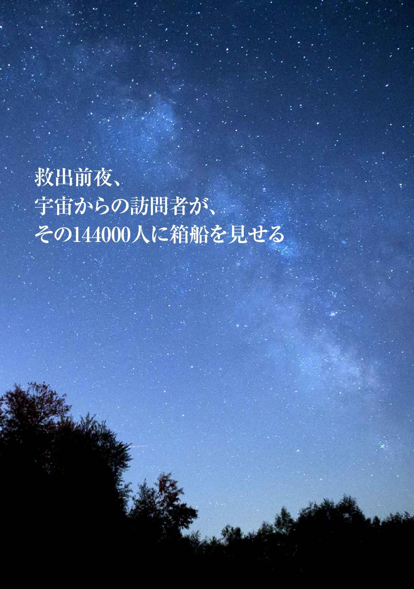
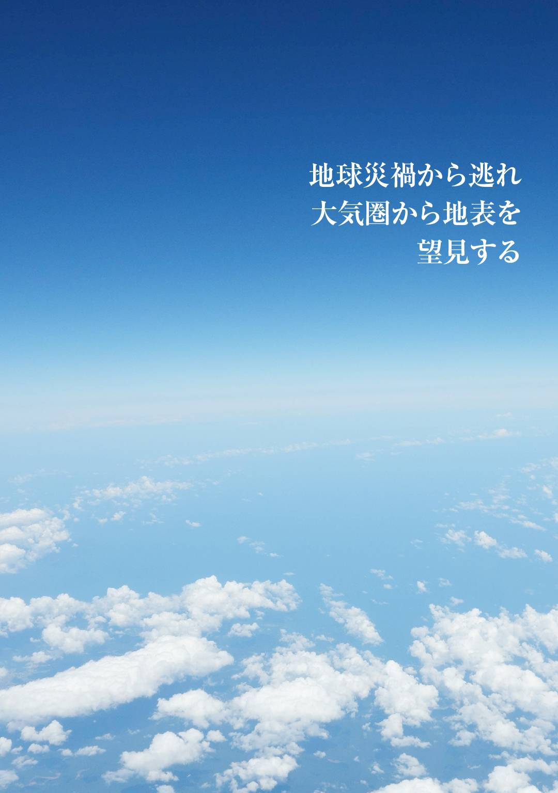
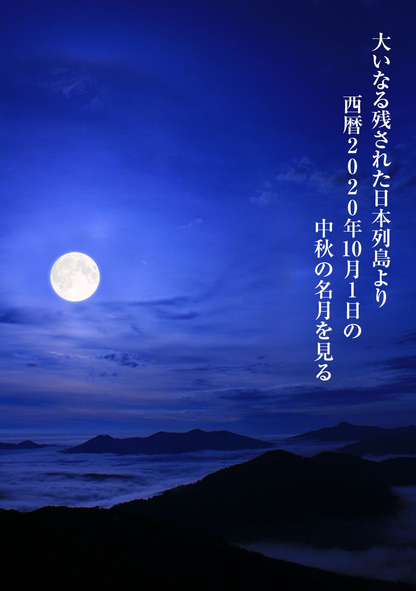

| 144000人の帰還 | |
| 相田暢三 | |
１４４０００人の帰還
相田暢三
◆マヤの暦、紀元前１８６３３年まで遡る大周期と西暦２０１９年の謎
◆２０１１年４月、フランス人モーリスロレッティと運命的な出会い
◆主人公、毛利謙三のパートナー高峰ゆうことの出会いと結婚
◆毛利謙三の会社の研修旅行の目的
◆民族資料博物館上席研究員、羽生田浩の見解
◆２０１７年２月、西暦２０２０年秋、地球破局のメッセージを伝えられる
◆毛利謙三、一時帰郷する。母と妹あかね、友人の瀬川京助に会う
◆その日、世界で１４４０００人、そのうち日本で１２００人救出計画を明かされる
◆モーリスの正体と我々の宇宙船を10 月４日、草津山中で見せると約束する
◆草津山中、四阿山で宇宙船が現れる。毛利謙三との約束が守られる
◆草津山中で採った山葡萄、ゆうこの実家の庭に植える
◆『さらば南蛮アパート』部下であった柳田に寄せ書きを送る
◆西暦２０２０年が明ける。名残りの桜を見る隅田川
◆この年の８月６日、地球破局は９月６日とメッセージが伝えられる
◆毛利謙三、ゆうこ８月10 日会社へ退職届けと休暇届けを出す
◆８月ゆうこ実家にもどる。母との今生の別れ
◆宇宙船救出計画の地、青森トワリ山迷ケ平へ向かう、東京を離れる
◆八戸から登山口、羽生村に到着、投宿する
◆友人、瀬川京助に最後の別れのメッセージを送る
◆９月５日、最終目的地宇宙船飛来地、トワリ山迷ケ平に入る。
◆トワリ山、迷ケ平に凄まじい閃光が走る破局の予兆、避難民続々集結
◆９月６日、巨大宇宙船迷ケ平に現れ着地する。大気圏へ避難民が乗り込む
◆宇宙船の窓から名残り雪の幻影を見る
◆宇宙船から破局の日本を見る
◆宇宙船の生活とキャプテン、タミアラとの再会
◆宇宙空間大気圏の夜明けと宇宙庭園
◆宇宙庭園でサザンカの種を植える
◆アフリカ東部と中東地域を見る。国家間の戦争が始まっている
◆宇宙船６０００キロ南半球へ移動、新しい大地の上空へ
◆新しい大地の全容を見る
◆帰還する時が近づく15 時間前、宇宙船降下始める...
◆宇宙船から大地の夕立を見る。そして晴れ
◆巨大宇宙船着地する。救出計画西暦２０２０年10 月１日１４４０００人帰還する
◆宇宙船船長セムロマーテン最後の会見、その後プレアデス帰郷へ
◆別れの「ジヤケンコ」モーリス、タミアラ、乗員宇宙船大地を離れる
◆大気圏から帰還した１４４０００人大地を踏みしめる。新生活の幕開けとなる虹を見る
◆大いなる日
２０１３年５月の今となっては東日本大震災は２年前のことになってしまった。
２０１２年12 月12 日、この日は何の日であったかという一部メディアで報道され話題になったことがある。マヤの暦によればこの日は地球終わりの日であるという、しかし何も起こらなかった。その１ヶ月前にＮＡＳＡ航空宇宙局の声明で「そんな兆候はどこにもありません」ときっぱり否定した。その通りであった。
毛利謙三はその件について何年か前になにかで見たのか聞いたのかどうしても記憶がなかったが、その日にちは以前から知っていた。仕事で使う手帳にその日付だけは手帳が変わっても記録していた。メディアに話題になる前からである。
ところで、ある書物の著者を登場させよう。彼はフランス人で名をモーリスシャトラン１９７９年12 月に書き表した「神々の遺産」という書物にはこう記している。
マヤの暦は紀元前１８６３３年まで遡る、５１６３年を大周期として西暦２０１９年大周期の４周期が終わるとし、第５周期西暦２０２０年が到来する。その節目節目には火山の爆発、地震、世界的飢餓すべてを破壊する暴風雨、大洪水で終わっている。
ノアの箱船、キリスト誕生、ナポレオンの死、アブラハム死、アリストテレスの誕生、マホメットの誕生、初代皇帝オーグストの死などなど、政治上や宗教上の事件と奇妙に符号しているという。西暦２０１９年と２０２０年がどのように終わり、どのように始まるのか記されていない。著者はこの暦の周期は木星と土星の会合周期を基礎とする唯一のものだろうと指摘している。従ってこの書物よれば先の２０１２年12 月12 日は特に触れていない。著者の職業は当時ＮＡＳＡアメリカ航空宇宙局の物理科学者であり、内容において過去から未来にかけて世界の４大文明の紀元からそれぞれ文明が使用していた暦を解き明かし、節目節目におけるその時代の地球の異変、宗教者、政治上の指導者の誕生と死、戦争などもろもろの事案を物理的、数字的にそれを証明しようと試みたのであった。
毛利謙三はこの西暦２０２０年に何か起こるのだろうか、地球破滅まではいかないだろうとも、地震か大洪水か火山の爆発か国家同士の戦争、それもいくつかの国で同時に核戦争が始まるともいえる。そうだとするとそれは今からだと７年後のことになる。
気象異変とはいえまいが核戦争がおこれば国家の滅亡、人間のそれも何千万の死傷となれば、それもこの世の終わりと解釈すればそれも成り立つ。しかしながら２０１３年５月現在、日本においては平和な時を刻んでいる。この時が未来永劫に続くものと思われた。
天を突き刺すとも思える細長い電波塔、東京の空を針で突き刺したように伸びている。
これはあたかもオベリスクのようである。この電波塔が完成してから、もう間もなく１年になろうとしている。東京地方はまことにおだやかである。桜の花も３月末には満開となるも北海道帯広では雪が５センチも降り積もったという。異常気象とはいえないものの１３０年あまりの観測史上以降ここ30 年、季節のうつろいのようなものが周期的に起こり、例年にない気象の変化が報道されているようである。
地球創世以来何十億という月日が流れていることを考えてみればたかが１３０年程度の観測スパンなどとるにたらないだろう。しかし、２０１１年３月東日本大震災などは１０００年に一度起こるか起こらないかとの見方をしていたようであるが、１０００年であれ２０００年であれ、その時点で人々が生活をし、日常生活を普通にやり過ごし平和に暮らしていたその場所で東日本大震災のような大きな地震がおきればそこに暮らしていた人たちにとっては大変悲惨な目にあう。震源地付近ではなおさらである。大変迷惑な話ではある。この地震が発生した時、三陸海岸に大きな津波が押し寄せるとあらゆるメディアより緊急に何度も繰り返し情報を流していたにもかかわらず、一瞬にして３０００名近い死傷者をだした。報道によればこの地域に住む人々の大半は「そうはいってもこのあたりにはこないだろう、来たとしてもそんなにおおきなものにはならない」などとその後のインタビューで話していたと記憶する。毛利謙三は地震発生の緊急情報とその時以降どんな展開になるのだろう注視していた。その一週間後、衝撃的な映像にショックを受けた。一般には数メートルの津波が押し寄せ家々が押し流され津波が去った、あとかたもなく荒廃した市街地を思い浮かべるかもしれないが毛利謙三には別の視点があった。それは海岸に沿った一本の道であった。片方は６メートルくらいの強固な堤防が築造されていて道路をはさんで反対側に家並みが続いている。道路には車数台が走り舗道には親子づれが歩いている。この光景を見る限りごくあたり前の風景がそこにあった。地震発生津波の警報がでているさなかである。ところがこの部分を映しているカメラがありそれより上方の高い位置に設置されているのか、あるいは誰かがそれを偶然映しているのかわからないがその位置から道路と車、親子連れ道路をはさんだ堤防と海側が一つの画面に収まっていた。ところが海側のほんの２、３メートルのところに高さ10 メートルを越すかとも思える津波が来て危険がすぐそこに迫っている。しかし、舗道を歩く親子連れ、国道を走る数台の車、普通の光景がそこにあった。次の瞬間、大きな津波が堤防をあっという間に６メートルの高さの堤防を飛び越えた時、その映像はそこで切れた。多分撮影していた人もそこを逃げたのか、本人も津波に巻き込まれたのかもしれない。衝撃的な映像であった。毛利謙三は改めて思い出した。
聖書にはその記述がある。
「その日は盗人のように突然やってくる。その日まで人々は話、笑い、妻をめとり家族と食事をし、恋人と楽しい語らいをしている。日常生活においてなんら変わることなく平和を享受している」
とあって、
「人々はいつも目を覚ましていなさい、その時は必ず来ることである」
さらに、
「聞く耳を持つ人は聞きなさい」
であった。
先の映像、国道を走る車、舗道を歩く親子連れ、普段のありふれた光景であるけれど一瞬にして想像を絶する惨事となる。まさしく聖書の言葉その通りのことが書かれている。
「その日は盗人のように突然やってくる」
東日本大震災は盗人のように突然やってきたのではないか。
毛利謙三はマヤの暦のごとく２０１９年第４周期の終わりと第５周期の始まる２０２０年はやはりなにかおこるのかもしれないという素朴な感情は持ち合わせていた。
現在は２０１３年５月の連休明けである。謙三は入院していた。以前バイクで転倒、その時、膝を打撲し、その古傷が再発し入院治療としている。病院の７階ラウンジから見渡せる風景はすばらしい。東京郊外にあり穏やかな田園がすぐ真下に見え、五月のそよ風がしなやかに植えたばかりの稲穂をゆらしている。遠くに目をやればスカイツリーの上部のアンテナが見える。太陽の光はやわらかく大地にふりそそぎ大きな恵みを地上にもたらしている。太陽系になんらかの変動がおこらないとすれば今後数億年は今の状態が続くと見られるというのが物理学者の一致した見解のようである。このような定説のなかで西暦２０２０年の破局というのはあまりにも現実味がない。本人のみ西暦２０２０年をどう解釈しようと自由であるものの第三者にいえばそれこそ気違い扱いされるだろう。毛利謙三もそれほどバカではないから自分の信念と思いと行動すればそれでよい。
フランス人モーリスロレッティに初めて会ったのは２０１１年４月である。東日本大震災が発生した１ケ月後のことであった。きっかけは毛利謙三が勤める会社コスモコミュテイ生業は不動産管理業であり、会社が保有するマンションがありそこに賃貸者として入居したことに始まる。男性38 歳、日本語を流暢に話し、毛利が部屋の案内、マンションの規則ルール、公共機関、スーパーの所在地など情報を提供する義務があり、部屋の入居の際立ち会い説明をした。それをきっかけにもう３年のつきあいがある。ＩＴ関連の会社に勤めているという。彼の住む部屋は会社が単身赴任者用に長期間借りていて転勤者があった場合とか、ほかに新しい赴任者が来るとその部屋に入居する。しかし、モーリスと話をする時は不思議に感じることがあった。それは毛利の生い立ちに関することであった。生まれた時からここにいたるまでの32 年間、どこで何をしていたかなど言葉の端々からすべて知っているともとれることがあった。不思議な感覚であったけれどもたいして気にもしなかった。偶然あたったともとれる。
退院した２ケ月後、７月の初旬国道１２３号を南下する二人の男性が認められた。相模湾を左にみて右は伊豆山地が続く、マウンテンバイクに乗る毛利謙三とモーリスであった。
謙三が２泊３日くらいで伊豆半島をマウンテンバイクで一周しようとするこの日であった。
遠くでは漁船が白波をたてて沖で漁をしているようだ。カモメが空をかすめ飛ぶ。
「ケンゾウここで一休みしよう」
モーリスが声をかける。
「了解」
二人はややカーブしたところに見晴らし台があり、ここで一休みする。背中のリュックを外しペットボトルの水をロに放り込む。二人はベンチに腰を下ろす。目の前は絶景である。どこまでも澄み渡る相模湾、群れ飛ぶカモメ、沖をいく外国船。
「モーリス、君の国にはこんなすばらしい場所あるかね」
「南仏にいけばたくさんあるよ、ここもいいけどね。世界にはたくさんある」
「覚えているかい、君が日本来た頃大きな地震があったこと」
「覚えている。たしか日本についたその１ケ月前だったと思う」
「僕はね、あの地震以来、人間の命なんてものは明日をもわからないってよく聞くけど、本当にあるんだね、昨日まで平和に暮らしていた人が一日と一晩で何千という人が死んでなくなるなんてこと。こんなことってあっていいものかね」
「............」
モーリス黙る。
「それはその時、その場所に住んでいた人たちは気の毒な話だ、その地震が起こる前になんらかのシグナルがあれば大勢の人が助かったかもね、神様というか自然災害というかなにか矛盾のような感じもするね」
一時の風が流れた。
「ケンゾウの気持ちは分からないでもない、しかし時としていくら神様でもすべての人を一人残さず助けること不可能だよ、神様が存在しての仮定の話としても」
「えっどうして」
「話は難しくなるけど、その場合人によってはたまたまその地を離れていたり、旅行中であったり、冠婚葬祭などで福島から遠く離れていたり、たまたま僕みたいにその１ケ月後に東京に赴任していた場合はそんな災害に巻き込まれなくてすむ、そんな時は助かることになるね」
「モーリス、その冠婚葬祭など日本的な呼び方よく知っていたね」
モーリス苦笑い
「君は本当にフランス人かなって思うことよくあるよ。それはともかくとして、たまたまその場所から離れていた人は運がよかったということになるのかね」
「そう、運がよかったともいえる。それは運がよかったのではなく本人には自分で気がついていないけどあらかじめ予定されていて自然のままに行動したことになる」
「あらかじめ予定されていたというとはどういうことなの」
「その説明は更に難しくなるね。ケンゾウこの話は次の時また少し話はしよう」
「あっ、そうだね」
モーリスの眼差しは憂いに満ちていた。不思議な人物であることをまた一つ確信した。彼は全てを知ってるのであろうか。モーリスは知人なのか友達なのか親友なのか、毛利にとってどれに当てはまるのか、いやどれにも当てはまるまいそれほど正体不明とはいいすぎにしても不思議な感覚であった。親友といえば郷里には親友と呼べる瀬川京介がいるがそれを超えた何かを持っている。何だろう、それが解き明されないまま二人はなおも伊豆下田を目指してマウンテンバイクを走らせた。フランス人モーリスロレッティの正体が依然として分からないまま２泊３日のサイクリングロードが終わった。そんな日であった。
それから２、３日経過したある日。５月７日であったと記憶する。ＮＨＫニュースでこんなことが報じられた。南米リオデジャネイロ沖１５００キロ水深９００メートルの海底で大地上のようなものが発見され、海水では絶対生成されない花崗岩と石英がそこに沈んでいるという。これが伝説の島アトランチスではないかという報道があった。
謙三は息がつまるほどの衝撃を受けた。なぜならずっと以前から今日までアトランチス大陸が存在する、しないということに大きな関心を持っていた。たまたま偶然この報道に接した時、謙三の思いが宇宙に通じたのかいなかわからないけれども運よく知らせてくれたことだと自分なりに解釈した。それで十分である。
この報道でアトランチス大陸であるとアナウンサーの言葉が出る前に「これはアトランチスだ」すぐ謙三はわかった。その後アナウンサーは「これは伝説の大陸アトランチス大陸ではないかといわれています」の放送が流れた。この報道があった後、しばらく謙三は意識高揚が続いたことも事実であった。
ここ１年日本は穏やかな日が続いているけれども、世界に目を転じれば頻繁に戦争、特にシリアの内戦に政府軍と反政府軍の戦いにイスラエルが加担ミサイルを打ちこんだと言うことやら中国、中東地域で震度５を越える地震の発生を伝え、これより５年前にスマトラ沖地震で20 万を越える死傷者を出したという。こうしてみると地震は世界的な規模で発生しており、国家間の戦争は限定的であれ中東地域で止むことなく続いている。エンドレスバトルの形相である。一方２０１３年５月の報道によれば南海トラフにおいて政府地震調査委員会の報告として、ここ20 年以内にマグニチュード８くらいの地震が発生するその確率として80 パーセントである。そして死者は30 万人と想定、死傷者として２００万人は越すであろうという、極めてショッキングなニュースであった。さらにこの地震はいつおこるのかわからないけれども明日にでもおこる可能性もなくはない。切迫しているで結んでいる。政府地震調査委員会の報告である。
公的機関の委員会であるからまるっきり無視もできまい。昔よく言われたなんとかの予言者のまやかしとも否定できないだろう。しかしそれはいつ来るのか特定はしていない。明日なのか５年先なのか10 年先なのか、もしかしたら50 年先であるかもしれない。だけどそれがマヤの暦による第４周期の最後にあたる２０１９年、もしくは西暦２０２０年、すなわち第５周期の１年目に南海トラフの大地震の発生が起きたらと仮定することはできないだろうか。多分この時期には世界的に気象異変、中東地域の戦争が勃発、この地域に多数の国は国に対して立ち上がり民は民に対して立ち上がる。大きな戦争が始まっている。この解釈だって成り立つ要素もある。しかもこの日から数えれば７年を切っている。地震学会のいう20 年以内の確率として80 パーセントという、しかし、10 年以内の確率としては70 パーセントであるともいっている。西暦２０２０年はマヤの暦にいう大周期の節目にあたる。節目節目には過去の大周期において何かが起こっている。とすればこの大周期の最後とその始まりの西暦２０２０年１年目には何かが起こる。マヤの暦と科学的に立証された南海トラフなどの大地震は妙に符号するではないか。世界４大文明、すなわちエジプト文明、メソポタミヤ文明、インダス文明、黄河文明などそれぞれの文明が使用していた暦の起算年代は紀元前４９０００年から紀元前３７００年、約４５０００年の開きがある。「神々の遺産」の著者モーリスシャトランによれば、起算年代は大きく違っていても、各文明の周期も３１００年もあれば３９００年、５２００年といろいろあるもののその着地点は西暦２０２０年であるという。まさしくマヤの大周期とすべて一致しているというものである。それでは西暦２０２０年には何が起こるのか著者は何も示されていないことを明確に明言している。ＮＡＳＡの物理科学者である著者らしい人となりなのであろう。謙三は科学者でもないし気象学者でなんでもない。個人の考え方をしても非難されることはないであろう。しかし、大きな地震などはある日突然やってくる、その備えだけはしておくことはだれでもそうであろう。西暦２０２０年どこに住んでいるか分からない。東京か郷里の四日市なのかそれともほかの場所かも知れない、それは今から７年後である。２０２０年も平和であってほしい、日本においても世界においても何も起こらないように今日のように平和であってほしいと祈らずはいられない。
しかし、その２０２０年謙三は大気圏から日本列島をみることになろうとは夢想だしなかった。それは誰一人として現実をはるかに越えた白昼夢であった。
それからまもなく１年くらい過ぎたある日のことモーリスから電話があった。声ですぐわかった。
「しばらくぶりだけどどうしたの」
「フランスへ急きょ帰ることになった。今の会社フランスで事業展開することになってその下地つくりさ」
「もう帰らないの」
「１年か２年くらいの予定、その後再び日本もどってくることになっている。しばらく会えないけど元気でね。だけど僕はケンゾウのこといつも見てるよ」
「なにそれ」
「ハッハッハッ、冗談冗談、今度日本きたらいろんな話をケンゾウにすることになるよ、それじゃジャケンコ」
モーリスの電話はそこで切れた。最後は意味不明な言葉であったけれど多分どこかの国の言葉で「さようなら」という言葉であろう。フランス語でないことは事実のようだ。モーリスが再び日本にくる少し前にこれが使われていたある国が特定されることになる。それは会社の後輩の友人の学芸員、羽生田浩なる人物から聞かされることになる。西アフリカ沖３０００キロアゾレス諸島で古くから使われている言語でそれは日本でいう「さよなら」であることを知ることになる。
毛利謙三にはつきあっていた一人の女性高峰ゆうこがいた。会社の同僚でも友人でも知人でもない。そのきっかけはこうであった。会社の出勤の前に必ず寄る喫茶店というより世界的ブランドのチェーン店ファストフード仮にＭ店としておこう。出勤前にコーヒーを飲むことを日課としている。その時間帯にはいつもそうであったが高峰ゆうこがカウンターに立っていた。毎日であるからお互い顔は知っている。彼女の前に立つと注文は決まってコーヒーであるから言わなくても用意万端トレーにそれを乗せて「はいっ、どうぞ」である。この時はそれといっしょに氷の入った水も注文するのでそれも乗せてある。１００円であるからそれをカウンターに置く。単純だけどもう４〜５年そうである。カウンターの店員さんは時間帯によって変わり、まったく知らない女性が突然そこにいるということもあった。辞めたり、新しく入る人もいるのだろう。高峰ゆうこはそのわりに長くいるようでかれこれ３年くらいその店その場所にいたことになる。
言いかえれば謙三とは３年つきあいならぬ、顔をあわせていることになる。ただそれだけである。しかし彼女の胸のネームプレートには、名前の上にＳＴＯＲＥＭＡＮＡＧＥＲの文字がいつのころからか入っていた。駆け出しのころから比べ、えらくなったのだろう。相手の名前は確認できたとしても毛利は名札をつけて店には入るわけではないから高峰ゆうこにとって名前など知るよしもない。しかし、２年前ころ会社近くのコンビニで買い物にいったところ偶然高峰ゆうこに会った。彼女もそこで買い物をしていた。店以外で出会ったことはこれが初めてであった。この時彼女は店の制服ではなく私服であった。「Ｍ」という文字の入った制服は毎日くらいみているので私服の制服はあえて新鮮に映ったかどうかわからないがお互い顔をはちあわせた格好になった。それもお互い店で勘定を済まし、店のドアをまさしく出るところであった。
「あれっ」
どちらともなく、
「あれっ」
であった。タイミングも同じくらいだった。
「いゃぁ、こんなところで会うとは思ってなかったね。僕はいつもここで買い物するけど君と会ったのは初めてだ」
ゆうこはクスッと笑った。お互い顔だけはずっと以前から知っている。ゆうこはすぐその場所から立ち去ろうという気配はないようだ。いちかばちか声をかけた
「お茶でもどうですか」
だめならそれでよい。しばらく怪訝そうな顔をしたけれども、
「いいのですか」
「ちっともいいですよ」
意味不明である。ＯＫが出たようだ。まさかＭの店までいけないだろう。そこで別の場所にドトールコーヒ１店がありそこへ足を向けた。そんなきっかけで高峰ゆうこと親交を交えることになる。その時名刺を渡しているので連絡は携帯とし、それから３年つきあいがつづいている。その後もこの店に出勤前にはコーヒーを飲みに寄るけれどゆうこがカウンターに立っていても、お互い顔の表情は変えず一人の客として普段とは変わりがなくトレーにはコーヒーと氷の入った水を受け取り席につく、これなどまったく大人のつきあいとでもいうのだろう。ゆうこが謙三の最良のパートナーになる３年前であった。
その後結婚、謙三35 歳、ゆうこ30 歳であった。
毛利謙三の会社は都内10 店ほどある不動産管理業であり、それぞれ各営業所がありその場所場所においてマンションなど所有管理賃貸など業務をこなす。謙三はその営業所新宿店に勤務する。本店は高田馬場店である。もっともこの場所に店舗はなく各店の統括機能を持つ。本社事務所であろうか。営業所単位では５〜10 名くらいの社員で構成する。謙三は課長職である。営業所では店長一人副店長もいるものの実質毛利謙三がその役を兼ねている。給料は店長と課長では手当の差では５万くらい開きがあるものの課長職の毛利は時として売り上げ報告など成績が上がらない時、本店の会議などでは店長に変わり役員にその説明することなどある。売り上げがそこそこある時には店長が得意満面で奏上する。そうでない時は毛利がする。本来は店長がするものである。それを毛利の責任のごとくその役がある。割りにあわない話になる。どこの会社でもそのようである。部下の手柄は上司の手柄になり、失敗すれば上司の責任ではなく部下の責任となる。矛盾があるものの会社の上下関係にはよくあることである。
会社の恒例の行事として年１回２泊３日の社員旅行がある。行く先は毎年決まっている。草津それも奥草津にある小さなホテルである。合宿所のようなところである。社員旅行などはどこにでもあるがこの会社は特色がある。それは決まりきったコースを名所巡りのように観光するのではなく、宿泊先のホテルにつくと３日目の午後３時帰る時刻まではそれぞれ自由行動である。それは個人であろうと団体であろうとかまわない。ある人は一人で山登りをする。ある人は近くの温泉を何カ所も巡り歩く。ある人は社員同士でハイキングする。テニスをする。ある女性は近くの農家に２日ほどホームステイする。そして農家では家族の一員として野菜を収穫し、牛豚などのエサやりなどのお手伝いをする。まったくの自由行動である。しかし一つ条件があって、後日その体験談を簡単なレポートとして所長経由で会社に提出することが条件であった。それはその後全営業所に配布社内報として掲載されることになる。会社のねらいとして社員の意志疎通をはかり、社員のヤル気と親睦をかね今後の社員教育のために役立つようそれらレポートを参考にしようというのだろう。
10 月２日から４日までの予定である。
そして社員研修旅行の当日になった。新宿営業所所長と毛利を含む８名が上野の13 番ホームにその姿があった。特急草津２号はやがて長野原草津ロに向けて出発した。男性５名女性３名である。営業所単位なので例年この人数である。草津まで約３時間である。
「毛利課長今回も山登りですか」
部下の柳田が声をかける。
「そうだね」
「毎回同じ山に登って飽きませんか、別の場所とか」
「いやその場所でないとだめなんだ」
「山にこだわりを持っているんだ、先輩は」
「柳田、今回はどういう予定なの」
「去年は渓流釣り、ラフテイングをしましまたが今回は温泉三昧です。課長もたまには変わったことしたらどうですか。温泉なら僕案内しますよ、いいとこありますよ」
「そうだな、１日くらい君といこうか温泉に」
「そうしましょ、そしてあと１日は課長の登る山につれていってください」
「了解。それはそうと所長の予定は何かいっていたかね」
「何でも本を５冊くらい持っていって、湖畔のコテージでのんびり読むようなことでした」
「女の子は」
「二人の女の子はテニスとハイキングしてもう一人赤城さんは農家にホームステイするようなこと言ってました」
赤城澄江25 歳入社して３年目、一昨年あたりからどう渡りをつけたのか知らぬが宿泊するホテルの近くにある農家の人と仲良くなったらしく、農作業のお手伝いと野菜の収穫、牛のエサやりなどすることにすっかりハマリ今回もそうであるらしい。
「自然に親しみ、自然を感じるって近頃の若い人にはあまりないよね、いい性格だ」
「課長、そんな人たくさんいますよ」
間を外されたようになったが会話はそれで終った。草津２号は３時間ちょっと走り続けて長野原草津ロの到着、迎えのマイクロバスが駅で待機している。そして全員乗り込む。草津もようやく紅葉が始まったところなのだろう。紅葉が始まると一週間くらい全山赤く染まるという。白根山はうすく頂上付近は雪をかぶっていた。毛利はこの研修旅行では毎回同じ山に登り。同じことを繰り返している。
所長ほか他の同僚達も頭のガンコなヤツだと思っている。何がそんなに魅力なのだろうと感じているに違いない。だれがどう思っているとも毛利は一向に気にはしてはいない。それは温泉好きの人間が毎日温泉にいくのとなんら変わりないからである。毛利には一つの希望があった。それまで一度たりとも見たこともない空飛ぶ円盤をぜひ見てみたいという思いがあった。もちろん他の社員、所長にこんなこといってみたらそれこそ気違い扱いされるだろう。空を見上げればいつでも見られるとは限らない。もっと言えば空飛ぶ円盤など実際存在するのだろうか。そもそも論になる。空飛ぶ円盤を記した多くの書物の著者がいっていることが総じて円盤の搭乗者の話として「我々はたくさんの人が住む都会などにその姿を表わすことはしない、人里離れた山奥とか砂漠の真中である」といっている。草津それも奥草津である。都会ではない。人里遠く離れた場所でもある。空飛ぶ円盤の搭乗者がいっているように格好の場所ではないか。毛利謙三は毎回淡い希望を持ちつづけながらそれを実行する。いつかその思いが叶うこともあろう。
コスモコミュティの新宿営業所の社員８名を乗せたマイクロバスは草津の市街地を抜けてそれから30 分程度かかる奥草津を目指しさらに走る。やがて林に囲まれた小さなホテルに到着、玄関脇には「コスモコミュティ御一行様歓迎」の看板がある。
それぞれの部屋に入り旅の支度を解くと集会所へ全員集まる。所長から挨拶がある各自の予定はあらかじめ届けているのでそれを確認する程度である。これも恒例である。
「今年も２ケ月あまりを残すこととなりました。各自自由行動でよろしいのですが事故のないようにそれぞれの責任おいて自覚しながらこの３日間過ごしてください。皆さんの予定表は出ておりますが念のため各自報告してください、柳田主任から予定を聞かせてください」
「今回は温泉を何ケ所か回ります。それと１日は毛利課長と一緒に四阿山に登ります」
「毛利課長と」
「そうです」
「わかりました赤城君は、たしか予定表では去年と同じホームステイですよね」
「そうです。農家のお手伝いをして、土をいじり草とりして牛にエサなどやります」
「山下君と大川君はどうですか」
残りの女性二人である。
「私たちは二人で行動いたします１日はハイキングです。１日は草津まで出かけて甘いスイーツを食べます。それくらいかな」
「けっこう、毛利課長は山登りだね」
「そうです、それだけです。さっき柳田主任もいった通り彼と一緒に登ります。それと彼は温泉も今回いくようですので僕も今度は彼と同じ行動となります」
所長が最後の締めくくりとして、
「はいっ、皆さんの予定はわかりました、事故などの緊急なことが起きたらすぐ僕に知らせてください、携帯電話は必ずあることを確認してスイッチはＯＮであることもあわせて確認しておいてください、それから言い忘れましたが僕はこの３日間湖畔のコテージで本を読むことにしています。それではこれで解散です」
このミーティングが終わると各自部屋に戻ってそれぞれの予定にそってその準備をし、研修旅行の第１日がスタートする。
さて、毛利とその後輩、柳田主任は、
「毛利課長、山登りは明日にして今日は温泉としませんか、ここから歩いて15 分くらいのところに川沿いの温泉があるんですよ、けっこう風流ですよ。課長の性格にあうような気がしますけどね。山とか自然とかよく言ってるでしょ、あれはピッタリのような感覚じゃないでしょうか」
「それならそこへいこう」
ジーパンに長袖のＴシヤツ、肩にタオルを引っかけて二人は出かけた。ホテルの裏手に細い道がありすぐそこに小さな川が流れている。川の上流を目指すこと15 分。
川沿いにはカエデ、シイの木ブナ白樺、ナナカマドなど色好く紅葉しその枯れ葉がゆらゆら舞い落ちて川面に落ちる。そして木の葉船のように下流に下る。
それが間断なく続く。まさしく柳田のいう、風流な感覚であった。
「柳田君、まさしくこの光景僕は気に入ったぞ」
毛利がいう、
「課長、僕がいった通りでしょ、たぶんこんな風景気にいるんじゃないかって」
「これはいい。だけどまだ先のほうかね。温泉って見えないね」
「いやもう着いてますよ」
周りにはそれらしいものはない、そばを流れる川と岩それに小石ばかりの川原がそこに広がるばかりである。
「課長、あそこに岩が２〜３見えるでしょ、あの下に温泉が湧き出ているんです」
「えっ」
そういって近づいてみると、なるほど人一人くらい入れる穴が開いていてそこから温泉らしきものがコンコンと湧き出ている。手をそっといれると暖かい。露天風呂とはおおよそ言いがたいが確かに温泉のようである。手を伸ばせばすぐそこには冷たい川が流れている。川と穴の開いた、いや穴を堀ったその温泉との境目は小石で仕切られているだけである。温泉に入るという感覚ではない。水溜りに入るようである。
何とも不思議であった。柳田はもう素っ裸、３メートルくらい先の温泉もう体を沈めている。言葉ではいいつくせないような今の雰囲気である。毛利も全裸になっている。
じゃぶん。と体を沈める、脱衣室などあろうはずもない文字どおり大自然のままの温泉につかっている。
「課長、どうですこの開放感、僕はこの気分最高だと思っています」
川沿いの木々は色づき清流の音はサラサラ聞こえ、落ち葉は温泉に舞い落ちる。空はどこまでも青く遠く澄み渡る。カワカラスはすぐそばにきており尻尾を大きく上下に振り下ろし、清流にもぐる。しばらくして２回くらいそれを繰り返し小魚をゲッ卜したようだ。
最初は神妙な顔つきであったものの柳田のごとく毛利自身もこの開放感というものがじわじわ出てきたようだ。
「これはすごい、君と同じような気分になってきたよ」
それも奇妙に思えたのは自分の目線とすぐそこに流れている川の水面が同じ高さであることだ。川の水が今にもこちらに入ってくるという気がする。わずかの高さのところに小石がしきつめられているのでそれが水の侵入をふせいでいるのだろう。おしりの下から温泉がシャボン玉のごとく湧き出している。心地よい感触であった。
ふと柳田の方向に目をやるとスコップで川のそばの砂を掘り始めている。そんなスコップいつ持ってきたのか分からないがやおら堀り初め５分くらいすると小さな穴が掘れたようである。
「お前、何してるの」
「課長、新しい温泉ができましたよ」
そういうと柳田はその穴にまたしても体を沈めた。
「いい感じっす、このあたりはどこを掘っても温泉が出るんです。30 センチも掘れば温泉がでますね。いやこのスコップはその岩のところにいつも置いてあって、来た人が好きに掘ればよい。地元の人がいっていましたよ」
なるほど。柳田はよく知っているようだ。
「地元の人くらいだろうこんな場所、知ってるなんて」
「けっこう若い女性でもくるらしいですよ、以前に女性の温泉ソムリエが来たらしく、それが旅番組に紹介されて、それ以来隠れたブームですよ」
「しかし女性じゃ脱衣室もないだろう、どうするのかねそんな時」
柳田が指さす方を見る。
「川の向こうについたてがあるでしょう、女性はそこで着替えるのです。ちゃんと水着に着替えてね」
その方向に確かに２メートルくらいの板で仕切られた場所がある。そういえばある。
「柳田よく知ってるね。僕は驚いたよ」
「課長、今は秋、夏場にきたらそこかしこに女性ばかりあふれていますよ。あちこちに穴が開いてる場所は女性達が穴を聞けた場所も少なくありません。課長の入ってるその温泉、もしかしたらこの夏女性が堀ったものかもしれませんね」
これを聞いた毛利苦笑い。草津川の源流に近いところ、温泉の原風景がそこに展開している。この先をもう少し行けば苔むした場所がありそこには温泉が滝のように流れている場所もあるらしい。これは草津の隠れた名所である。毛利も山ばかりであったが柳田のいうようにたまにはこんなところもよいと思われた。ホテルには夕刻には戻ったものの、その前に村の人がよく使う日帰り温泉があり、そこも、もう一度立ち寄る。村民だと３００円で利用できる。一般客は４００円である。立ち寄る理由はある。先ほどの温泉にはいると少々体に砂がついてしまう、そこで砂をきれいに洗い流す、そのために立ち寄るのである。よくしたものでその日帰り温泉は浴場に入る前に入り口でシャワーが用意してあって砂を洗い流すためにあるのかないのかわからないがきれいにしてから温泉に入ることになる。温泉は源泉掛け流しである。夏場にくる女性達も利用しているという。いろいろ勉強させられた１日であった。
次の日は毛利のコースである四阿山に登る。毛利と柳田の二人連れである。片道約２時間である。ホテルを出てすぐ前の細道がその入り口である。何本かの細い川を渡り、白樺林を通り抜けクマザサの生い茂る平らなところに出るとそこがいつもの場所である。
「さあ、着いたよ」
毛利がいう。そこのところに大きな大木を横にしたベンチのようなものがあり一休みできるようになっている。なぜなら大木の一部は腰が下ろせるように平らに削ってあるからである。
「柳田、ちょっと振りかえってみて」
柳田振りかえる。
「あっー、これは絶景ですね」
真下の方角には草津の市街地が望め、その左手には白根山が見える。眼下をくるりと取りまいているのは樹海である。めくるめく樹海はその字のごとく幾千もの木々が一つの絨毯のごとく覆い被さっている。
「僕はね、この場所で日が暮れるまでいる、だけどそれで飽きることはないね」
「でも何かを考えているんじゃないですか、課長は」
「そう見えるかい、つまりその通りだ」
「そうでしょ、多分僕はそのことじゃないかな......」
「柳田、僕はもしそれが実在すればの話になるが......」
「やっぱり、それってもしかしたら空飛ぶ円盤じゃないですか」
「よくわかったね、それが」
「毛利課長はよく話のついでにそのようなことぶつぶつ言っていたようだし、僕も今まで見たことはないですけど、きっとあると思いますよ」
「そうだ、君がそこまで僕の気持ちがわかってくれれば話は早い、僕がこうして何年もここにきている。その目的はただひとつ空飛ぶ円盤が実在し、円盤の搭乗者かだれでもよい、この気持が伝わったらきっとその姿を表わしてくれると思っている」
柳田はその話を聞いてもとくに驚く様子はない、多分第三者が聞いたら気違いとまでいわないものの変わり者だととられるだろう。
「すると課長はまだ見たことがないのですね」
「あーないね、空飛ぶ円盤と今地球でおこっている世界的に大きな地震とか中東地域での戦争などまったく関連のないような気もするけどね、僕はその影響は多少はあると思っている、聖書にはある、地を揺るがすような大地の震えとイスラエルに大砲が向けられるとき終わるとね」
「課長その終わるとはどういう意味ですか」
「一般には地球の滅びと時と解釈されている」
「そして最後には核戦争が始まり、世界各地で大地震が発生。そして３分の１の人類が滅びる。そして３分の１の大地が海に没する、というシナリオさ」
毛利は自分なりの解釈を展開する。
「それって、恐い話ですね。そんなことは予告なしあるのですかね」
「予告なしだ。一瞬にして何万何千の人が死ぬことになる。半年前のこと覚えいてるかい、ロシアの隕石落下事件のこと」
「知ってます」
「あれがもしモスクワ市内のど真ん中に落ちたらどうする」
「想像もできないですね」
「柳田君、よく聞いてほしい。あの隕石のエネルギーは広島型の原爆の30 倍といわれている。火薬にすると44 万トンという。何万ではなくて１０００万２０００万の人々の命が瞬時にして失うことになる東日本の大震災の比ではない。地球の科学者、宇宙物理学者、天文学者ＮＡＳＡの科学者でさえだれ一人この隕石の落下など予測した人はいない、つまり最後の日というのはこのように突然やってくるものさ」
「恐ろしい話だ。じゃあこれは防ぎようが無いってことですね」
「ない、だけど常日頃ほんの小さな出来事に関心を持っているとそれなりに助かる見込みもないわけじゃない、生きることができるのか否かは運しだい、ただ何もしないで運任せというのではうまくいかない。その辺が難しいところだ」
「今日の課長は哲学者のようですね、やっぱり課長はこんなこと思っていたんだ。だけどですね、その終わりの日っていうのは１０００年２０００年先くらいなら僕は死んでいるからいいですけどね。課長それはいつ頃の予想ですか」
話のついでにはその質問になる。
「僕は神様でないから分からないね」
毛利はその時を西暦２０２０年と踏んでいる。それは地球が消滅破壊されてなくなるというものではないものの世界的に大きな地震、津波、大地の一部が海に没する程度は起こるとみていた。しかし部下の柳田には２０２０年などと言うつもりはない。
「そんなことがないように思いたいね、柳田君、僕達が見ている奥草津の山々や遠くに見えている草津の町、あそこの白根山、こんなきれいな風景がきたるべき大地震で町の大半がそこに埋没する。天明の大爆発ではその先の嬬恋村の半分が一夜にして浅間山の噴火によりその下１００メートルまで降り積もる灰の下になった。今度の場合は大地震も重なると草津の町はそっくり灰の下ではなく大地の奥底まで沈み込むことになる。こんなこと想像したくはないがそれでも大地震、大戦争、世界各地の火山の爆発など頻繁に起こるようだとそれは神からのシグナルと思って備えはだけはやっておく、これに越したことはない」
「ヘーなんというか恐ろしい話ばかりになりましたね」
「だけどそんなに心配ばかりしていては気がおかしくなる。僕はね、世界で起こっている戦争、飢饉、地震。いや、日本でおこっているすべての出来事には常に情報をとるようしている。これがいつか役に立つことを知っている。常に目を覚ましていることさ」
その時であった。二人の携帯に同時に緊急地震速報が流された。携帯のけたたましいあのサウンドである。携帯の文字ニュースによれば伊勢志摩沖２００キロ沖で震度５の地震が発生し津波警報を発令中、沿岸部では２メートルの津波が来る、緊急非難してください。警戒区域として名古屋、桑名、四日市、鈴鹿津、伊勢などである。この文字放送が繰り返し流されている。毛利は脳裏をかすめた。四日市などは郷里、母と妹がいる。高校時代の親友瀬川京助もいる。すぐ母に電話をいれたけれども電話が殺到しているらしくつながらない。携帯電話の液晶パネルには圏外と圏内と交互に表示されるのでそのせいもあろうか。先の政府地震学会の南海トラフで大地震が明日にでも起こる、それは切迫しているという内容にぴったりあてはまる。
「課長、お母さんのこと心配でしょうね」
「柳田君、平和な時であれそれは突然やってくるものさ、今日はとにかく下山しようホテルにもどろう」
「そうしましょ」
それから２時間かけてホテルにもどる。ロビーのところには社員の大半がもどっておりテレビに釘付けとなっている。ＮＨＫのニュースでは特別番組で先の地震を伝えている。津波は１．５メートルであったという、幸い堤防はこえなかったようであるが１波２波とおし寄せることもあるので引き続き警戒が必要という。そして次の画面が流される。それは四日市の石油コンビナートの貯蔵タンク一基が倒壊原油が流出、そして炎上している様子である。それは現地から生放送である。その他の市街地の様子もときおりその合間に放送される。タンクは昭和30 年代に建築されたもので耐震強度不足で近いうちに再建築する予定であったという。真暗な夜空に赤々と燃えるその炎は以前「四日市の灯」という作品を書いた煙突の煙を彷彿とさせるが、そんなノスタルジックなことではない。現地では死ぬか生きるかという大変な消火活動がなされている。その時携帯がなった。
「兄ちゃん、あかねだけど」
謙三の妹である。
「あかね、よかった元気かね」
「心配しないであたし無事だったから」
「母さんは」
「この地震でお店から帰れなくなったけど、元気でいるからって電話があったわ。兄ちゃんにこのこと伝えておいてって」
「よかったよかった」
「兄ちゃんまた電話する。このあたりでけっこう家の瓦や塀が倒れているところもあるようだし、今、市の広報車がなにかいってるから聞いておかなくちゃ、またね」
家族が無事であったこと、何よりも一安心だ。それからまもなくゆうこからの連絡があった。
「謙三さん、私だけど、四日市大丈夫だったかしら、お母さんと妹さん」
「ああ、大丈夫だってさっき妹から電活があった。今のところ大きな被害は出てはないらしい、だけど時間がたてばもっと被害は大きくなる可能性はあるね」
「じゃあ四日市へいくの、もう少し先になりそうね」
この意味はわかっている。以前から四日市にいって謙三が若いころ見て、歩いた御在所岳、長島スパーランド、近くの海の潮干狩りなど一度行ってみたい体験したい、そしてレーコウなど、そう念願していた。そのことであった。
再びニュースの続報が入る。押し寄せた津波が木曽川、揖斐長良川を10 キロ上流までさかのぼり一部では川の氾濫と堤防の決壊が報じられた。堤防の決壊などは昭和34 年の伊勢湾台風以来50 年前の再来であるという。帰郷のたびに懐かしく思うのは名古屋から近鉄に乗り換え揖斐長良川と木曽川の陸橋を渡るとき右手に養老山地がゆるやかに見え始めるときやっとふるさとに帰ってきたなという感がある。しかし河口から10 キロというと養老山地のすぐそばまで津波が押し寄せたことになる。
ふるさとの景観がまたひとつ壊されることになる。そんなことを案じながら、今は草津のホテルにいる。５００キロ離れた場所で地震の余波と災害救助にあたる人、何名か何十名かわからないけれど死者がでていることを思いやれば複雑である。幸い母妹は無事あることは確認できた。再び携帯がなった。妹のあかねであった。
「兄ちゃん、いい忘れたけれどお友達の瀬川さんいるでしょ、あの人もとりあえず元気だって電話があったよ、兄さんによろしくってさ」
「そうか瀬川も無事だったか。わかった、わかったありがとう」
友人の瀬川は高校時代から親友であった。もっとも彼の自宅は四日市でも山手のほうだから被害はあまりないと思っていた。今度帰郷すればあいつにも会うことにしよう。
草津の社員旅行が終わった２ヶ月後、会社の掲示板に社内報が掲示された。それは先の旅行の体験記をそれぞれがレポートに載せるその記事である。
まず、新宿営業所山下所長の体験談である。
「本を５、６冊持っていきました。それはアジアにおける国家の成り立ちについての書物です。ムガル帝国、オスマントルコ帝国、中国、明、清帝国に関するものです。引退後においては東洋史をライフワークにしようと思っています」
営業部管理課長毛利の体験談
「毎年同じ山に登っています。今回もそうでした。人は時として平面上から物事を判断としているようですが、山に登るとそれまで見えなかった視点から見ることができると同時に地球の裏側においては、環境破壊戦争、飢饉などがおこっている、平和であってほしい。そう考えられるのが山に登った時です。だから僕は山に登るのです」
毛利の談である。確かに毛利は変わっている。一見宗教者か政治家ではないものの平和運動の指導者なのか。
柳田主任の談
「いつも温泉ばかり巡っていますが、先輩の毛利課長と今回は山に登りました。山の頂上につくまでの２時間、適当な汗と疲れがありましたが頂上に到達した時の達成感はそれを経験した人でないとわからないと初めて知りました。冬山に多くの人が登山していることをよく聞きますか、あんな寒いおもいをして登る人の気が知れない、家で寝ていたほうがよっぽど良いとこれまでは思っていましたが、今回の経験からその人たちの気持ちがわかるような気がします。一瞬の感動が新しい仕事への意欲も取り戻せたような感じをしています」
女性社員赤城澄江の談
「今年も農家のホームステイです。野菜の収穫、家畜などの世話、畑の草とりをしました。この農家は90 パーセント自給自足だそうです。生活していく上ではお金は必要です。だけどこの農家のように生活していけるだけの糧を得ることになればお金という価値そのものがあんまり必要ではない、そのように感じることがたびたびあります。生きるための人間の原点とかを見いだせたそんな気がします」
女性社員二人の談
「テニスとスポーツクラブで汗を流し、２日目は草津の街へ出かけました。おいしいものを見つけ探しだす、そして食べるなどして過ごしました。タウン誌を書けるくらい散策したところで、ある不動産さんの前に来たとき、これは私たちと同じ業種ですがそのチラシには空いている農家農地の賃貸、そして売買それが大変多くありました。一般に別荘とかリゾートマンションとかの売り買いと思っていましたがそうではありせん。立ち止まっていたので営業の方がきて声をかけられました。結論からいうと毎日農家農地の空き家賃貸とか物件の問い合わせがあって、それも東京近辺からだそうです。けっこうそれで商売になっているとのことです。会社としてまさか草津に営業所などだせないと思いますがヒントにでもなるかなあ〜」
各自各様であった。しかし後日この二人の女性社員のレポートがきっかけとなって会社は現地の実体調査をするかしないか検討するらしい。
その年の暮れ、ゆうこの母に会うことになる。謙三の紹介である。すでにゆうこより話はしてあるのだろう、話はとりたててない。ゆうこも謙三と同じく父を亡くしておりその意味では同じ境遇にある。ゆうこの家は下町の一軒家である。昭和といっても戦後すぐ建てたようだからかなり古い。傷んでいるものの母親はこの古さがとても良いといっている。その奥に小さな庭があった。日当たりはあまりよくないようであるが、それでも母は毎年キュウリ、ナス、朝顔など植える。不思議にもあまり多くとれないもののそれぞれの苗木においては花をつけ実が育つという。ゆうこには庭というものはあまり関心なかったようであるけれど、やがてこの庭に山ぶどうを植え、たわわに実るかどうかわからないももの謙三と一緒に新しい大地にそれを持っていき生きる糧となる。こんなことどうして知ることができるのだろうか。それは７年後現実のものとなる。
母一人を残し、ゆうこと家を離れた。母はもう安心したであろう。しかし結婚の日取りなどは決めていない。いつやるかはたいして問題じゃない。駅前近くのレストランで食事をすることにする。デパートの７階にそれはあった。和食の店である。席につく、
「謙三さん、社員旅行のとき、やっぱり草津のあの山登ったの」
「いつもそうだ」
「山ってそんなに素敵なの」
「とてもいい」
「私は都会が好き。ビルなどの建てものが見えるとなんとなく落ち着くから」
「たしか僕が東京へ上京して何年かしたとき、田舎からきた僕には人だらけ、山がみえない、コンクリートのビルばかり。こんなとこ長く住めないと思っていたけど...当時会社いた女の子、東京育ちなんだろうね、君と同じこといっていたよ。ビルが見えると落ちつくってね、人がいないとちょっとこわいなんて」
「東京生まれの人ってたいがいそうよ、夜は遅くまで明るいし、買い物も安心してできるしね」
女性はいつも現実的である。
「謙三さん、さっきの山登りのことだけど、今度私も連れて行ってくれない」
「そうだ、それも僕も考えていた君を連れて行こう思っている」
「謙三さんね、あなたが山登りしていることね。きっと何かの目的があるのじゃないかってね、その話になると急に人が変わったみたいに感じる時が時々あるの」
ゆうこは確信をついた。しばらく考えていた謙三は、
「ゆうこね、君のいった通り、一つの目的があってね、いやまだその目的がかなったわけじゃないけど、だから山に登るさ、そこに行けば、いつか必ず空飛ぶ円盤を見ることができる。その目的のために山に登るのさ」
ゆうこは怪訝そうな顔をしていたけれど別に驚く様子もなかった。冷静に受けとめたようだ。
「で、まだ見たことがないのね、その円盤とやら」
「残念だけどその通りさ」
「謙三さん、もっと先を考えて、万が一見たとしてそれだけで済むの」
話はさらに確信をつく、
「僕はね、一般の人は、例えば、空飛ぶ円盤に乗ってみたいとか、どこか宇宙へ連れていってほしい。金星とか火星とか月とか連れてもらうことができないかなって思うかも知れないけどね、僕は違うね。彼らに会うことが、万が一できるとしたら、まずこう聞くだろうね。どこからきたのですか、あなたの住む星か惑星かわからないけれど日常生活はどのような暮らしをしていますか、地球にやってきたのはどんな理由なんですか、たぶんこの三つのことを聞くだろうね、僕は」
「そうなんだ、謙三さんって普通の人じゃないと思っていたけど、きっとこれを思いつめていたのね」
「だけどゆうこ、仕事の時はめったにこんなこと話さないからね。気違い扱いされることは目に見えている。僕は課長だからそれなりに仕事はやっている。ゆうこだけは別、君なら僕の本心と気持ちはきっとわかってくれると思っている。そしていつか君と一緒にこの草津の山に登り、もし円盤に乗ることがあったらゆうこと二人、字宙の果てまでいくこともあるかもしれない、まったくの空想の話だけどね」
「うれしい、空想でもなんでもいい謙三さんがそんなこといってくれて私、幸せよ」
ゆうこの気持ちは気持ちとしてそんなこと現実になるのだろうか。
デパートの７階からふと眼下を見下ろせば、山手線が走り、駅前通りには大勢の人がいきかう。ＭＡＣの店、ドーナッツの店、ＫＦＣの店、スタバの店もある。これらお店にはたくさんのお客がはっいてるに違いない。西暦２０２０年何が起こるのか知れないものの、今はいたって街並は平和であった。やがて運ばれてきた食事は典型的な和食が二つ並んだ。一つは焼き魚とひじき、野菜の煮たものとほうれん草、漬物それに味噌汁である。一つは魚であるけれど鰈のあんかけ、副菜には肉じゃが、れんこんを薄くきりそこに青菜とカマボコをこれも薄くスライスしたものをあわせてある。味はポン酢味のようだ。漬物と味噌汁は同じものである。洋食の店が増えている昨今、たぶんこの店くらいだろう、純粋の和食の店は。
二人はゆっくり食べ始める。そして再び目を窓外に移す。
「あれっ」
山手線の架線のやや上方にぽっかりと満月に近いお月さんがそこに浮いていた。
「きれいだね」
謙三がつぶやく、ビルとビルの谷間に挟まれるようにその姿があった。ゆうこも箸を止めてしばし見入る。
「私もあんまり空、見上げなかったし関心もなかったけど謙三さんとつきあうようになってそんなことに少しずつ興味が沸いてきたみたい」
「ゆうこ、昔あの月のしま模様なんていったか聞いたことある」
「たしかうさぎの耳とかだっけ」
「それもある。だけど僕の田舎ではカニの耳だっていっていたな」
遠い記憶のなかである。
「僕の田舎ではね十五夜には、ススキ、萩、おだんごなど縁側に並べて飾るんだな。あっ、おはぎもあったな。田舎の庭はけっこう広くて入り口も門も塀もない、だから自由にはいれる」
「はいって、どうするの」
「そのおはぎやら、だんごを盗むのさ。仲間とね」
「そんなことして怒られない」
「それはいけないことだけどあんまり怒られた記憶はないね、東京じゃ庭などなくてマンシヨンばかりだからそれは無理だろうけれど、田舎はそんなことで怒りはしない、しかしあの頃はいい時代だったなー、それともうひとつ、幼稚園の時だった。七夕のとき、先生が大きな竹を近くの山からとってきてみんなでそれぞれの願い思いを短冊にかいて笹の葉に吊るす。何を書いたのかみんなで発表する。僕は何を書いたのか忘れたが、そしてみんなで唄を歌う、あの唄さ
〝笹の葉さらさら軒端にゆれるお星様きらきら金銀すなご〟
ゆうこはこの唄を知っていた。ノスタルジックになる。
「謙三さんって意外にロマンチストなのね。七夕飾りは知っているけど、その「笹の葉さらさら軒端」っての、これは聞いたことがないわね」
昭和の初期、小中学校で歌われた文部省唱歌なんてもう昔のことだろう。
「ゆうこ、こんな話たいくつかね」
「もっと続けて、なにか新鮮に感じるようになったわ」
「そして、その唄が終わると、たくさんの短冊に飾られたその竹を先生と園児が一列に並んで近くの川へ流しにいくのさ、今じゃ不法投棄なんて罰金とられるけどあの時代はなかった。笹が流れていくのをみながら手をあわせ祈りをする。懐かしい思い出になっている。こんな伝統をもっと続けてもらいたいと僕はいつも思っているけどね」
「謙三さん、そんな子供っぽいところ、私にはないものを持っている。それ、ずっと持ち続けていて」
「この気持ちは変わらないさ」
ビルの谷聞にぽっかり浮かんだあの月はそれからはるか上方へ移動し、最初見たときから大きさでその半分くらいの大きさになっている。
「ゆうこ、今度は僕の田舎にいこう。母と妹に会わせる」
「三重県四日市でしょ、昔、四日市公害、四日市ぜんそくなんてあったところね。学校の本で読んだことがあるわ」
「それは昔の話、今はもっときれいになっている。背後に鈴鹿の山並みがあって、よく遊んだ町屋川もすぐそばにある。ここでは春先に伊勢湾のからウグイが遡上して卵を生む。それを手で捕まえるのさ」
「手でつかまえるの、その魚」
「石畳のようなところがあってそこに卵を生みつける。そのところに手を突っ込めばさがさなくても手にまとわりつく、手を握ればすぐ捕まえることができる。簡単さ」
「魚を手で捕まえるなんて初めて聞いたわ。楽しみにしてるわ、四日市」
それまで止めていた箸を再び動かす。代表的な和食のこの店、話ばかりですっかり冷えてしまった。それでも鰈のあんかけ、肉じゃが、野菜の煮物、ひじきなどすべて食べつくす。やがて10 時近くになったけれどもレストランフロアーなどまだまだ大勢の人があふれている。
「そろそろ出ようか」
「そうね」
二人はそう会話を交わし、店をあとにした。ふと、空を見上げると月は中天に上り、はるかに高くなっているようでその大きさも、もはやたとえようもないほど小さくなっていた。
フランスへ帰国したモーリスロレッティとはその後、特に連絡はないものの、双方そんなにとりたてて連絡することもなかった。とはいえモーリスはフランスへ帰国したものの、その連絡先などわからない。連絡する場合は彼の会社へ問い合わせするしかない。謙三は考えていた。彼のパートナーである高峰ゆうこを紹介しようと思っていた。住所がわかれば手紙でも出す予定であった。緊急にそれをやる必要もないのでそのうちにやればよい。
半年後、謙三の部下である柳田の友人で、学生時代、世界４大文明などその成り立ちなど大変関心があり今も学芸員としてその道を研究しているという羽生田なる人物に会うことになった。地方の民族資料館に勤めるという。たまたまこの時は東京の会場で「先史時代の文明の曙」というシンポジウムが開催されるにあたり羽生田が上京してきたことによる。彼の宿泊しているホテルのロビーで初対面となる。謙三と部下の柳田と羽生田の３人である。最初は柳田の学生時代の同期であり、友達同士の会話であったものの上司である毛利謙三を紹介するときは、丁寧であった。
「羽生田、僕の上司毛利課長です」
羽生田も、さっきとはうってかわって、
「初めまして、羽生田浩です」
名刺交換する。彼の勤める地方の民族資料館の上席研究学芸員となっている。毛利も名刺を渡す。一般に定番どおりの初対面の流れである。
「毛利さん、柳田から聞いていますけど何でも文明と歴史とか空飛ぶ円盤とか大変興味をお持ちだと聞いておりますが、僕もその関連について関心はありますが、仕事柄、そんなことおおっぴらにはできませんので今日は仕事抜きでお話しましょう」
「僕も仕事柄こんなことばかりいうと、会社をクビになるかも知れないから、今日は何をいってもクビになることはないから僕の聞きたいことざっくばらんに教えてほしい」
「僕の研究してきたことの範囲でわかることがあったらＯＫです」
柳田はどんな話が飛びだすか興味のあるところだ。
「突然だけど大西洋にあったというアトランチス大陸、伝説の大陸といわれていますが、あの大陸はあったのかなかったのか羽生田さんどう思う」
毛利の最初の質問は唐突であった。しかし羽生田はみじろぎせず受けとめ、
「あれは伝説でも何でもありません、現実に存在していました。一夜の内に大海に没したといわれていますがそれも事実起こった現象ですね」
その立場にある人間にとって社会的立場を考慮すると、そんな空想、荒唐無形な話は真面白にはとりあげないものである。しかし羽生田はきっぱりとそれを肯定した。
「やっぱりな、僕もそれは存在したと思っていたから、安心した」
続けて、
「毛利さん、そのことについて去年のＮＨＫニュースの報道、記憶にありますか」
ふと思い起こせばそれはあった。入院中のことであった。羽生田は手帳を広げ、
「平成25 年５月７目、朝７時のニュースです、ご覧になったかどうかわかりませんが南米ブラジル、リオデジャネイロ沖１５００キロ水深で９００メートルの海底に直角に切られた大理石が発見されたというニュースです。そのあたりは大地上になっていて、石英も発見され、これは伝説の大陸アトランチスではないかという報道です」
「僕も入院中それをみたよ、僕はね偶然そのことばかり考えていたからすぐアトランチスだと思った」
「続報はそれ以後ありませんが多分そうでしょ、だけど毛利さん偶然考えていたなんて、なんでまた、なんか思いあたることあるの」
それを聞いていた柳田が口をはさむ、
「やはりなにか考えてんだ、いや課長はね空飛ぶ円盤とかいろいろいってるから」
羽生田がこれも意外ともとらず、
「毛利さん、円盤にも興味あるんですか、これは驚いたな、あるとかないとかですか」
「僕はきっとそれってあると思うんだよ、まだみたことないけど」
ここで柳田が、
「羽生田な、よく聞いて、毛利課長いっていいかな」
「いいよ、なにをいっても」
「会社の社員旅行のとき、草津の山で課長と空飛ぶ円盤を見に行ったのさ、現れなかったけどね、根気よく山に登ればいつか必ず見ることができるってね」
羽生田うなずく、
「毛利さん、その円盤だけど僕も実在すると思いますよ、その理由は世界４大文明ご存知でしょ」
羽生田の口から４大文明の話がでた。核心に近づいて来たようだ。空飛ぶ円盤とどういう関連があるというのだろう。
「実はエジプトのピラミッド、あれ１００年かそれ以上かかって何千何万の人を雇用して石を積み上げたということが定説になっていますね、僕はそれだけではあの建造物ができあがったのかというと疑問が少し残る」
「というと」
「石ひとつとっても、あるものは50トンくらいの重量ですよ、もっとも人力で何千もの人が引っ張れば動くでしょうし、積み上げることもできる可能性はあります。しかし、僕は違う見解を持っています。科学者からはもの笑いにされるでしょうけれど、まあこの席だからいいでしょう、あれは空飛ぶ円盤の飛来者により、もっと簡単でかつ合理的な方法で積み上げられたと思います、つまり重力をまったく無にする方法で石をまるでボールをなげるがごとく積み上げたと思います。一般に考えられているよも多分５年から10 年くらいで建造できた、そう思います、その知恵を空飛ぶ円盤の飛来者より授かった」
気が狂ったとしか思えない言動である。
「それはすごい解釈だね」
「こんなこと誰にも言わないでくださいね、このことが知れると学芸員の職を追われることになりますからね、この解釈はそんなに突拍子のないものと僕は思っていません。理由はうまく説明できませんがね」
謙三
「............」
柳田
「............」
二人押し黙る。
「ピラミッドはそれじゃ５０００年前ころくらいの建造だからその時代に宇宙からの飛来者と接触があったことになるね」
「毛利さんその５０００年前ってどこからでたの」
「通説ではそうなっている」
「その通説、つまり一人の権威のある地質学者などがそれを強く主張すると、みんな学者がそれに従うというのが一般的になる。僕は別の見方をするとそれは５０００年、いやもっと遡って１万年以上も前に建造されたという説も一部にはある。だとすれば僕はこれをとるけれども、どうも１２０００年前に没した大陸アトランチスからその災害をからくも逃れた人々が対岸のアフリカ大陸、つまりエジプトにたどり着き、その文明を開いたと解釈する。そうでないと巨大なピラミットが建造された年代とその意味がうまく説明できない」
羽生田は真剣であった。自分の思いと主張を淡々と繰り広げた。
「マヤの暦のことにはいるよ」
「どうぞ」
「ある書物によれば西暦２０２０年、これはマヤの大きな周期の第５周期にあたり、この年つまり節目、節目には過去において、地震や洪水火山の爆発などあり地球に大きな被害を及ぼしているとしている。この本ではそのように書いであるけどどうだろう」
「そこまでの検証はしていませんが、この暦の存在と、その解釈のとりかたは学者によって諸説入り乱れています、地球消滅なんてありませんけど、大きな地震など災害は地球規模とまではいきませんけれど、多分あるでしょう、だいたい予言書の類の本などは当った試しはありません。毛利さんこの日になにか起こるとでも」
「何も起こらないことを願っているけど、大きくも小さくも地震は突然やってくるからね。僕はこの２０２０年、特別の関心をはらっている。マヤのあの大周期ただごとだとは思えないんだ」
「毛利さんがおっしゃる大周期とやらいつの時点の起算年代としていますか、その本」
「紀元前１８６３３年だったと思う」
ここまでいうと羽生田は電卓をとりだして、
「紀元前１８６３３年起算ですよね、その周期は何年でしたっけ」
「５１６３年の周期だ」
「そうするとここから５１６３年を引いていけばその第何周期がでるはずだ」
学芸員らしく理詰めのようだ。
「５１６３を３回ひいて、すると紀元前３１４４年だ、それから西暦２０１９までの年数......」
一人言をいっている。
「そして５１６３年だと２０１９年が成り立つ、そして２０２０年が新しい周期の初めか、計算はあうね」
「この本の著者は当時ＮＡＳＡの物理学者だから計算は間違いないと思うよ」
しばらく考えていた羽生田は、
「計算があっているからどうのこうのじゃないけど、そもそもその暦の起算年代はその文明インドの暦、エジプトの暦、ヘブライの暦、ビザンチンの暦などはそれぞれスタートがつまり年代がみんな違っているからマヤのみに絞るというのはあまり公平とはいえませんね。もっとも自分がそう信じることはだれも逆らえませんね。でもいろんな人がいてもいいと思いますよ」
各人各様の解釈が成り立つこともあろう。
「ところで、空飛ぶ円盤の話になりますが」
羽生田が切り出す。
「毛利さんはこれが見たくて草津の山に登られたそうですね」
「こんなこと、このメンバー以外に話すことなどできないけどね」
「毛利さんが読まれたその書物の著者はなんと言っていますか、ＮＡＳＡの物理学者とかいっていましたね、円盤のことなにか書いてますか」
「ある、本人は実在するといってますよ、公認科学からは絶対認めようとしないけれども」
「まさしくその通りです。実在するといってますね。公ではないけれど、つまり当時のＮＡＳＡの科学者がいっている、ということはＮＡＳＡの人達は知っているんです。それがあることを、だからそれを公にしてもよいと思いますけどね。地球の終わりの時に人類救出なんて聖書には書いてあるようですが、地球が終わるという概念を我々は持ち合わせていません」
「もしそれが突然あったらと仮定して、人類は救われないのかね。すべて」
柳田が聞く。
「柳田、終わりの日がいつくるのか分からないけれど、毛利さんのいう西暦２０２０年としよう。これも仮とする。現在地球の人口は約70 億人その時に円盤に乗った宇宙人がその乗物に乗って地球の大異変の際、人類救済で空からやってくるとする。70 億の人をどうやって救うのですか、一つの円盤で５００人乗れたとすると70 億人だから何機必要になるのか」
羽生田、再び電卓を取り出す。答えがでたようだ。
「１００万機以上の空飛ぶ円盤が必要になる。その宇宙船が地球の空に乱舞するのでしょうか。これは誰が考えたって無理な話だ」
「しかし、そうは考えられないから、聖書によれば１４４０００人が救われる、救出するようなことが記してあるね」
「聖書の記載はともあれ１４４０００人だと５００人乗りの宇宙船だと何機必要だろうか」
羽生田、例の電卓を取り出す。やがて、
「それでも２８０機、宇宙船が必要になる。まあこれくらいならやや現実的になるね。しかしその１４４０００人はどういう基準で救う人とそうでない人を選別するのでしょうかね、世界70 億のうちたった１４４０００人が救われる。あまりにも少なすぎる数字ですよね」
「聖書には単純にそう書いてある」
「聖書はキリスト教の聖典だから、その信者の数はどれくらいいるのだろう世界でね20 億人くらいとしても、その信者すらとても全部救出できっこないよね」
羽生田はたしかにいいところをついている。毛利も思った。この数はキリストが生誕以来イエスキリストがその終わりの日に救われる人間は１４４０００人であると、細かい数字まで記してある。どういう根拠があるのか、これは毛利の長く思い続けた記述である。そうするとキリスト教信者であっても、救われる人とそうでないその差は一体なんなのか、それはあまりも不公平と言わざるを得ない。聖書はある意味矛盾しているのか。それとも原語はアラム語で書かれていたものを何度か改編改訳され１００カ国で翻訳される段階で少しずつニュアンスがかわり別の意味となった可能性も否定できまい。この論争はエンドレスバトルの様相である。
「世界には宗教がその国の数だけある。共通するのはその呼び方が違うだけで神一人です。釈迦でありアラーであり仏でありキリストですね。僕は神の教えというのは宇宙の法則だと信じてます。その法則によって宇宙が存在し、地球が存在し、そこに人間がいる。コスミックローです。有限の人の脳では宇宙を計ることはできません。銀河系はその直径は10 万光年です。光の速さで10 万光年です。考えたことありますか。宇宙でとらえた時、こんなのは近いほうです。だから空飛ぶ円盤の存在を考えたとき、存在しないとは断言できない。有限の人間の脳ではそれを感じることさえないのです。僕は学芸員です。太古の歴史をみるとどうも頭がそちらの方へ向きますね。円盤が実在することを毛利さんとは同じ認識を持っていますがそれぞれ別の尺度からそれを見ているようですね」
「そのようだ、しかし羽生田さん、今日はとても楽しい時間を持ったよ」
「僕も同じですよ、久しぶりで仕事を離れ、好き勝手に空想小説の主人公になったような気分になりました。だけど空飛ぶ円盤、ひょっとして、いよいよ地球が最後になったら、我々を助けにきてくれるかもね。その１４４０００人の中に入っていればラッキーだね」
冗談っぽく、羽生田はにやりと笑った。
「毛利さんと草津の山に登ったとき運よくその時、助けてもらえないですかね、円盤に乗せてもらって」
「羽生田さん、最後にもう一つ聞きたいことがあってね、僕の友人フランス人だけど彼もどうも不思議な人でね、今フランスヘ帰っているけど、最後の日にね。これも聞き慣れない言葉でジャケンコといったんだ。多分日本語の「さよなら、またね」という言葉だと思うけど、調べてくれる」
羽生田はけげんそうな顔をして
「しかし、その言葉はどっかで聞いたことあるような、いやちょっと待って、うーむ。文献でみたのだろうか」
しばらく考えて、
「思い出せないけど、たしか大西洋のどっかアフリカ諸島で使われていた古い原語かもしれない。だけどそのフランスの人どうしてそんな言葉使ったのかね、よく調べておきます」
ホテルのロビーでは２時間が経過している。後日の再会を約束して解散となった。
帰国したモーリスのことを忘れたわけではない。その３ヶ月後に新しい事実を知った。実はゆうこと結婚したことを写真を添えてモーリスに伝えようしていた。帰国の時は、２年くらいで戻ってくるようなことをいっていたので住所などは聞いていなかった。そこで彼の会社へ電話して住所を問い合わせた。すると会社は意外な返事であった。彼は２年前に退職したとのことであった。謙三は軽いショックを受けた。会社の説明によると、
「彼は優秀な人間で、長くいればきっとトップにもなれたかの人材であった。そこで社の事業をフランスで拡大したいというのでフランス人であるモーリスにその下地をつくるよう命令が出されたけれどそれを断わりそれで退社になった。なんかほかに目的があるような気もしましたけどね」
住所の件はそれ以上なにもわからないという。しかし、モーリスから何かしら連絡はあるものと不思議なくらい確信していた。一ヶ月後それが的中する。モーリスから会社に電話があった。
「ケンゾウ元気かね」
声で相手がすぐわかった。
「モーリス、久しぶりだけど、もう死んじゃったとも思ったよ」
「まさか、今フランスから電話してる。ケンゾウに伝えたいことがあってね」
「実は僕も君に紹介したい人がいてね」
「えっ」
「僕のパートナーだけど」
「ケンゾウの、ああいいよ。で来月２日日本へいくのでその時にね、その日が近づいたら又電話するから」
そこで電話が切れた。今までのモーリスとは少し様子が変わっていた。会社を辞めて今何をしているのかとか、わざわざ日本にくる理由なんなのとか聞きたいと思ったけれど日本にきてからいろいろ聞けば十分である。このころの新聞の報道によれば相変わらず大きな地震の報が寄せられ、中東地域エジプト、イスラエル、シリア、イラン、イラクあたりに比較的多くの報道が見られる。しかし、地震の報道などはこのところ毎日くらい世界各地で起こっているので、そんなに珍しいとはいえなくなっている。５年前の東日本大震災などはもう昔のようだ。
復興しているはず。三陸地方の一部の街並をみれば、その部分のみはもう当時の面影はない。しかし、地震以外の記事としてこんな報道もあった。
その内容を大筋で話せば、
「ここ１００年のうち、耕地面積が33 パーセント減少する。２０５０年まで人口がこのまま増加していけば今の面積の５倍くらいの耕地面積が必要になる。この耕地面積を開拓しないと人類は大変な食料危機になるであろう。このまま放置しておけば２０２０年は耕地面積で20 パーセントさらに減少し、50 パーセント減少することなどはあっという間である。世界が協調してこの問題に真剣に取り組むという議論を明日にでもやるべきである」
と結んでいて、
「食料を求めての戦争などあってはならない」
この生物学者は、予言しているかのごとき発言であるもののあながち否定できない要素もある。
日本においても弥生時代から２００年くらい前まで、人口の増加にともない領地領有を巡り生きる糧を求めて戦争を繰り返し始めたのではないか、つまり地球という限られた大地において、増加し続ける人口に対して、キャパシティは無尽蔵にあるわけでない。動物の世界でそうであるように人間も自然淘汰ということになるのか。このところ中東地域において、その戦略がやや方向転換したという記事もあった。
聖書によれば「イスラエルが大砲に囲まれる時、終わりの時がくる」の記述がある。
キリストの予言どおり、もし起これば、天変地変でないにしろ、中東一体が核戦争に巻き込まれる。この周辺では５億の人間がいることになるから、地球の終わりではないものの国家、国民、それにかけがえのない地球の大地が失われる。ある意味、これを地球の終わりの日と解釈すればそれも成り立つことになる。しかし、やっかいなこともある。
安保理の決議により日本も平和維持軍として中東地域に自衛隊をだせという要請がきていることに関し、国論を二分している状況にある。ひとたびこの地域に火花が散れば、それは核戦争の引き金を引くことになる。こうなると憲法９条などは例外で世界が死ぬか生きるか、平和に暮らせるかその瀬戸際に憲法９条を世界にアピールしたところでそれが何の意味を持つのか。西暦２０２０年は恐ろしい結末になる、のか。
その年の暮れ、年の瀬の各地において正月を迎えるその準備などテレビで放映されている。二人は食事をしながら、
「ゆうこ、モーリスのこと知ってるだろう。まだ君は会ってないだろうけれども」
「あなたからは聞いてはいるけど」
「彼、来月日本に来るって電話があったから、君を紹介しようと思っている。どうしても僕に伝えたいことがあるらしい」
「別にいいわよ、でもわざわざそのことだけに日本に来るってね」
「いろいろあるんだろう」
会話はそれで終わった。
それから３日、２０１７年の元旦を迎えた。テレビなどでは全国各地の初詣での様子を映し出している。成田山新勝寺、明治神宮、川崎大師、京都知恩院、氷川神社、九州宇佐神宮、あざやかな振袖姿、着物姿の人、老若男女それぞれ新しい年を迎えている。５〜６歳の男の子だろう、賽銭箱にお金を投入れその小さな手を合わせお祈りしている。
印象的な光景であった。平和な日々である。本殿に続く参道の両脇にたくさんの出店が一寸の隙間もなく、１００軒くらいあるのだろうか店先を連ねている。お好み焼き、紙ふうせん、ダルマ屋、じゃがバター屋、タコヤキ屋、七味唐辛子屋、焼きそば屋、焼鳥屋、暦屋、ポップコーン屋、羽子板屋、金太郎あめ屋、縁起ものとされる干支、甘酒、お汁粉屋その他大勢である。果てはひよこ、亀など売る店もある。金魚の出店もあった。
新年にはこんな風景はどこでも見られる。人々は何の憂いもなく平和を享受していた。賽銭箱にお金をとお金を投入れた小さな子供の男女、手をあわせ祈るあの子供達に未来はあるのだろうか。この平成の御代に、平和な日常生活から一転して地獄と化すことなど果たして起こるのであろうか。２００２年スマトラ沖地震による津波で20 万人が死傷したといい、中国四川省では同様地震により４万人の死者がでたという。だれも予想などできない、文字通りある日突然やってくるものだ。平和な時でさえ油断はできないということなのか。モーリスは来月来るという。どんな話がもたらされるのか、その時ゆうこの横顔に少し目を移した。テレビを見るそのかんばせは、あえてやさしい。この先ゆうことどんな生活が展開してゆくことになるのだろうか。
２月の初めモーリスから電話があった。２月７日、日本に来るという内容である。会う場所として毛利の会社の近くの公園ということになった。この時期公園などで会うことは季節からいって寒い。しかしその公園のある場所は陽だまりになっていてベンチのところは天気がよければ暖かい、背後に大きな壁のような構築物があるので北風はかなり防げる。それに大事な話だろうからあまり人気がないほうがベターらしい。
しばらくしてモーリスが現れた。定刻であった。３年ぶりの再会である。毛利は当然パートナーのゆうこも一緒である。人なつこいモーリスの顔がすぐそこにあった。二人はきつく手を握りあった。
「ケンゾウ、久しぶりだね」
「僕もそうだ」
それから少し間をおいて、
「モーリス紹介するよ。僕のパートナーだ、ゆうこです」
ゆうこが、
「謙三さんからあなたのことはよく聞いております。初めまして毛利ゆうこです」
「多分ご一緒にこられると思ってました。モーリス、ロレッテイです。よろしく」
「モーリスさん、とても日本語がお上手ですね。お顔さえ見なければ日本の人とお話しているようです」
モーリスは苦笑いだけ、謙三が、
「モーリス先に一つだけ聞いていいかな。帰国するときは会社の事業展開のためフランスヘ帰るようなこと聞いたけど、もうその時、会社辞めてたってね、僕は彼女の写真など君に紹介しようと思って会社へ電話したのさ、驚いたよ」
「あーそれね、そのことはあとで説明することにしても......」
口ごもりながらしばらくしたのち、大きくためらいながら
「これからいうことをよく聞いてほしい、パートナーのゆうこさんも。ケンゾウだったら、もう何を言っても驚きはしないだろうし、精神的にも私たちの思ったとおり高い領域にあります」
不思議な話の領域にこれも入った。
「精神的、私たちとは一体なんのこと」
謙三が問い直す。
「ケンゾウを長い間見てきました。西暦２０２０年秋地球の各地で地震と大洪水が起こります。津波も同様です。その時地球の大地が海底に沈みます。大陸すべてが消滅してなくなるわけではありません。いいですか２０２０年です。あと３年後です」
衝撃的なモーリスの告白であった。謙三はかねてよりマヤの暦である２０２０年が頭にあったからそんなに驚きはしない、だけど、である。
「モーリス、ちょっと待ってくれ。それ本気で言ってるの」
思わずそう叫ぶ。
「ケンゾウならわかってくれると思っている。だから本当の話をしている。ケンゾウの思いは我々に届いている」
ゆうこは驚きもしない変わりに、表情も変えない、冷静に話を聞いているようだ。
我々の思いとはなんだろう。モーリスは何者なのか。
「ケンゾウ、君はよく出かける山があるね」
「奥草津の山だけど、よく知ってるね、誰かに聞いたの、モーリス」
「ケンゾウはそこで何かを見たいといつも空を見上げているよね。それも何度も何回も毎年」
謙三は鳥肌がたった。全身寒気を感じた。フランスいるはずのモーリスが知るはずもない。モーリスはそれをどこかで見ていたのだろうか。そんなはずはない。
「たしか２年前は会社の方と一緒だったでしょ」
その時は部下の柳田と一緒だった。完壁だった。もう全てを見ていたのだろう。しかし、どこでどこから自分と柳田を見ていたのか。次の言葉は想像を絶する言葉であった。
「ケンゾウ、10 月４日あの日、僕は空から見ていたよ」
「えっ」
「ケンゾウが長い間空飛ぶ円盤を見たいとずっと願っていたこと、その思いは我々には十分伝わった。僕はその時はるか上空１万メートルからケンゾウのいう円盤に乗ってみていたよ」
「まさか」
どこでどこからとは奥草津のはるか上空１万メートルのところだという。謙三が長い間それを見たいと思い続けていたその円盤である。多くのことが今謙三の頭をよぎる。自分の思いが通じたこと、しかし本人はその物体を今だに見ていない、モーリスの言葉を信じよう。あの時は眼下に草津の市街地を見下ろし、白根山もそのすぐうしろにあった。
多分モーリスの宇宙船はその辺りの上空にいたのだろうと推測する。そうこうしているうち同時に頭も混乱していた。その点ゆうこは冷静だった。むしろ謙三のほうが狼狽している。
「謙三さん、モーリスの話よく聞いて」
謙三がいう。
「モーリス、君は一体何者なの、もしかしたら宇宙人なの、だけどそれはあとにしてあの日は部下の柳田と一緒だったし彼もそんな話はしていない、要はみていないことになる。上空１万メートルから君はみることできるのだろうか」
モーリス微笑む。
「それは見えないでしょうね、普通旅客機は８千メートルくらいの上空を飛びます。それは地上からも場合によっては見ることができます。飛行機の概ねの形は確認できる。だけど。飛行機のモデルとか文字などとうてい見ることはできませんね。しかし、私たちの宇宙船はその高度からでも１メートルくらいの大きさを判別できる高性能の望遠鏡があり、地上10 メートルから下を見るのと同じくらいなのです。ベットボトルの水を飲んでいたことも見ていましたよ」
ここまでくるとそう信じざるを得まい。するとモーリスはやはり宇宙からの飛来者の一人なのか。この結論はそれが証明された時にわかることになる。モーリスの話を引き続き注視しよう。
「宇宙船、いや空飛ぶ円盤と呼び方はどちらでもいいですがその乗物に乗っている乗員はその姿、形は地球の人と同じです。感情も同じ泣いたり、悲しんだり、笑ったりします。しかし上下関係はあります。会社でも課長、部長、社長がいるようにその乗物においても船長ひとり存在します。会社でいえば社長ですね、我々は指導者と呼んでいます。今はそのことについてお話する時間はありません。最初の話にもどります。２０２０年です。地球の大きな災害が必ず起こります。その時、ケンゾウとパートナーのゆうこさんを我々の乗物、円盤でも宇宙船でもいいんですがそれであなた達を一時大気圏に避難させます。そして、地球の大過が過ぎ去れば再びあなた方を地上にもどします」
天地も崩れ落ちるような話である。
「その宇宙船は僕達二人だけですか」
「いや日本では他にもおりますがそんなに多くありません」
驚きを隠せない。心の動揺と精神の高揚が最頂点にある。ゆうこは不思議なくらいじっと落ち着いている。そうでないかもしれないが気持ちはそうであるようだ。ゆうこが、
「モーリスさん数はわからないとの話ですが、そうでない人はどうなるのかしら」
「大気圏にはお連れできません、その計画は我々にはありません」
「するとその大きな災害で死ぬことになるのですか」
モーリスは、憂いを含み、
「命を落とすかもしれません、しかし、地球のすべての大地が沈み失われるわけでもありません、地上に残された大地に避難し逃げのびる人もあるでしょう」
「すると助かる可能性もあるのですね」
「あります、私たちの遥か彼方の遠い祖先がそうでした。だから僕はこうして生きていることができたんです、このことはあとで説明します」
「モーリスさんもそんな中で生き延びてきたのですか」
謙三
「大気圏へ避難できる人、救われる人、その基準はなんですか」
「それもこの次にしましょう、ケンゾウに伝えたいことはほかにもありますが、その時にしましょう、その時まで落ち着いて日々過ごしてください。最後になにか聞きたいことがあればその質問だけはお答えしましょう」
「マヤの暦、２０２０年するとこれはマヤの人たちがこの時に大きな災害が地球に起こることを予言し、それが完全に的中するということになる、なぜそれを知っていたのかな」
「マヤの暦が的中したわけではありません，６５０００年前から地球で起こる、ある大周期があって、その２０２０年がマヤでいう大周期が終り、その最初の１年目ということです。その大周期というのは繰り返し地球で発生しており、それを教えたのが遠い我々の祖先がマヤの原住民、それもそのレベルに達している人間を選択してのことです。それがたまたま２０２０年になっているのです。この時はどのように終わるのか記されておりませんが、２０２０年に起こることをマヤの暦が予言したわけではありません。我々の遠い祖先が教えた記録がそのまま今まで残っていたということになるのでしょう。ケンゾウの質問の答えはここまでです」
そしてあの
「ジャケンコ」であった。
ベンチを立ち、モーリスは去った。彼の正体は依然不明であった。モーリスの言葉「ジャケンコ」によって２年前の学芸員羽生田との会話が思い出された。あの時再会を約束しながら会ってないものの、この言葉の意味だけはその後の電話により聞くことができた。それは今でも覚えている。羽生田によれば
「ジャケンコとはアフリカ沖大西洋に浮かぶアゾレス諸島、現在はポルトガル領であるもののその言語はポトガル語ではなく、そこの原住民が話していた言葉でかなり古い時代のものである。さらに調べていくと、原住民の古老の話によればその昔ここには大きな島があり、ある時代海に沈んだ、その島の住民が使っていて、代々我々に伝わってきたものという、古老の話はそのようであった。現在ではその言葉は島では、ほんの数人しか知らないものだと言う」
結論として羽生田はこうもいった。
「すなわち、それは１２０００年前に突如大海に没した伝説の大陸アトランチスであり、その言語はアトランチス人が日常使っていた言葉であり、さようなら、またね、ということになる。モーリスがこの言葉を知っているということはきわめて不思議な話ですね」
こう結論づけた。
「ゆうこ、モーリスの話だけどペテン師なのか、それとも現実に起こることなのだろうかね」
「私はそれほどうそを言ってるとも思えない気もする。だけどそうなったら母さん一人ぽっちになってしまう」
それは謙三とて一緒のことである。郷里には母と妹のあかねがいる。別れ別れどころかモーリスのいう２０２０年、地球の大過により命さえ保証できないことになる。
新宿都心にある公園、都庁、安田ビル、コア型のモード学園、モーリスビル、野村ビルその他多くの高層ビル群が見える。これらのビルの大半が大海に没するなどとありえるのだろうか。
イエスの言葉を今一度思い起こそう。
「その日は盗人のように突然やってくる。その日まで人々は話、笑い、妻をめとり家族と食事し、恋人と楽しい語らいをしている。日常生活においてなんら変わることなく平和を享受している」
２０１１年３月東日本大震災などは平和な日常生活から一転、一瞬のうちに３０００名近い死者を含む死傷者がでた。だれも予告も予想もしていなかったのではないか。まさに突然である。
「人々はいつも目を覚していなさいその時は必ず来ることである」
この言葉が現実となりうるのだろうか
「ゆうこ、この後どんなことがあっても、ともに行動しよう」
「もちろん」
この年の７月の下旬、一人郷里四日市に帰郷した。妻のゆうこは仕事の関係で一緒にくることはできず一人であった。母と妹、それに高校時代の親友瀬川京介に会うためである。四日市市街の背後に鈴鹿山系の山並み見え、小中高のころ青春時代によく登った御在所岳もその一角に見える。この四日市の駅に到着する途中には名古屋から近鉄に乗り換えると愛知県と三重県の県境がある。そこのところに木曽川、長良川、揖斐川と三つの川を渡ることになる。すぐ左手側には伊勢湾で、右手に進行方向にはゆるやかな養老山地の山並みが広がる。３年前の伊勢湾の震度５の地震で決壊したという堤防はもう跡形もなく修復されている。この山並みが見え始めると帰郷の感があり、懐かしく感じられるひとときでもある。川を過ぎればすぐに焼きハマグリで全国的に有名な桑名の町があり、それから四日市となる。友人の瀬川京介とは事前に連絡をとってあるので、二人が高校時代よく登った山、御在所岳に着けばその足でそのまま行くつもりであった。
さて、友人の瀬川京介は、青春時代を通して長くつきあった一人であった。毛利が東京へ大学進学のため上京するにあたり、毛利個人の、のっぴきならないある事情がありその後処理を頼んだことがあった。それは毛利がある女性とつきあっており、東京へいくにあたりその女性と別れることが必要になり、その手切れを瀬川に頼んだことであった。
その問題が毛利自身解決できないまま上京するその日がやってきた。その処理は瀬川に任せるほかないと判断し、毛利は東京へ向けて出発した。その後瀬川はどういう方法で口説き落としたのかわからないがその女性は納得したのだろう、毛利とは手切れになった。帰郷の度に彼の家へ遊びにいくと必ずそのことが出る。
「謙三、あの時はまいったよ、その女に泣かれ、弱いものいじめしているようで、俺は当事者ではないものの、本当にまいったよ。おまえは罪な男だよ」
謙三
「まあ」
それで終わりである。こんな調子である。
四日市の駅につくと瀬川が迎えに来ており、そのまま御在所岳へ向かう。車の中
「謙三、奥さんとは仲良くやっているかね」
「ああ、普通だよ」
「つれてくれば良かったのに」
「彼女も仕事をしているからね」
「マックへ行ってんだって」
「夏休みにはいるとさらに忙しいらしい」
「今度は、よそ見しないでまじめにやらにゃ。」
謙三苦笑い。瀬川のいう言葉はお互いわかっている。やがて御在所岳の入り口につく、登山もできるがロープウェイで一気に山頂まで登る。窓辺には懐かしい風景が繰り広げられる。石油コンビナートの煙突群、四日市の市街地、これまではなかった名神高速道路、それに第２名神高速道路である。それが縦横に山を切り裂くように走っている。上京するときは影も形もなかった。ふるさとは景観を変えていく。
しかし、変わらない風景もあった。ロープウェイを降り、10 分ほど歩くと大きな岩があってそこに腰をかけて再び遠くを見るその時であった。瀬川と謙三はそこに座る。７月下旬の下界は熱いが、標高８００メートルのここは涼しくさわやかである。
「謙三、覚えているかい、ここの岩場でいつも話し込んだこと」
「覚えている」
「お前はこの景色をみて、ここはいい東京などいきたくない、ずーと四日市にいるっていっていたけど気が変わったのか」
たしかにそうであった。はるか遠くには伊勢湾が望見でき、左側には木曽川、長良川、揖斐川が流れている。それは白い糸を引いているように見える。四日市の石油コンビナートのタンクが前方に無数に見えている。夜になれば石油コンビナートの夜景が見え、別名１００万ドルの夜景ともいわれている。その時はここを離れるつもりはもうとうなかった。なぜ上京することになったのかはある理由があった。そうならざるを得ない事情が発生した。それを説明することは長く難しい。
「瀬川よ、あの時言ったかもしれんが、人の人生とはわからんもんだ。自分でなぜ東京に行ったのか、ようわからん。進学といえばそれまでだが、名古屋にも大学はたくさんある。それなのにね」
人の人生、人の運命、それぞれたどる道はあるのだろうともまったく予測しがたい。
「まあいいよ、人それぞれだ」
伊勢湾上空に入道雲らしきものが現れた、その辺りは真暗になっている。
「夕立がくるのかな」
「そうかも」
そんな会話をしているうち、ここらも雨にやられそうかな。など案じているとさにあらず、雲が霧のように分散したかと思いきや、跡形もなく消え去り夏の太陽がそこに現れた。
「夏の気象なんてこんなものだ」
入道雲のその真下あたりは再び太陽の光を浴びて、伊勢湾をキラキラ輝かせている。
二人の会話はなおも続く
「謙三、宇賀渓のキャンプ場知ってるだろう」
懐かしい宇賀渓のキャンプ場の名がでた。宇賀渓は鈴鹿山系の山ふところにあり、このあたりでは有名なところである。忘れもしない高校時代の仲間とこのキャンプ場にきた時である。近在の学校の生徒、会社の行事などでここのキャンプ場はこの時期満員で、方々にテントが張ってある。四日市にはオーストラリアなどから羊毛を輸入するかなり大きな港があり、輸入量は日本ではトップを誇る。従って大手の紡績会社も近在にたくさんある。キャンプ場にはここで働く女工さんもたくさんきていた。俗にいうナンパもできるわけである。毛利謙三も含む、５〜６人瀬川もそうである。ナンパに出かけるその話をここでもちだした。瀬川も謹三もその他仲間もこの思い出は忘れることはない。それぞれの思いは遂げたのであろうか。
ついでながら一部はこうだった。女工さん達ばかり集まるフォークダンスがあった。それは中のサークルは女性、外のサークルを男性がぐるりと囲む。曲が流れるとそのサークルはそれぞれ逆の方向に回り始める。そしてその曲が終り止まった時、その向かいにいる男性は女性へ、女性は男性へ思いを込めた？手紙を渡すのである。一種のゲームなのだろう。それはあらかじめ用意されているものらしく封筒に入れて渡す人と便せんを折った状態で渡す人がいる。自分の手紙がだれに渡るのかはわからないもののスリルとサスペンスのようなものを感じる。お互いの顔も夜のキャンプ場であるからよくわからない、キャンプファイヤーくらいでわかるはずがない。会社が企画したものであろう。謙三達は参加する資格もなければ、サークルに入ることも、もとよりできない。しかし、ここは若気のいたりだったのだったのだろう。サークルにもぐり込むためには手紙がいる。その用意はしなければならない。そこで適当なチラシ、メモなど取り出し名前と住所その他一言書き足し、めいめいその紙切れをポケットに入れてそのサークルに紛れ込む、さて曲が流れる。高校３年生の曲だ。やがて曲が終わりを告げ、その位置にきた女性にその紙切れを渡す瞬間がきた。謙三達は気持ちのこもらない紙切れを渡すものの、相手の女性はそれまで準備してきた思いを込めた手紙を渡す。その差は大きい。そしてその手紙と謙三達の紙切れを交換した。謙三達はそれを受け取るとすぐサークルを離れた。長くいると「君たちは誰」なんて呼び止められるとやっかいな話になる。暗闇に紛れて遠回りして仲間のテントに戻った。手紙の内容はどうであったか省略するが、若い20 代前後の女性ばかりであるのでその内容はさまざまであった。しかし、謙三達が渡したただの紙切れをもらった女性達を思いやればその思いは複雑であった。
現在はこの御在所岳の大きな岩に瀬川と謙三が座っている。背中の後背でヒメツツジが可憐な花を咲かせている。このキャンプ場の出来事はそれこそ青春時代の何の恐れも感じない遠いあの頃であった。
「謙三、お前もわやしたからな」
わやとはメチャクチャしたという意味である。
「お互い若かったからな」
「謙三も奥さんもらったから、それこそヨソミしたらあかんわな」
瀬川がいう。こいつはやはり親友だ。長年つきあってきたけれどいいやつだ。謙三はふと思い起こした。モーリスのいう２０２０年である。もしそれが起これば瀬川はどうなるのだろう。今日夕刻にいく実家には母と妹のあかねがいる。どうなるのだろう。
天空にトンビがピーヒョロロひと鳴きした。東日本大震災から７年経過している。この５年前は伊勢湾沖で震度５の地震があった。そこに見えるのは伊勢湾である。さっき入道雲が立ち登ったその場所である。ここから見る限りモーリスのいうことなど想像もさえできない。地震学会のいう南海トラフによる大地震が明日にでも起こるということを否定できないという報道が数年前よりいわれて久しい。５年前の震度５の地震発生から現在はなにもおこっていない。眼前の伊勢湾はあえてやさしい。これが怒り狂った虎のように牙をむき出し伊勢湾岸の都市に襲いかかるのはいつのことだろうか。静かでものいわない伊勢湾、それだけに無気味で存在が恐ろしく思えてくる。
「瀬川、君の家はたしか山のふもとにあるよね。もし伊勢湾に大きな地震が発生したらその津波、君の家まできそうかね」
「謙三、お前一体、急に何をいいだすねん、ああ５年前の大きな地震では津波は四日市の港付近では１メートルくらいのがきたけど、俺の家までにはこなかったね。何の被害もなかったね。そんなこと聞いてどうする」
「東日本大震災も伊勢湾で起こった地震もなんらかのシグナルがあって、人間がそれを見逃したとはいえないだろうか。もしそうでないとしたら多くの人が助かったかもしれない」
「たしかにそれがわかれば事前に逃げ出せばよい。だけどそれは自然現象みたいなものだから、それはしやあないやん」
「瀬川よ、もしその大地震がきて、大きな津波がお前んちまできたらすぐ裏の山へ逃げてくれ、俺の家族とまではいわないが、そんなことが起きたらお前だけは生きのびてほしい」
「謙三な、お前もたしかに他の連中とはちと違っているところがあると思っていたけれど、それも今だにそうだな。俺もそんなところがよくてつきあってきたのかね」
「そんなことどうでもいいけど、こんな話するの瀬川くらいだよ」
「そんな話、真剣にするというのもお前らしい」
「きたるべき時が来たらお前は生きていてほしい」
謙三は同じ言葉を繰り返す。
「ああ、謙三、そういってくれて俺は本当にありがたいよ。涙がこぼれるよ、そんなこと言うの毛利謙三、お前にだけだ」
瀬川はもうあきらめたようだ。もう覚めた格好になった。
「だけど、そんな日が来ないことを祈るけどね」
話は再び宇賀渓のキュンプ場に戻る。瀬川が切り出した。謙三のネクラな話はもう瀬川には通用しない。
「謙三、お前あの時、酒飲み過ぎたろう、調子こいて」
これはいやな話に展開する。それでどうなったか本人は百も承知、アルコール中毒でその翌朝病院へ担ぎこまれることになったのである。謙三、無言、二十歳未満の飲酒であった。聞き取り調査で全員が飲酒したことになっている。
「謙三、お前のおかげで学校からは親へ厳重注意。親父からはぶんなぐられ、みんなひどい目にあったの知ってるだろう。６人の仲間全員だぜ」
「あの時はみんなに迷惑をかけた」
「迷惑をかけたなんていうもんじゃないよ。あいつの親父は市会議員だよ息子の不祥事は親の責任とかいって、近所の恥さらしになったとか、ならなかったとかでしばらく家族全員外へでなかったらしい。そのこと知ってるだろう」
謙三にとって耳の痛い話ばかりになる。一言も反論できない。１ケ月くらい入院した。学校は休学、母はスーパーにパートで働いていてその間仕事は何日か休む、妹のあかねにも迷惑をかけた。今でも後悔しきりである。青春時代の瀬川との話はつきない。
「謙三、時間があったら四日市の港のほうまでドライブいってもいいよ、モーニングサービスの喫茶店もそこにあるし、落花生もうまいよ」
「落花生、そうだ落花生だ」
東京の喫茶店などではモーニングサービスに落花生はつくことはない。久しく思いだした四日市あたりの喫茶店はトーストのほかどいうわけか落花生がつく、そのことをいう。
「それ今でもついてんの」
「ああ、たっぷりついている10 ケくらいかな」
「でも今の時間じゃもう終わっているな」
時間はお昼近くになっていた。しばらく考えていた瀬川であったが、
「でも俺がいって店主にいえばなんとかなるかな、どうする」
「瀬川、そこへいこうよ」
懐かしいモーニングサービスの落花生だという。落花生が珍しいというわけではない。四日市の喫茶店で出る、その雰囲気が懐かしいというのが先にたつ。御在所岳から見える最後の風景を見納め、岩場を離れロープウェイを下る。ふもとについて、それから30 分車は四日市の市街地を通り抜け、外国船がすぐ見える港のある喫茶店に到着、目指す喫茶店「殿」はそこにあった。たしかその店は以前にも来たことがある。瀬川が言う、
「ここだ、モーニングの時間は終わっているが頼んでみよう」
そうぶつぶついいながら店に入る。店長は女性オーナーである。
「ああ、きょうちゃんいらっしゃい、お連れさん一緒ね」
「そう、友達だ、東京から里帰りのようだ」
くだらないことをいう。瀬川はそのオーナーとなにやら会話をしていたようであるが、しばらくして、
「はい、お待ちどおさま」
この時間帯ではとっくに終わっているモーニングサービスを特別に用意してくれた。瀬川がこれを頼んだのであろう。トーストにバターにコーヒー（レーコウ）それにあの落花生が小さなお皿に10 ケほど盛られている。それだけである。きわめてシンプルである。そんなことに感激するほどでもないとおもわれるかもしれないが、瀬川同様、青春時代のささやかな思い出が今、目の前のテーブルにおかれている。東京へでて10 年以上時を経過している。いつかテレビで見たことがある。学生時代東京で暮らしていた学生がその後故郷へ帰り、貧乏であったあのころ下宿近くの食堂で安くておいしいカレーを毎日食べていた、そして何かの所用で10 年後東京へ来たときその店によってカレーを食べたという。あの時と変わらないカレーの味と値段に感激、学生時代を思い出したという。そんなことを聞いていたことがあった。今、謙三はそれと同じ感激のようなものを感じているがそれは感激ではない、そのようにセットされた状態で出されたモーニングサービスに一気に懐かしさがよみがえったのであった。単品でコーヒー、トースト、落花生など食べてもなんの感激も懐かしさもない。四日市、すぐ目の前に港が見える古くさい喫茶店、テーブルの敷物は御世辞でもきれいとはいえない。だけどそれがいい。窓を通して石油コンビナナートの赤い縞模様の煙突も見える。モーニングのトースト、コーヒーそれもレーコウである、そしてその片隅に独立して落花生が盛られている。
「謙三、早く食べたら」
瀬川はもう半分ほどトーストもコーヒーも落花生も平らげている。
「いや、俺はね、これを食べると青春時代の思い出がすぐなくなっちゃう気がしてね。すぐ食べる気はしないね、このまま見ているほうがよい」
「やっぱり、お前は変わり者だ。地震がくるとか、生きるとか死ぬとかさっき山で聞かせてもらったけどそれは恩にきるよ、感謝している。まあそれはそれとしてパンが冷めてしまうやんけ」
「そうだな」
謙三はようやくトーストに手をつけた。
「うまい、四日市のモーニングサービスは世界一だな」
意味不明の言葉を発した。
これをそばで聞いていた女性のオーナーと近くのお客などは、小さく笑ったようだ。
微かに潮の匂いもほのかにただよう。
「ところであの時の仲間だけど、あの連中は今どうしている」
あの時とはキャンプにいった６人に仲間のことである。
「四日市を離れた奴もいる。北海道にいったものもいる。養子にいったものや、俺みたいにフーテンの寅さんのように遊んでいる奴もいる。人それぞれだなあー」
瀬川がそのなかで名前を呼んだものが３名いた。それぞれの名前を呼んだ瞬間に顔も思い出した。
「しかし、いい仲間だったなー」
「あっ、それと一人交通事故で死んだ奴もいるよ」
「だれっ」
「水谷さ、知ってるだろう、ほら市会議員が親父だっていうやつだよ」
「あいつが交通事故だって」
「長島温泉に行く堤防の道、そのところで」
「たしか、けっこう狭い道だとは記憶にある」
「スピードはそんなに出していなかったらしいが、なんせ夜だったからね」
「夜って、またどうして」
「謙三もよくいった例の夜釣りだよ」
夜釣りとはそうだ。長島温泉は木曽川、揖斐川の河口にあり、伊勢湾とその川が合流するその突端に位置しており、夏場の夜釣りにはその周辺では絶好の釣り場となる。夜になると大勢の釣り人が群れをなしてくる。すずき、せいご、鰻、黒鯛、ふぐ、カレイなどその他たくさんの種類の魚がつれる。その対岸には四日市の石油コンビナート別名、１００万ドルの夜景ともいわれる幾千もの照明が輝きそれをみながら夜釣りをする。またしても懐かしい風景が思い出された。しかし、そこで水谷が死んだという。
「あいつもその夜釣りにいったその時のことらしい28 歳だった。竿には自分の名前が書いてあってそれが葬式のとき、棺においてあった」
「うーむ」
謙三、ため息する。
「あの道はたしかに狭くて車がけっこう飛ばしているからね」
「人生何がおこるかしれん。謙三のいうその地震とかで明日もわからんといえば、それもいえなくもない」
しかし、その２０２０年はモーリスより聞かされている。それは３年後のことである。地球的災禍が起こるのか起こらないかは分からないけれども、この水谷のような突然の死さえ本人はもとより家族など予想もしないことであったろう。時として人の死、大地震の発生など予想しえないことが現実に起こりうることもまったく否定はできまい。喫茶店「殿」から外を見やれば、大きなクレーン、それを操る人、コンテナの下にトラックを入れる人、外国人と見られる船員さん数名がタラップを下りている、大きなクレーンは再び移動しそのバケットは船の船倉に下ろされる、すると船倉からはコンテナが再び姿を現わすとトラックがその下に入る。同じことが繰り返されている。当たり前の日常風景である。
この地球に災禍が訪れることなどどうして信じることができよう。東日本大震災もそうだった。一瞬のうちに、津波が押し寄せ、港という港は全て破壊され、大きな漁船が10 メートル以上の高さの建物の頂上に押上られたのではないかそれは有り得ることなのだろう。
「平和なこの港、まさか一瞬のうちになくなることがあるのかね」
「また、その話かね、地震がきて津波がきてなくなれば、それはそれでしやあないやん、謙三あんまりそんなことばかり考えてると頭おかしくなるよ、お前はもう少し現実的にならんとあかん、みろよこのモーニングのコーヒー、時間外であったけどママさん作ってくれたやんけ、うまいだろ、それだけ感じれば今は幸福と思わなくちゃ」
瀬川のほうがより現実的である。
「ここ出たら、港の回りを一周しよう、それと水谷の弔いだ、その場所もちょっといってみよう」
その後しばらくその店にいて、最後のレーコウを飲み干すと、
「ママさん、ありがとう」
「また、いらっしゃい、いつでもモーニングサービスつくるけんな」
ママさん笑顔で答える。瀬川と謙三は再び車に乗る。謙三がふと思い出したように、
「瀬川よ、昔ホンダのＳ６００に乗っていたよね、たしか色は黄色だった。あれどうした」
ホンダＳ６００は当時としてはハイカラなスポーツカーであった。
「ああ、あれね、もう乗り換えて今の車にした。あの車でいっぱい女の子引っかけたよ、色が黄色で目立つやろ、町中でドライブしようなんていうとたいがいノッカッテきたよ、それだけ、それ以上のものはない」
謙三を横目でチラット見据えて
「謙三のように」
「へんなこというなよ」
「３年くらい乗っていたけど、そんなことばかりやっていても進歩がない、自分の商売のために機械を買わなきゃならん、それで手放した」
瀬川はたしかに現実的である。車は伊勢湾が眼前に見え木曽川と揖斐川が合流するあたりの堤防まできた。長島温泉の建物がそこにあり観覧車も見える。堤防の道がややカーブしているところで車を止めた。
「謙三、このあたりだ。水谷が事故ったところだ。降りてみよう」
二人は降りた。するとその付近には最近置かれたような花束があった。夏の日差しがまぶしく照りつける。
「あれ、だれか置いていったのかね」
百合の花２輪がそっと夏風にゆれていた。それは水谷の家族か、友人か、それとも当時つきあっていた女性なのかも知れない。それがたむけてあった。瀬川がぽつりといった。
「待てよ、そういえば水谷は７月の下旬だった。たしかそうだ日にちは覚えていないが。そうするとあいつの命日にこの花を持ってきたのかもしれない」
「これはきっと、家族が持ってきたかもしれないが、僕はむしろつきあっていた女性だと思うな」
「なぜ」
「百合の花を包んでいる包装紙の根っ子をみろよ」
瀬川は目を下に下ろす。
「なるほど、そうかもしれん」
根っ子の部分には細くて赤いリボンが束ねてあった。女性とは断定できないものの女性らしい気持ちが伝わってくる。
「つい２、３日前のようだ」
百合の花はこの暑さにもしっかりと大輪の花を咲かせている。瀬川と謙三の二人はしばし黙祷、この花に向かい手を合わせる。不慮の事故で若くして死んだかつての友に。
木曽川、揖斐川はそれでも無情に流れている。もし無事にたどり着いていればそこの波けしブロックの上あたりで釣りをしていたであろう水谷、そのすぐ前を何台かの水上スクーターが通り過ぎる。歓声をあげながら。少し先にいってから再びターンして波けしブロックの前を通過する。そのたびごとに波が岸におし寄せる。河口から１台のボートが上流に向けて北上している。これは水上スキーのようだ。あまり北上すると伊勢大橋がそこにあるのでその手前でＵターンする。ここはすぐそこに伊勢湾がある。河口なので川幅はとても広い。
水上スキーがＵターンしてもあまりあるほどの広さである。どこにでもある光景である。こんなところでなぜ水谷が死ななければならなかったのか、人の運命の不思議を感じざるを得ない。
「謙三、いこか」
「そうだね」
夕刻近くになったものの
「瀬川、もう少しここにいさせてくれないか」
「いいけど、あまり遅くなると、母さん心配じゃ」
「もうすぐ暮れる。ここから四日市の石油コンビナートの夜景見て帰りたい、これが見納めだ」
「............」
瀬川押し黙る。
「よっしゃ、そうしよう」
二人は堤防の片方が１メートルのコンクリート壁になっているところに座った。
やがて伊勢湾沖合よりゆっくり陽が落ち始め、養老山地の稜綴が薄く消えかかるころ、四日市のコンビナートの照明が点り始める。
「何年ぶりだろう、この夜景」
幾千ものライト照明が輝きを増す。それが海面上に照り返しその部分が篝火のようにゆらゆら揺れる。
「そうだな。あのホンダＳ６００に乗った夜、いや明け方まで走りまくったな、俺も思い出したよ、この堤防だったか忘れたが」
別のところに視線を移すと、伊勢大橋がライトアップされていて、橋桁が浮かび上がる。
「俺も、あの伊勢大橋の真中あたりで夜釣りにきたことがある。車道とは別に歩道があってそこのところに座り込む、あんまり釣れた記憶はないが楽しかったな」
「俺も一度くらいあるかな」
「お前はあんまり釣りはやらないけど、初めて一緒に来たときどういうわけか、大物釣ったの覚えているかい」
「いや、覚えていない」
「あれはしょっちゅう来ている仲間でもめったに釣れない、それをお前が釣ったのだからね」
「ふーむ。なんやったろ」
瀬川考え込む
「教えてやろう、鰻、うなぎだよ、それもけっこう大きかった」
「そうだ、そうだった」
「でっ、どうしたその鰻」
「思いだしたぞ、謙三、それから最後には食った。しかしそのさばき方がわからなくて近所の魚屋へいってさばいてもらったなー。お礼に二切魚屋にやったね、天然の鰻でこんなに大きいの初めてだってね、うまかったのか、まずかったのかそれは聞かなかったがの」
二人の会語が続く。それは遠い思い出になっている。その釣り上げた伊勢大橋は今は細く、長くライトアップされてそこにあった。青春時代の思い出が宿っている。その時、謙三の携帯電話が鳴った。
「兄ちゃん、今どこにいるの、四日市に来てるの来てないの」
妹のあかねからだ。
「母さん、夕食作って待ってるよ」
「そうだな、すっかり遅くなってしまった、今瀬川といるけどこれからそっちへ向かう」
これを聞いていた瀬川が、
「そうれみろ、母さん心配してる、俺、家まで送ってやるけん」
「すまんの」
瀬川との懐かしい場所、モーニングのコーヒー、港、御在所岳の登山、伊勢大橋、長島温泉などそして昔話など楽しい１日が過ぎた。自宅の前についた。
「謙三、またな」
「瀬川、今日は本当にありがとう、楽しかったよ。」
「俺もさ」
謙三を下ろすと瀬川の車はテールライトをちかちかさせながら去っていった。多分さよならの合図でもしたのだろう。自宅に入る。母と妹が玄関先に来ていた。
「謙三、瀬川さんに上がってもらえばよかったのに」
母が言う。
「あっ、そうだったなー。失敗したな」
「もうええ、食事まだやろ」
「そうだ」
「あかねも腹すかして待ってるけん」
居間に入る。あかねがスマートフォンをいじっていたが、
「兄ちゃん、お帰り、もうお腹ペコペコ」
「悪かった、久しぶり、いや３年ぶりかな家族で食べるの」
母の心づくしの手料理が並べてあった。とはいえそれはカレーと味噌汁だけで、それはシンプルであった。母はスーパーへパート勤めしていて、その日売れ残った野菜などある時は半値くらいで買えるそうだ。だけど新鮮である。味噌汁といったがそうではない。すまし汁である。これがシンプルでうまい。幼少のころからこの味になじんでいる。ほうれん草に餅が入ってるだけ、今は夏場だから白菜はないが、正月はほうれん草が白菜に変わる。そこに餅が入る。今日もそのようだ。正月は雑煮である。今は単にすまし汁となる。味付けは醤油と塩と他に何がはいるのかわからないが、懐かしいおふくろの味といえよう。母と妹、そして謙三３人が食卓を囲む。
「こうして３人で食事できるなんて、何年ぶりかねー。死んだ父ちゃんもいたら、きっと喜ぶだろうて、そうそう父ちゃんにもこのすまし汁あげなくちゃ」
母は立ち上がり後ろの鴨居にある父の写真前の棚に湯気の立のぼるすまし汁を供えた。
「父ちゃん、謙三がきとるけんの、それとあかねもいるけん、謙三のヨメさんはきとらんがの」
なにやらそうつぶやいている。振り返り、母は食卓に再びもどり食事をとる。
「謙三、嫁さんつれてきたらいいのに」
「兄ちゃん、一人じゃね、今度つれてくれば」
あかねがいう。
「そうだね、嫁さん仕事してるから、この時期は忙しくてダメなんだ」
「それは仕方ないね、元気でいればそれでええ、ほんでの今日瀬川さんにあったろ、なにか、いうてなかったか」
「いや、なにも」
「別にいいけどな、いや昨日きての家でとれる、大根、ほうれん草、里芋など持ってきてくれた。ホンマよくできた子じゃな」
「そんなこといってなかったな」
瀬川は彼が二十歳くらいの時、父、母が病気で死亡。姉が一人いる。現在の家には彼一人住んでいる。職業は木型職人で、この道で日本一になるまで結婚しないという。しかし、彼の腕はもう名古屋の自動車メーカーから直接木型を作ってくれという依頼があるそうで、かなりのその面では有名であるものの、頂点をきわめるまでまだ遠い道のりであるという。
「謙三の知ってるように、あかねを瀬川さんの嫁にとも思ってるがの、当の本人は日本一になるまで結婚せんというとる。いつになるやら。あかねもその気でいたが、もうあきらめたようじゃ」
あかね、くすっと笑う、
「そこで、あかねも彼氏できたらしいて、もうしぁないわな、縁よって」
何のくったくもない会話がつづく、家族だけの楽しい語らいでもある。
「そう、彼ができたんだ」
「ただ、彼だけのこと、結婚するしないはまだ分からないわ」
「謙三、体はどうかの」
母が心配そうに聞く。そのことは分かっている。キャンプ場で酒を飲み過ぎ急性のアルコール中毒で病院へ運ばれたこと、多分そのことだろう。
「それから、俺も養生しているから今はもう大丈夫だ」
「そうかそうか。もう嫁さんもいるからお前も気をつけんとな」
「母さんも気をつけてな」
「もう年寄りになったが、謙三が片づき、あかねもいい人見つけて結婚してくれれば、母さんもうそれでええ、そこまでは元気でいないとね、まだくたばれへんわな」
「あとは、あかねだけだ」
「兄ちゃん、こればかりはようわからんよ、結婚したら家出ることになるし、母さん一人ぼっちになるからね、母さんのことも考えないとね」
「あかね、そんなこと考えへんでもいいちゅうのに、この子はの」
謙三は長男であるから、母のことはあかね同様気にかけているのは事実である。限界集落という言葉がある。しかし四日市のような町は限界集落とはいわない。東京においても子供が、仕事、結婚などで別々暮らし、当然、生計も別々にする。離れ離れに暮らすことがあるから似たようなことが全国的にあるのだろう。
「謙三、いつ帰るのかね」
「明日までここにいて、その次の日帰る予定をしている」
「明日、母さんも仕事だし、あかねも仕事でおらんようなるが、ゆっくりしていけばいい」
「ああ、好きなようにするよ」
「もう、休んだら」
母がいう、
「じゃ、兄ちゃん、私も寝るから」
「ああ」
母との会話はそんなに多くない、お互い顔を合わすだけでも十分なのだろう。そして謙三は自分の部屋に入る。この部屋も３年ぶりである。古ぼけた謙三の部屋。６畳くらいあるもののその半分以上は、タンス、衣装ケース、扇風機、学生服、その他衣類が無造作に積まれており畳が見えているところは３畳くらいである。畳には大きな穴が３ヶあいている。壁には当時のアイドルの写真がベタベタ張ってある。それも斜めになっている。アイドルの笑顔の写真が斜めになっているというのは妙な感じである。上京当時のまま保存してあるようだ。母、妹が不用になった衣類、家具など少々持ち込んだともいえなくもない。それでもくつろげる空間がそこにあった。寝転べば、天井のシミ柱の傷、襖が方々やぶけている。落書きもほうぼうにある、青春時代を書き残している。あれもこれも懐かしい。一間くらいの窓がありそこから外の明かりが漏れて入る。橙色のあかりがどういうわけかローソクの炎のようにゆれて穴のあいた畳に薄くその影を映す。何だろう。謙三は体を起こし、窓辺に近づきそっと窓を開ける
「あー」
それは石油コンビナートから立ち上る炎と煙だった。すっかり暗くなった四日市の空に煙を赤く染めて煙突からまっすぐ上に立ち上っている。その灯りであった。狭く立て込んだ近所の屋根と屋根の間にそれはちょうど中間に見える。いつもそうだった、この煙と炎、就寝前にはこの炎と煙をみて休んだ。毎日そうだった。
そこで思い出したことがある。今回はそれを探してみようと思っていた。二十歳くらいのころ、ある作品を書き上げたことがある。題名で「四日市の灯」という小説である。目的は特別にない。この部屋から見えるその煙突から立ちよる炎と煙から「四日市の灯」とした。その原稿がこの部屋のどこかにあるはずだ。母が処分していなければ、である。
と思うまもなく気が狂ったように探し続ける。タンスのなか、ダンボールのなか、押入、そして多くの書物のなかなど、そうして古ぼけた茶色の紙袋が少し破けていたものがいくつかありその一つがそうであった。その紙袋は角が少しほころびており、そこから白い原稿用紙のマス目が見えた。もう直感である。
「あった」
二つに折りたたまれていた。埃にまみれ文字は薄くなっていたけれど懐かしい文字が目に入る。「四日市の灯」その斜め下に本人の名前がある。この作品は謙三の青春時代22 ・23 歳までの淡い恋物語のほか、友人瀬川など仲間の傍若無人な物語が綴ってある。謙三は高校を卒業してすぐ東京に上京したわけでない。卒業後３年くらいは四日市で会社勤めをしていたからその間の物語となる。もう10 年以上前の作品になるけれど途中のページをめくっていても、そのように書いた記憶が忘れることもなく脳裏から湧き出てくる。
「四日市の灯」東京へ帰る時もっていこう。青春時代のメモリーバイブルとして。胸をいため、寂しさと淡い初恋、そして涙、そして笑い、あらゆることが交差したあの時代。２０１７年の今、それは一気に崩れ去ろうとしていた３年前であった。
東京に帰京してしばらくは会社の仕事など平穏な日々が過ぎ、妻ゆうこも毎日勤めに出る。日本を含む世界においてもさしたる大きな変化はみられなかった。大小の地震の発生は頻繁に起こっているようだが、大きく報道されることはない。しかし中東においてイスラエルとアメリカ、それと周辺を取り巻くイスラム圏諸国の緊張が頂点に達し、すぐに戦争が始まっても不思議ではない状況であるとの報道がニュースで流れる。アメリカの回答次第では引き金をいつ引くかとのぶっそうな話もある。そんな状況もその反対側の遠く離れた日本では一部の人たちが注視しているものの大勢はまるで無関心である。大勢一般大衆にとっては、その戦争がいかに大きな被害を世界にもたらすのかあまり考えないようである。しかし、日本の法律が改正されて集団的自衛権が憲法により、その行使が認められるようになり、国防軍とされたかつての自衛隊が、艦船数隻をアラビア海に向けすでに派遣されたという。事態は深刻であった。この半年はこのニュースが記事の大半を占め、テレビの報道もそのようであった。今は気象や洪水、地震の報があまりないが、地球の災禍とは自然現象ばかりでもなく、こうした人的原因による災禍もあるかもしれない。謙三は、こんなことも考えている。それはシグナルでもある。聖書の予言として「イスラエルが大砲に囲まれるとき、それは終わりの時である」これが成就するのかしないのかだれも分からない。しかし、それを知りえている人間がいるとすればフランス人モーリスだけかもしれない。その鍵を握っているといえる。
だけど、それが証明されるのは彼が宇宙からの飛来者であることが証明できた時である。
それをどのように証明されるのであろうか。
翌年モーリスから連絡があった。今回が最後の訪日だという。
真実を知る最後の時が訪れようとしていた。モーリスから連絡があったその時から今度こそ彼の本当の正体、いったい何ものなのか突き止めようとあれこれ頭を巡らせていた。
それは８月のある日、場所は前回と同じ場所であった。新宿の公園である。ゆうこも一緒である。やがてモーリスが現れる。人なつっこい顔が近づいてくる。だけど今回はなぜか緊張のおもむきである。３人が近くのベンチに座る。
「モーリス、今度は先に質問してもいいかな」
モーリスは謙三がどんなことを聞きたいのかすべて承知しているようだ。
「どうぞ」
落ち着いたものである。
「いつも別れ際にジャケンコっていっているよね。あの言葉を使う国ってどこだろうねって。ずいぶん探し回ったけどようやく分かったよ。モーリス、なんで知ってるの」
アゾレス諸島の島で使っていたことなどいうつもりもない。モーリスはそれ以上に知ってるはずだからである。
「そう、アフリカ沖大西洋のど真ん中、アゾレス諸島に古くから伝わっている言葉ですね」
そんなことまで調べている謙三にあえて細かくいうつもりはない。さらに
「ケンゾウ、よく聞いて、僕はフランス人だけどその血は遠く１２０００年前からその島の住民のその祖先から受け継いでいる。僕の父や母のルーツはそこにあった」
話が核心をつく、その入り口である。
「あえていえばアトランチス大陸です」
衝撃的な言葉が跳ね返る。伝説の島、アトランチスである。
「だけど、それからフランスはなぜ」
「これこそアトランチスが１２０００年前、ある日突然大きな地震が起こり、一日と一夜で大西洋に没した。その時に残されたわずかな島がアゾレス諸島であり現在カナリヤ諸島なのです。多くの人が死にましたが、それでも何人かの人々が別の大陸、インド、チベット、アフリカ、シベリア、ユーラシア大陸など世界各地に逃れました。そこで生き延びた人間がその場所で命を繋いだのです。現在アメリカ大陸があります。距離的にはそこが一番アトランチスから近く、大半はそこをめざしましたが、それも１０００キロあります。そこにたどりついた当時のアトランチス人は１パーセントくらいでした。しかしアトランチス大陸は広大でしたから、東側すなわちアフリカ側に逃れた人も、西側それはアメリカ大陸に逃れた人もおります。僕の遠い祖先は東側、つまりアフリカ側に生きのびて何世代を経てユーラシア大陸から現在のフランスに居住しました。父に聞いたところによると過去３００年前からフランスに住んでいるようです」
「モーリスの遠い祖先はアトランチスの住民ということはわかった。お父さんお母さんがいてモーリスがここにいることになる。するとそこの住民はどこからきたの」
核心の入り口からまた一歩進む。
「話は大変難しくなる。けれど理解できるかどうかわからないが話をしてみよう。僕の祖先は遠い昔、地球ではなくプレアデスです。日本語的にはすばる座といわれています。その星が私たちの地球であり、ふるさとなのです。そこから６５０００年前この地球にやってまいりました」
やはりモーリスは宇宙からの飛来者であったのか。
「するとモーリスさんは地球人ではないのね」
ゆうこが聞く。
「現在は地球人ですが、その血をたどればプレアデス人の血を引いているということになりますね、そしてアトランチス大陸に一時移住しました。」
「ゆうこ、その先を聞こう、６５０００年前というと地球がどのような時代であったのかな。氷河期になるのかな」
「間違いではありませんが、氷河期と氷河期の間くらいです。地球上にクロマニヨン人が突然出現したという時代です。気候は現在とほとんど同じです。そのころあなた方のいう空飛ぶ円盤に乗ってこの地球に飛来、大地に降り立ちました。そこにはすでにクロマニヨン人のような原人が存在し、原子的な生活をしていました。空からの飛来でしたから、恐怖とも、神様とも、それに自分たちがみな殺しにされるとも思ったのでしょう。武器をもって戦争する準備をしていた原人もいました。着地といっても簡単ではなく、そのためのやや攻撃的でない原人を選びだして時間をかけてゆっくり説得し、ようやく大地に降り立つことができ、原人と我々、空からの飛来者は１万年もの間その地で暮らすことができるようになったのです。ケンゾウの質問に答えよう。アトランチス人はどこからやってきたということ、それはブレアデスから飛来した人間、宇宙人ということになりますか、その宇宙人とそこにいた原人との聞にできた子供がアトランチスの、そもそもの原住民となります。何世代か繰り返すうち、原人とプレアデスの交合は大変うまくいき、地球の環境に完全に順応することができました」
とても信じられる話ではない。そんな原始的な生活をしていた原人と科学的にはるかに進歩したプレアデス人が交合により現在の人間が生まれるものだろうか。
「しかし、モーリス、その話だと猿と人間が交合するようなものだ。そんなことありえないと思うが、ゆうこどう思う」
「もしそれが本当だとすると気持ちの悪い話になるわ」
「だから僕も先に話したとおり理解できないでしょうとお断りしましたよね。もっともだと思います。たしかに原人のままではとてもそのレベルには達していません。そこで我々はある種の改造を原人に施し、遺伝子情報までくりいれ、突然変異など繰り返しおこないようやくプレアデス人と交合できるまで知能を高めました。１万年の年月を費やし現在の人間が存在し、６５０００年前より西暦２０１８年を迎えています」
聖書には神が自分の姿に似せて人間を創造した。創ったと記されている。この場合の神は宇宙人、プレアデス、すなわちスバル座からきた飛来者ということになる。そうだとしたら我々と同じ人間である。ただし、科学的にも人間的にも知能的にもはるかに進歩した人間であることは間違いない。謙三もゆうこも、これ以上話を聞いてもとうてい信じることはできないであろうともモーリスの話は続く。
「ケンゾウ、ゆうこさん、さっきの話のように僕たちの祖先は地球でもアトランチス大陸でもありません。４１０光年離れたプレアデスです。それが私達のふるさとです。ご覧のようにその姿は地球の人とほとんど変わりません、地球の人口70 億人はそもそも我々の祖先よりその血を受け継いでいるといっても間違いではありません。地球に生命をあたらしく吹き込んだのです」
「すると、モーリスやそのプレアデスにいる人たちが、我々の遠いとおい母なり父なりと言えるね。おじいちゃん、おばあちゃんそのまたじいさん、婆さんになる。これはすごい話になる。僕やゆうこは、孫、曽孫そのまた曽孫ともなる。これはどう考えたらいいのだろう」
「ケンゾウ、それはどのように解釈してもよい、大事なことは来たるべき時にケンゾウとゆうこ、それに日本において１２００人を救出しなければならない、そのために僕はこれまで仲間と日本でもその人達に救いの手をさしのべてきた。その時は近づいています」
「その１２００人、教われる人とそうでない人のその違いはどこにあるのだろう」
素朴な質問である。
「それには明確な回答があります、それは父であり母である我々、空からの飛来者が存在し、我々に本当に会いたいと思っている人、この世に生を命を授けてくれた空からの飛来者に感謝と尊敬と愛情でもって迎えてくれる人を救います。これは子供が水に溺れかけたとします。親であるならば子供を助けようと必ず手をさしのべる、助けることと同じことです。我々が地球で命を産み、はぐくんで来ました。その子供達をかかる災禍からだまって見過ごすことができるでしょうか。それに謙三は長い間、草津の山に上り、いつも空を見上げ、空飛ぶ円盤を見たい、我々に会いたい、我々の存在を確かめたい。その思いは十分我々に伝わっています。救わない理由はありません。恐れることはありません。僕は神でも宇宙人でもありません。偉大な指導者がプレアデスにおります。僕達はその計画によって救出計画を実行いたします」
「ひとつ聞いてもいいかしら、モーリス」
ゆうこが聞く。
「その１２００人に私の母や謙三さんの母、そして妹さんは、入っているのかしら」
これも素朴な質問である。
「入っておりません、救出計画には」
厳しい回答だった。きっぱりとそれを否定した。
「なぜ、どうして」
ニ人は同時に言葉をだした。
「世界の人口は70 億人です。全ての人を救出するほど我々は宇宙船を持ち合わせていません」
もっともな話だ。
「それに、仮にすべての人を、大気圏に避難させて再び地球にもどしたとしても３分の１の国土が失われた地球にはその人たちに食料を供給するほど大地はありません。残された大地は海水につかり、環境気象が大きく変動し、今の地球の気候に戻るのは１０００年くらいかかります。あとで説明しますが一部の地域では、そうでないところもあります」
「救う基準とはどうなります。モーリスさん、さっきの話だと私たちはあなた方の星から来た人たちの子孫、子供ということになってるよね、生きとし、生きる人、それは地球のすべての人間がそうでしょう。救われない人が不公平になるわ。宇宙船が、そんなにないというのもわかるけど」
「ゆうこ、それはわかります。救う基準は先の話と、そして、親として子供はすべて救いの手をさしのべたいこれは変わりません。しかし、いいことをしなかったが悪いこともしなかったという人は対象になりません。救う人の数には限度あります。世界で１４４０００人、日本では１２００人です。来たるべき地球の災禍の時、大気圏へ我々の宇宙船で一時避難させ、地球の災禍が納まれば１４４０００人の人を再び地球にもどします。別の宇宙とか別の星に移住させることはありません」
モーリスの話は決定的であるように思われる。それ以上の人は救われないというだろう。謙三の母、妹のあかね、そしてゆうこの母もそのようであろう。
「その基準はわかった。だけどそれをどのようにして、モーリス、いやプレアデスのが指導者が知ることができるのでしょう。僕みたいに空飛ぶ円盤ばかり見ている人なんてあんまりいないと思うけど、それは特別の人なんだろうか」
「我々には〝思念波動記憶装置〟という機械があります。今でいうコンピューターのようなものです。ただ違っているところがあります。コンピューターはある種の情報を与えると計算して答えを出してくれますね、私達のこの記憶装置ははるかに巨大で情報を与えるのではありません。人間は生まれた時から一人ひとりの固有の振動、波動をもっており、それが誕生の瞬間から死亡するまで発し続けているのです。その言葉と行ないは思念波動記憶装置にすべて記録されています。地球の人口70 億人すべての人間においてです。その振動を解析し、我々にとって残すべき人、新しい地球へ再び戻す人を区別しています。そして救出計画は実行されます」
「救出計画は若い人ばかりですか」
「そうではありません。ケンゾウのように若い人もいれば・老人、女、子供も含まれます。新しい大地には、若い人も、老人もたくさんいます。新しい大地でユートピアを築くには経験豊富な老人もまた必要になります。ケンゾウもゆうこさんもその大地で子供を産み、新しい家族、新しい生活、新しい新世界を創ってください」
さて、モーリスの正体は何者だろうか、もう神の言葉である。そして思念波動記憧装置とは現在の革新的技術を超えている。神と人間の狭間にある。
「モーリス。その思念波動記憶装置とやらの話になるけれど、モーリスと知り合って、僕の過去の出来事をどうもよく知っているような感じがしてたよモーリス、きっとその機械とかの関係がある、もしかして」
モーリスことを得たりの表情で、
「その通りです。謙三は子供ころから交通事故を２度経験しているね。それも手当が遅ければ命まで保証されない危険なことがありましたね、病院で母さんが泣いていましたね、そのこともこの記憶装置がすべて記録してあります。そしてその時の状況を映像で再現することもできます」
「でもそれは20 年も前のことです。それを今でもテレビの映像のごとく見ることができるのですか」
「映像の記録は私たちがその機械に消去の指示を与えない限り２０００年でも２０００年でも記録が消えることはありません」
謙三はここであることが思い出された。もう10 年くらい前、教会の広報誌にイエスキリストがゴルゴダの丘で処刑された時の、苦悩に満ちた顔の写真が公開されたのである。この教会の広報誌は通例ドイツで印刷され各国の言葉に翻訳されて教会に配布されるものである。一般にはあまり驚かれなかったようで特に反応もなかったようだ。２０００年前であるから写真などは存在しないし、その写真は多分、才能のあった画家が想像して十字架に張付けになったイエスの顔をなんらかの文献から伝わる挿入された絵を参考に写真らしくデフォルメして創ったものであろう、その程度の解釈であった。しかし、その下に小さくその写真のいきさつが書いてあった。小さくである。ドイツの神父であり科学者でもある本人のコメントが寄せられていた。この写真は２０００年前キリストから発せられている振動を無数のアンテナで構成する記録装置により再現したものであるとのコメントであった。この広報誌の発行は今から40 年前であるから２０１３年を起点とするなら１９７３年の広報誌である。日本では昭和40 年代の後半ごろとなる。謙三自身この広報誌は長く保管しており、団体の広報部長をしていたころこれについて自身のコメントを広報誌に寄せたことがあった。よく覚えていた。だとすればモーリスの話はあながち、でたらめを言っているとは思えない。さて、再びモーリスの話に戻そう、
「思念波動記憶装置により解析分析された世界で１４４０００人の人々はほぼ確定されています。しかし、そうした人々において我々が救いの手をさしのべてもわずかながらそれを受け入れてくれない人もおります。だけどそれはそれ以上のことは強制しません、それは宇宙の法則でもあります。聞く耳を持っている人だけでよいのです」
「モーリスはこれからどうするの」
「日本で１年くらい留まって、何人か大気圏へ避難させるよう援助する予定です。そのことが残された最後の仕事になります。世界各地で僕と同じ仕事をしている仲間は大勢います」
「そんなにまでしてモーリスやその仲間の人たちその使命とはなんなの」
「天にいる指導者のおおいなる哀れみと、愛情によるものです。私たちはその指導者のもと使命を果たすだけです。すべての人が救われるわけではありませんが、繰り返し地球を襲いくる災禍５０００年に一度くらいですがそのたびごとに我々の祖先はそのようにして地球の人を救って来ました。人間は永遠に存在し続けます。それは終わりのない鎖の輪になって宇宙の果てまでつながっていきます。そのために人は残されねばなりません。もちろん選ばれた人のみ永遠の平和を勝ち取ることができるのです」
ゆうこは感激で涙を浮かべた。雑踏の新宿のとある公園、モーリスの話は信じることができるのだろうか、子供が蹴ったのかサッカーポールが謙三の足もとにコロコロころがってきた。謙三が拾いあげると、
「おじさん、ありがとう」
子供が受け取るとふりむいて、
「おーい、そっちへ投げるよ」
ありふれた光景である。この子供たちの未来あるのだろうか。胸が痛む。
モーリス
「今のように日本が世界が平和であってほしいと思います。僕がいえるのはそれだけです」
何の罪もない子供、未来に大きく羽ばたこうとしているけなげな子供たち。２０２０年に一部の人を除いてすべて死するというのだろうか。天の神はそれを救うことはないのか。モーリスのいう地球70 億人全員救出することにはだれが考えたって成り立つ話ではない、これも理解できないことはない。複雑な感情である。
「ケンゾウ、もう時間はあまりありません。今日でケンゾウとゆうこさんにお会いできるのは最後です。その時まで日本に来ることはありません。２０２０年に入り夏ころです。ケンゾウに連絡します。僕の場合は日本で１２００人大気圏に避難させる人に同様情報を入れる必要がありますので大変忙しくなります。連絡があったらその一ヶ月後でその時がきます。それでも最後の日ではありません」
「モーリスから連絡があったら僕達どこへ行けばいいの」
「日本では青森県トワリ山と岐阜県飛騨山地です。このころは大地震と大きな戦争の勃発が同時に起きるはずです。その前後にメディアなどで核戦争が始まったという噂を耳にすることになります。だけど日本の１２００人の人たちはそれに惑わされることなく我々のいうことをよく聞いて行動してください。１２００人全員安全に避難されることができます。一人たりとも地球に取り残されることはありません」
「モーリス、そのようにするよ」
「ついでにもう一つあります。その時を夏ころといいましたが伸びることもそれがその前に起こることも排除できませんが、早晩必ずそれはおこります。だからいつも目を覚ましていてほしいのです。ケンゾウがよくいうイエスの言葉に〝その日は盗人のように突然やってくる。だからいつも目を覚ましていなさい〟とね。さて僕はもうすべてのことをケンゾウ、ゆうこに告げました。最後に何か聞きたいことありますか、それで最後です」
「モーリス、ここでお願いがある。聞いてほしい。僕はモーリスを信じる。頼むモーリス、君には感謝している。君が空からの飛来者、いやプレアデスの人、いや宇宙人とは言わないが、円盤に乗った人間であることを証明してほしい、君の本当の姿を知りたいんだ」
これは決定的であった。もしモーリスがそれを証明できれば２０２０年の夏ころ起こるであろう地球の災禍、大変動も、しかりその通りのことが起こることは確実である。
モーリスの回答はどうであったのか。モーリスはきりっと口をひきしめ、
「ケンゾウ、よくわかった。それを証明しよう。２ヶ月後の10 月４日、奥草津まで来てください、それはケンゾウがかつてよく登った四阿山の頂上、その場所に来てください。ケンゾウが長い間、空飛ぶ円盤を見たいと願っていたところですよ。パートナーのゆうこさんも一緒で結構です。午後にしましょう」
「その時どうするの」
「私たちの乗る円盤の姿をお見せしましょう。着陸はしません、その時は背筋をまっすぐ伸ばしていてください、必ずみることができるでしょう。これで十分ですか」
「それで、十分だ」
「ジヤケンコ」
モーリスは去った。小さくなって行く後ろ姿に公園の青葉がそれを隠す。セミがひとしきり鳴き叫ぶ。その時は近づいている。夢想だにしないことが１年も過ぎれば現実のものとなる。謙三もゆうこも家族、母、妹、親友の瀬川のことなど気がかりなことがある。その時にかかる災禍からうまく逃れてほしいと思わずにいられない。１４４０００人という数字はあまりに厳しい。せめて１４０万いや１４００万それとも１億４０００万人というならまだしも、モーリスはそれをきっぱりと否定した。神の摂理なのか自然の法則、宇宙の法則なのかわからない、神も仏もない、つい言いたくもなる。70 億人、地球の人間を救い出すのに１０００万機以上の宇宙船を用意しなければならない。すべてというわけにいかないのだろう。モーリスのいう三分のーの地球の大地が消減するにあってはそれだけの入口を養える耕作面積がないのかもしれない。自然の法則なのであろうか、１４４０００人は理に叶っている数字でもあるのか。
70 億人というのは５年前２０１４年の統計であるから２０２０年は80 億人とも一説によれば90 億人にも達すると言われている。そうすると地球の災禍によりさらに多くの人命が失われることになる。２０２０年に誕生した子供たちがいるとすれば、地球のどこの地に住んでいようとも、小さな命を、生を受けても、母親の大きな愛情をたっぷり受けても、成長することなく大地の奈落のそこに、好むと好まざるにかかわらずその命を落とすことになる。10 年前の東日本大震災がそうであった。子供それも小学校に入るか入らない子供たちが１００名くらい一瞬の津波で連れ去られたといい、その遺体も今だに見つかっていないという。
家族の悲しみは察してあまりある。これが地球的規模でおこればそれはもっと悲惨である。残された大地がかろうじてあり、運よく生き延びて生を繋いでくれればそれもよし。しかしながらそうは簡単にはいかない、大地の三分のーが失われた地球にはもうそれまでのインフラ基盤そのものが全て消滅し。電気水道さえもない。中東地域で核戦争がおこり世界の国々が争いを起こす。民は民に、国は国に対して立ち上がる。戦争の端緒が発生する。世界にある原発はこの災禍ですべて破壊。放射能が漫然と放出されてもそれを認識することさえない。
10 年前の福島原発事故はどうなったかである。当時この史上初の大原発事故に際し自然エネルギーに切り替え原発はやがて無くしていくという当時の政府の方針であったはずである、ところが２・３年前、紆余曲折があったものの３基の原発の永久廃炉を決めたが、その他の原発はそのまま維持稼動し、それまで建設を継続していた原発が５年前に完成、稼動を認めたのである。つまり大きな災禍が通り過ぎ、現在まで10 年近く、大きな地震津波などの災害はなく平穏な暮らしが日々緩いているともうあの時のことなどは遠い昔のこととなる。ある哲学者はいう『世界の原発が破壊されると、もはや人間の能力は機能しない、一つの細胞から人間を創りだす英知と知能と科学力を持ち合わせていても、それゆえに自分たちの地球を滅ぼすことになる、文明が消滅するときはほんの一瞬である』この哲学者のいう言葉どうりのことがまさに到来する、１年前である。人間の英知と人知が複雑に交差する狭間で、自然の法則に屈する時がやがて目前に迫る、２０１９年盛夏であった。
モーリスのあの話から２ヶ月が経過した。モーリスは今何をしているかしれない。10 月２日、謙三とゆうこは奥草津のとあるホテルに投宿していた。モーリスとの約束の日の二日前であった。空飛ぶ円盤の姿を見せるという約束である。
「ゆうこ、もうすぐだ。果たして姿を見せてくれるだろうか」
「私、胸がドキドキする」
「モーリスが約束どうり、円盤を見せることができたら、２０２０年は確実にそのようになるだろうね。僕達も準備をしなくちゃ」
「そうね」
「不安はあるけどどこまでも、ゆうこと一緒なら恐いことないよ」
「私も謙三さんと一緒なら宇宙の果てまでついてゆくわ、だけど」
「だけど、なあに」
「お母さんはどうなるのでしょうかね」
それは謙三も同じである。しばし二人押し黙る。しばらく沈黙が続いたあと、
「今はこれにふれないことにしよう」
ゆうこはこれ以上なにも言わなかった。謙三はゆうこを抱きしめた。
「僕達の未来に何が起ころうとも、ゆうこと前進するだけだ。日本の地に再びもどれなくとも新しい日本のような大地が地球のどこかに残る。そこに降り立ち、そこから二人の新しい生活が始まる。そのことを願うだけだ」
茜色に染まっていた雲海のその光はいつしかとっぷり暮れ、奥草津の小さなホテルは闇夜に没していた。部屋の窓からはカーテンを通して無数の星がきらめいている。
「ゆうこ、もう寝たの」
「ううん、起きている」
「あの空、見て、星があんなに輝いている。モーリスはきっとあの星のどこからかやって来る。プレアデスっていっていたけど、どの星かな」
「わからないわ」
「あの星からやってきた宇宙船で僕達ニ人と、日本で１２００人が教われる。こんなことってあるのかね」
「地球で起こる核戦争、大地震、津波、原発の放射能汚染、今見ているきれいな星空、ロマンチックな気分と恐ろしいことが起こる。なんとも複雑な気分だわ」
草津の星空はどこまでも澄んでいた。そして物音ひとつしないホテル。宿泊している客はもう眠っているのだろうか。
「ゆうことこんな気分になるのあんまりなかったね、本当に二人だけの夜っていう感覚だね」
「ケンちゃん、寂しいの」
「............」
「私、もう眠れなくなったわ、なんだか」
近くの清流からだろうか、かじか蛙がコロロ、コロロ鳴いた。空飛ぶ円盤との出会いと期待、愛するゆうことこの先どんな未来が待ち受けているのだろうか。
頭を思い巡らせながらゆうこをひしと抱き寄せた。
「あっ」
目を閉じたゆうこ、その瞬間二人の意識は天に舞い上がり、あまた宇宙をかけ巡る火の鳥のようであった。草津の夜は更けていった。
翌朝、草津の空は快晴であった。約束の日は明日である。ホテルのロビーには朝早くから出かける人でその支度を整えている。渓流釣りの人、ゴルフの人、登山する人、白根山から志賀高原へ抜け、津南町へドライブする人、軽井沢へ買い物に行く人、その他大勢である。謙三とゆうこはこの一日はホテルに滞在する。しかし予定はあった。それは予定というほどではないものの、ホテル周辺にはハイキングコースはいくつもあり、その一つを回る予定であった。二人はハイキングコースの一つに踏み入れた。小さな小川を渡り、白樺林、松林、一部木道も整備されているところを抜ける。時々ハイカーなどともすれ違う、色づいた草紅葉、かえで、とちの木、ブナ、松などゆったりとその広がりを見せる。
「謙三さん、きれいね、こんな時期に山にきたことなかったから初めての経験だわ」
「日本って、こんなにきれいなところがあるんだね」
「ほらみて、足もとよ」
ゆうこが指を指す。シラネアオイ、クサツウスユキ草、ヤナギラン、バラジオン、その他、名も知らぬ雑草も小さな花をつける。このあたりの固有種が可憐に咲きほこるハイキングコースであるものの人があまり踏みいれない場所である。そんなところでひっそりと高原の風に花輪をゆらす。立ち止まってよく見ないと見つけることができない、さらに小さな花もそこにあった。そんな花はだれのためにそこに花をつけるのか。多分、人がゆき過ぎても発見はできまい。それでも咲き続けるだろう。謙三は雑草の一部を少しかき分けてその下にある小さな花を白日のもとにさらした。雑草の陰に隠れほとんど１日中太陽の陽に当たらないだろうと思われる。その花は茎も細く、青白い、直径５ミリの紫色で少し恥ずかしそうである。
「この花も人目につくことはないと思うけど、それでも花をつけている。強く生きていこうというのではなく、その花の運命なのだろうね。それが自然の法則なのかも」
「謙三さんらしい解釈ね、目に見える花ばかりではなく見えないところにもたくさん花が咲いてるのね、自然ってすばらしい」
細道小道を通り抜け、小さな清流を二つばかり横切り吊橋を渡り、白樺林を横断する。草津の散策は終盤に近づき帰路の道に戻った時であった。行くときは気がつかなかったが白樺の木に、何やらつるがまいている葉っぱがあった。そばにより確かめてみると実のわりに大きな葉っぱであった。それは小さな実をたくさんつけていた。
山葡萄であった。それもひと房である。黒ずんではいたが白樺の白い樹皮にそれが鮮やかに溶け込んでいて、それを持っていけといわずもがなである。謙三、ゆうこにもって帰ってくれとでもいうように。それも手を伸ばせば取れる位置にある。謙三、ゆうこも気がついていた。
「よくもだれにもとられずにこんなところにあるもんだ」
「気がついてもそれが食べられるものかそうではないのか知らない人もいたかもね」
「鳥も動物も気がつかなかったのだろうか」
「............」
ゆうこ黙る。
「ゆうこ、これもって帰ろう」
「私もそう思っていた、これ種だけでも植えておけばなるかも」
「でも食べられないと思うよ」
「それでもいい、芽を出してくれて葉っぱだけでもいいの、謙三さんと一緒に草津でとった山葡萄、きっといい記念になると思うわ」
やがて一房もぎとった。やおらその一粒の葡萄を頬張る。渋いと思いきや甘い
「君も食べたら」
ゆうこ口に入れる。
「甘い」
そしてもうひとつ口に入れる。
「甘い、これどんな果物のよりおいしい、今までのなかで一番おいしい」
ゆうこは感激した。
「自然にできている果物ってこんなにおいしいのかしら、ここにきて本当によかった。自然の美しさ、大地の恵み、お店で１分１秒を争ってハンバーガーを出す。ポテトをトレーに盛る、ナゲットを忘れずにそれも盛る毎日が戦争みたい、それに比べたら、今日の日はなんてすばらしい日なのだろう。謙ちゃんも一緒だし」
初秋の風がゆうこの髪をゆらす。
「それみんな食べずに家にもって帰ろう、確かゆうこの実家に小さな庭があったよね。そこに植えよう。お母さんに頼んで」
「母さんに水やり頼んでおくわ」
「うまく育てばいいのにね」
「日当たりはそんなによくないけど、毎年朝顔が満開に咲くの、大丈夫と思うけど私も実家に戻った時は水でもあげよう」
「もしそれが芽を出し育つようになれば、それをもっていこう」
謙三は何をいおうとしたのか、ゆうこには意味不明であった。
「どこへ？」
やがてそれを知ることになる。ゆうこの左手に山葡萄の一房がある。東京に戻り、ゆうこの実家に植えられることになる。大きく育つことを願いながら。夕刻にホテルに帰着する。ハイキングロードにあって、すばらしい体験をした。
さらに明日はいよいよモーリスとの約束の日である。あらたな感動がまた生まれるのか。まんじりともしない夜を迎えた。
「モーリスもくるのかしら」
「わからない、だけど着陸しないといってるから多分乗っていてもわからないね」
「もしそれが現れたら、いよいよ現実となるわね」
少しゆうこの顔がゆがむ。それは母との別れとなるかも知れないからだ。現れてほしいという思いと、現れないでいてほしいという気持ちがここに来て無情にもゆうこに込み上げた。現れなければモーリスのいう２０２０年は空想ごとになる。
寂しさと悲しさが複雑に交差する。昨日とは別の感情に変わっている。再びゆうこを抱きしめた。ゆうこの気持ちは察してあまりある。謙三はその思いを受けとめた。声は一言も発しない。無言のままであった。ゆうこはいつのまにか涙を流し、謙三の胸に泣き崩れた。
「えっ、えっ、えっ」
鳴咽は深夜遅くまで止むことはなかった。やがて夜が明け、ついにその当日を迎えた。天気は昨日と同じ快晴であった。
「ゆうこ、大丈夫か」
寝姿は疲れきった顔をしていたが
「もう大丈夫、私には謙ちゃんがいるから寂しくない、強くなれるそう思ったの」
ホテルの玄関に二人の姿があった。女性のリュックに山葡萄の入ったビニール袋がぶら下げてあった。そこに少しの水が入っている。ゆうこである。四阿山に向かうバスがやがて到着、何組か何人かがそのバスに乗る。服装から見て同じ場所に行くのかそうでないのか、不明であるけれどそれぞれハイキングに行く装いである。車窓からは奥草津のゆったりした景色が流れる。
「ゆうこ、いよいよだ」
バスはガタゴト大きく揺れる。長年夢を見ていたその円盤を２、３時間後見ることができるのか。大きな期待が膨らむ。道がだんだん狭くなり始めそれにつれて周囲の風景も険しくなり山並みがすぐそこに見える位置にきた。登山道入り口のバス停が見えるとそこが降り口である。５組のハイカーが下りる。そのうち２組が謙三と同じ四阿山の方向に歩き出した。２組の一組は高齢者であるものの何度も来ているのか足も早い。道も心得た様子である。
「前の人も私たちと同じところにいくようね」
「僕達はゆっくりいこう。お昼頃着けばそれで良い」
モーリスのいう時聞は午後の２時ころであったので、12 時にはその場所に到着するはずである。お握りを食べてその時間を待てばよい。山道を登るにつれ道は徐々に狭くなり時おり下界を見下ろせば草津の市街地の全体が見えてくる。だけどまだ頂上ではない。坂道、下りの道、小さいせせらぎを２つ抜ける。その頂上である。小路の両脇にクマザサなどみるようになったらその頂上付近である。やがて、
「ここだ、ついたよ」
そこにある倒木の一部を平らに削ったところがありそこに座る。
「なあるほど、景色もいいし白根山もそこに見えるわ」
ペットボトルのお茶とお握りを頬ばる。時刻は12 時近くになっている。約束の時間まで２時間ある。
「謙三さん、何回もここにきたのね」
「そうさ、それは執念だね、でもようやくそれが叶う」
しばらく間をおいて、
「ようになるかな」
待っている間、何組のハイカーがその前を通り過ぎる。これからもっと奥へいく人と、帰路につく人もいる。そのたびに、
「こんにちわ」
「こんにちわ」
挨拶する。登山者のマナーであろうか。そよ風が心地よい。
「そろそろ時間になるね」
「そうね、胸がどきどきする」
「もし現れたらこれはＳＦの世界から一挙に真実の話になる。宇宙人が地球の人間に自分たちの円盤の出現させること予告したのだからね、まさにＳＦ小説のようだ」
「モーリスがいっていたよね。空の一点を見つめ、背筋をまっすぐのばしていなさいって、私たちもそのようにしていましょう」
「そうだもう時間だ」
定刻の２時を７分経過した。
「まだ現れないね」
それから２分が経過した
「やはりか」
その瞬間であった。はるか遠くの白根山のさらに向こうあたりに一点キラキラ輝くものが確認できた。信じられないことが起こった。確認できたと同時くらいにその光点は二人の３００メートルの至近にありそれが二人の目線あたりでホバリングしていた。ものすごいスピードであった。背筋を伸ばすというそんな時間などありはしない。その場所でゆらゆら、ゆらめいている。さらにはその時、明るい光を発していたが今は光は消えていておおきな細長い黒い物体がそこに浮遊しているのである。円盤の形はしていない、しいていえばラクビーボールに近い。中心部が大きく膨らんでいる。長さで50 メートルくらいであろうか、とてつもなく大きい。浮遊させている動力はなんなのかわからない、少なくともヘリコプターのようなローター（羽根）はない。
「ゆうこ、見ているか」
「見ている、頭もうくらくら」
「すごい、モ、モ、モーリスこれは一体」
さらにさらに驚いた。その物体は上下左右と前進後退を繰り返している。まさに宇宙船の天体ショーを演じているではないか。それはあたかも謙三、ゆうこにアピールしているようである。
「ゆうこ見ているか」
「見ている、もう倒れそう」
「しっかりして、じっとみなきゃ」
「もうだめ、心臓が止まりそう」
興奮が絶頂に達する。再び心臓が完全に止まりそうなショーが繰り広げられた。
その大きな宇宙船としておこう。それが二人の30 メートルくらいのところまで近づいていた。物体の大きさはもう目では計れない至近距離である。ゆうこは半腰で謙三に寄り添っている。もうまっすぐ立っていることは不可能だった。それでも二人は目をしっかり開けていた。宇宙船のネライはあきらかであった。
外面の窓ともとれる一直線に規則正しくあいたホール。すなわち丸窓があり、その一つに人影らしきものが立っており、二人に手を振っていた。だれかわからない。その宇宙船の搭乗者であることは間違いない。そこの二人の人物を知った上での行動であろう。
「ゆうこ、ゆうこ、確かに僕達に手を振っている。見えるかい」
「見た、確かに私たちに手を振っている。きっとそうだわ」
宇宙船の搭乗者はそのことを確認したのかいなや、さっきの場所に後退し、しばらくしてからほんの２、３秒そこでホバリングしたのち再び光を発し、上空にあっというまに消えてしまった。もうそこには秋の澄み切った青空がなにごともなかったかのように奥草津の空に広がるばかりだった。わずか２、３分のことだった。
もはや疑う余地はない。モーリスは約束を守ったのだ。二人の奥奮はまだ納まっていない、鼓動が高鳴っている。しばらくはその倒木に腰をおろし、興奮の覚めるまでじっとしていた。するとさっき通り過ぎたハイカーのお年より夫婦だろう顔を真っ青にして、
「あのーそちらさんさっきの見ました」
落ち着いていない、宇宙船のことを言ってることは明らかである。
「たしかに僕達も見ましたよ」
「この年になって初めて見ました、あれが空飛ぶ円盤ですかね。家内が恐がってもう今日はハイキング中止です」
「写真はとりましたか」
「もうそんな余裕はありません、金縛りになったようなもんですわ、ほんじゃ」
そういってそそくさと下山していった。
「ゆうこ、これは真実のできごとだ、あのお年よりさえも見たんだ」
「モーリスさんの正体はやっぱり宇宙人、プレアデスの人ってことね」
「地球人だけどね」
モーリスは宇宙人という言い方は適切でない。少なくとも空からの飛来者の末裔ということができ、そのルーツはプレアデス星団ということになる。聖書でよく表現されるエロヒムということになる。それが証明された。そこで２０２０年が大きくクローズアップされ、日本で１２００人がその時がくるまで各自各様の準備をすることになる。
「謙三さん。これからどんなことがあっても冷静になって私たちもその準備をしましょう」
ゆうこはけなげであった。モーリスの話は現実味を帯びてきた。
「僕達も下山しよう。もう落ち着いたかな」
「大丈夫、これから大変なことになるわね」
夕刻近くになり今は帰京する電車の中である。感動的であった宇宙船との遭遇、それは二人の目にしっかりと焼き付いている。快い疲れが襲ってくる。ゆうこのリュックに山葡萄がビニール袋に入れてあり、それがポケットから出ているバンドにぶら下がっている。外に吊るしてあるので様子がよくわかる。それが電車の振動で時おりゆれる。青い葉っぱと黒ずんだ実はまだそのまま、色は落ちていない。水が少し入っているのでそのせいもある。
「明日、実家に持っていき、お母さんに植えてもらうよう頼んでおくわ、まだ食べられるみたい」
「草津のおみやげだ、でも実を食べても種はすてないで、全部でなくてもいいから」
「もちろん承知、そういえば昨日、謙ちゃん変なこといったよね、芽がでたらそれを持っていくなんて、私の家のことだとてっきりそう思っていたけど、どうも違うみたい」
「ゆうこ、気がついたかな」
「もしかして」
「そうだ、そのもしかしてだ、宇宙に避難するときその芽を持っていく、再び地球に帰還したとき、そこの大地に植えるのさ、大きく育てばその実を食べ、場合によっては葡萄酒なんて作ることもできる。これは一石二鳥だ」
新しい大地にそれを植えるのだという。その苗が以前の地球と新しく生まれ変わるであろう大地の掛け橋となる。
草津から帰京して、そう日にちのたたないうちにゆうこは実家の母を訪ねた。
「謙三さんと草津へいっていたんかね」
「そう、母さんこれおみやげ」
「おみやげ、これが」
山葡萄を手渡す。
「今までいろんなおみやげもらったが、山で取れた葡萄をもらうは初めてや。これ食べれるのかね」
「一昨日とったばかりよ、八百屋さんより新鮮よ」
母はしげしげと眺める。一般の葡萄より山葡萄は小粒で小さくて黒い。
「あんまりうまいと思わんが、一つくらい食べよ」
母は口にした。
「あれ、けっこう甘いな。あれま、山でとれた葡萄初めてだけどおいしい」
ゆうこも食べる。
「あっ甘い、まだ大丈夫だった、良かった」
親子しばらくはもぐもぐする。小粒で甘い。どこかのコマーシャルじゃないけど山葡萄はほどなく裸の枝となった。
「こんなに食べるつもりはなかったのに」
種がお皿に捨てられた。
「母さん、この種、少し裏の庭に植えたいの」
「ええよ、だけど葡萄なんてならないと思うよ、山にあった葡萄が東京の庭で育つなんて聞いたこともない、水くらいはやってもいいよ」
「決まった」
母とゆうこは二坪あるかないかの小さな庭に出る。いつもは朝顔、キュウリ、ナス、ゴーヤくらいでこの種の野菜はどこの庭でも育つ。しかし山葡萄は未知数である。芽くらいは出るかも知れないがつるを伸ばすことは無理であろう、まして房までなるはずがないがそんなことはどうでも良かった。芽だけでればそれで良い。それは宇宙においても、再びの地球でもよい。地球を、日本を東京を、母の暮らす故郷の縁（よすが）としたい。
その芽は鉢にいれてその時、宇宙船に持ち込む予定である。そんなこと母は知ろうはずもない。山葡萄は東京の下町、ゆうこの実家の庭に植えられた。
10 センチほど掘って５粒、少し離して５粒、そして土を被せる。最後にたっぷりの水をやる。
「終わった、必ず芽をだしてね」
そんな気持ちを山葡萄の種に伝えた。母も一緒にその作業を手伝ったが、
「まっ、芽くらいはのう」
芽くらいは出してくれるだろう。そのようである。
「ゆうこ、ちょっと来てごらん。ほらあそこにツリーが見えとるよ」
ゆうこにとってそれは珍しいことではない、ツリーの完成後毎日見ているからである。
しかし、夕刻に自宅から見ることはそんなにない。ＬＥＤが点滅するあの江戸紫の光模様、その先端の一部しか見ることはできないが、母としばし凝視する。
ゆうこの感情がすこし高ぶる。２０２０年、あのツリーと母親に一体何が起こるのか。
そんな思いが湧き出したけれども、
「母さん、私もう帰るわ、謙三さんもそろそろ帰るころだから」
「ああ、いいよ、水は毎日あげとくよ」
「お願いします」
山葡萄は育つのか。
この日は、それが起こる１年前、９月のことであった。
謙三は、その日以降も会社を休むことなく、普通に仕事はこなしていた。
普段とは何の変わりもない。しかし、心の内においてはすでに宇宙をかけ巡っていた。頭ではゆうこ、郷里の母、妹のあかね、親友の瀬川京助のことが走馬灯のように回り続けていた。家族、友人、故郷の家、財産があれば生きているうちにその処分も考える。自分の埋葬する場所、それまで住んでいた家があれば、どのように処理するのか等々である。今、謙三は内容の違いこそあれ、そのような問題もたくさん解決する必要があった。現実の問題が山積していた。宇宙船に乗り込む際、何をどれだけ持っていけばいいのかである。母、妹への最後の別れの言葉をどうするか。いつそれを告げるのか。仕事に気が乗らない毎日が続いた。それでも会社にいるときはそれを微塵にもみせない。そんなある日、部下であった柳田からあることを打ち明けられた。来月退職するというのだ。とある居酒屋でその話を聞くことにした。
「課長お世話になりました。あの草津の山登りけっこう楽しかったですよ」
「ああ、あれね」
「それからどうですか、円盤に会えましたか」
さあ、回答に困った、１ケ月前、草津の山で宇宙船にあった。これは紛れもない事実である。それをそのまま伝えるかいなか迷いがあった。それでも
「いや、まだ見ていないね」
事実を否定した。
「そのうち課長の執念が通じる時も来ますよ」
「そうだな、それより辞めるんだって、なにかあったの、送別会もしなくちゃね、会社にはもういったの」
「来週、退職届けを出す予定です」
「で、どうするの」
「田舎の長野へ帰ります。母の介護です」
柳田はたしか兄弟はなく、いずれ田舎へ帰るようなことを言っていた記憶がある。親父さんは健在であるが持病の腰痛で母をみることが困難であることも聞いていた。
「いずれだれでもそんな時が来るだろうから、それが少し早くなっただけのことかな」
「課長の下で７年、この仕事に未練はありませんが、課長と仕事をしたこと、それは楽しかったですよ。草津の露天風呂とか円盤とか、そしてなにかいつもブツブツ独り言をいってる、なんか変わった人だとは思ってましたけど、それでよく仕事ができるもんだと感心していました。」
謙三、苦笑い。
「課長２０２０年はどうなりますか」
不意につく、この２０２０年のことなど、妻のゆうこしか知らないはずである。だれにもいったはずはない。しかし、
「それ、その２０２０年、それってなに、僕２０２０年っていったかね」
「課長が独り言で２０２０年、もう１年だって。って、２０２０年ってなんですかそれって」
謙三が草津で円盤にあった、その一週間後くらいのことらしい。やはり仕事をしていても頭から離れなかったのであろう。
「そうか、僕そんなこと言ったんだ」
「でも課長はよく仕事はしているし、周りの人は何も感じている様子はないですよ。だけど僕は課長の身に何かあったんだろうと思います。長く一緒に仕事をしているからそれが頭から離れないのでしょう。それがわかります」
「うーむ」
ビールを一杯飲みほした。ここは大勢の客が入っている。何でも日本一安い居酒屋と銘打っている。
「課長、実はですね僕の退社の日までに一度僕のアパートまで来てくれませんか。池袋ですが」
「ほーまたどうして」
「そのアパートの壁と柱に落書きがたくさんあるんです。僕の部屋です、私たちがよく商売上使う共用部ではありません。これってダジャレでしょうかね。築40 年くらい経っていますが」
少しほほ笑む、
「その落書きがどうしたの」
「その落書きを課長見ていただけませんか」
謙三も変わっているが、柳田もそのようだ。くだらない落書きを見てくれという。
「それは私が書いたのではありませんが、ずっと以前からあって長くレストランか飲食店の寮として使用していたようでそこの社員が入れ代わり立ち代わり入居、引っ越しかなにかでその思い出のようなものをその壁に書き残したのでしょうね」
謙三はピーンときた。それは若いころそこで働いていた社員の涙。苦労、同僚との別れのことなど、きっとそこに残っている。そう直感した。なぜなら郷里、四日市の実家、自分の部屋の壁、柱、襖などに青春時代の思い出を謙三自身が書き残していた落書きがあるから。同じことだ。続けて柳田は、
「多分、課長はその落書きを見て少し感動するんじゃないかと思って」
「感動はどうか分からないが、ぜひ見たいね」
「そうくると思いました。僕自身それを見て感激し、それを励みしてきたことは事実です」
柳田も毛利と同じロマンチストなのか、それとも人間が単純かどちらかであろう。
「君が感動するってね。僕は初めて聞いたよ」
「見ればわかりますが、僕の故郷は長野です、落書きの一つにこんなのがありました」
柳田がそれをメモしてきたようである。
「課長にさわりだけでも」
酒場はもう佳境に入っている。大勢の客もかなりアルコールが入っているようでトーンが一段と高い。それに比べこのふたりはなんと静かであることか。
メモは
〝深司、長野はとても良いところでしたね
もう俺はここにくることはないけれど
俺のこと忘れないでくれ
また、おまえと一緒にいこうね
深司、良き友よ
ありがとうね
東京に来て本当に良かったと思っています。
君もこれから楽しいことや苦しいことが
あると思うけど、頑張っていこうね
大好きだった麻衣子へ
さらば、南蛮アパートよ〟
これです、柳田はこれを小さい声でなぞった、そのうちにそれは泣き声に変わった。涙があふれていた。柳田は自分の人生と重ねあわせ、東京の空の下、かくもこの住民のようにこのアパートを去る日がきた、東京で暮らしたこの７年、落書きにあるように、これと同じ青春時代を過ごしてきたのか、それが励みになったのだろか、謙三が「四日市の灯」という作品を書き表した。その時の気持ち、感情はよく理解できるものであった。
「よし柳田、近いうちその落書き見に行こう。僕も思い出すかもね、昔のこと」
「課長、僕のアパートでゆっくりお酒飲みましょう。それが送別会のお返しです」
「いや、今日のこれは違うよ、君の送別会ではないよ。ただの飲み会だよ」
「どちらでもいいです」
その後、お開きとなったが、うまい酒ではなく、なんとなく湿った飲み会になってしまった。
それから数日後、二人が池袋の西口から15 分くらい歩いたところにその「南蛮アパート」なるものがあった。柳田は２階の６畳一間の和室に案内した。確かに古い木造作りである。部屋には小さなテーブルが置いてありビールとコンビニで買ってきた寿司が二つあった。
「課長、ここが７年住んでいたアパートです。ボロ家ですが離れるとなると、やっぱり寂しくなりますね。少しやってから落書きを案内しますよ」
そういって缶ビールを開ける。
プッシュ、炭酸ガスが抜ける。畳は擦り切れ、天井は黒くすすけてる。押入は存在しているが、ふとんは外に出してある。押入には簡単な棒があり、それが洋服ダンスの代わりなのだろう。スーツ、シャツ、セーターなど無造作にぶら下げてある。風呂はない半畳ほどの板の間に簡単な流し台があり、水道と、その右側に、これも小さなコンロが申し訳ないくらい置いてあるだけ。
「ここ家賃どれくらい」
「５万です」
５万、これが相場なのか、安いの高いのかわからない。二人は寿司とビールを少し飲んだ後、さあ落書きを見てみよう。立ち上がる。先輩の謙三と部下である柳田、それぞれ30 を越している。20 代ではない。部屋の中にある落書きを見ようと言う行為、滑稽な話である。けれども若かりし頃、それぞれある時代、寂しくも、悲しくも、笑いもあった。友人と別れ、思いを寄せた女性との出会い、このアパートを去る日、万感胸に迫る思い、壁、天井、襖、流し台の板の間にもそれはあった。
〝主任よ、さようならマネージャーも恐かったけれど、今になればいい人でした〟
〝麻衣子と二人、楽しかった。でも東武のビルで南蛮の屋根が見えなくなったね〟
〝九州へ帰るだって奈央ちゃん。お見合いだって、もう聞かないことにする、僕は忘れないよ〟
〝店長に怒られぱっなし、だけど先輩はいつも励ましてくれた。先輩が辞める。その晩、もうこの部屋でずっと泣いていました。ありがとう先輩〟
〝南蛮アパートいる仲間二人、田舎へ帰る。寂しい、とても、僕の部屋で缶コーヒーで送別会、今も元気でいるかい。そして僕も店を辞める。いつかまたどっかで会えたらいいね〟
そのほかに無数になにか書いてあるようだけどわからない。まして天井などにどうして書いたのだろう。この部屋に柳田も含め多くの人が住み、そして出ていく。
落書きにはそれぞれの思いが綴られてあった。つぶやきが、今までも聞こえてくるようだ。謙三は胸に熱いものが込み上げるのを禁じ得ない。柳田もそうであろう。
「俺も、熱くなったよ、青春時代の思い出はいつまでも心に残るものなんだな、実家の自分の部屋にもたくさん落書きをした。田舎へ帰り、その落書きをみると同じ気分になる」
「課長も僕とおんなじくらいセンチメンタルのようなところがありますからね、このアパートを出るときに、なんか思い出を書き残すことにしました。大家さんは関係ありません、いろんな人がそうしていったんでしょうから」
「それもそうだ、いい思い出をありがとう、柳田」
そういうと、柳田がホロリ涙らしきものを、たぶんそうだろう流した。見てみぬふりをしながら、謙三は、
「あれっ、ここからサンシャインビルが見えるんだ」
それは上層階部分のみであった。
「そうです。夜になればけっこうきれいですね。毎日見てます。なにげに」
「それじゃ、ここに住んでいた人はだれもが見ていたんだ」
「たぶん、そうでしょうね」
謙三は、はたと頭に弱い電流が流れた。
「僕ね、君になにかプレゼントしよう。東京を去る前にね」
「何ですかね」
「いや、それまで内緒だ、だけど思い出に残るものだと思う」
「課長のことだから、普通の人が考えているものじゃないと思うな、楽しみにしてます」
その後、ビールとまだ少し残っている寿司を食べつくす。南蛮アパートの周辺に夜がひっそり押し寄せて、窓辺を通して池袋の灯が漏れはいる。柳田のプレゼントは決まっていた。詩を送ろう。南蛮アパートで、ある時代、過ごした若者の思い出となる寄せ書き、その詩である。
２０２０年まで１年をきった。柳田はあと３週間ほどで長野に帰ることになる。
彼もその日、生き延びてくれればよいがなどと思わずにはいられない。長野は海から遠く津波はないが地震による被害もなくはない。以前長野の栄村ではこれで集落のほとんどが壊滅した。今は復興していると聞くが、いくばくかの人命が失われた。どの場所にいてももはや安全とはいえない。運がよければ助かることもある。
そんなことを考えながら、柳田の退職当日になった。会社の送別会は本日業務の終了後、近くの中国料理「順永」で開催する。
さて、送別会も終盤になって、女性社員から贈り物をもらい、社員一同の心ばかりの記念品の贈呈があった。そこで直属の上司である毛利謙三から柳田主任への送辞の言葉があった。謙三がその席で起立する。
「柳田君、今日までごくろう様、君と仕事してき７年間は長いのか、短かったのかわかりません、だけど過ぎてしまえばほんの一瞬であったと思います。仕事はいやなことばかりありましたが、草津の川原の露天風呂、山登り、それが昨日のように思います。いつかまたその温泉につれていってくれ、柳田」
毛利は感むせた。
「おまえは俺のこと変わり者だとよく言ってたけど、おまえも変わりものだ。アパートの部屋の落書きを見にこいというのだから」
所長、女性社員、その他の同僚などこの部分は意味不明であろう。分からないまま謙三はここで一枚の封筒を取り出す。これこそ柳田に贈ると約束したものであった。
「柳田、ここに一つの詩が書いてある。これが僕の贈り物だ、長野へ帰る列車の中で読んでくれ、そしていつまでも会社のこと俺達のこと思い出してほしい」
謙三はそれを柳田に渡そうとした。
「課長、それ、ここで読んでください、それをみんなと聞きたい、お願いします」
意外な回答であった。
「そうか、それなら読んでみよう」
封筒からそれをとりだす。冷静に読もうとした、ひと呼吸して
さらば南蛮アパートよ
あなたは今でも覚えていますか
白いサンシャインビルの展望台で
窓辺に座って君は一人つぶやいた
あなたの故郷が九州で
赤城の山の向こう側が
私のふるさとと見えない故郷を
見つめて指差しはしゃいでいたことを
南蛮の屋根も東武のビルで見えなくなったようね
さらば南蛮アパートよ
さらば南蛮アパートよ
主任よさようなら
マネジャーも恐かったけど
今になればいい人でした
社員すべてが涙を流した。柳田は、さらば南蛮アパートよが、二度繰り返えされた時、もうおさえ切れない感情が高まり泣いてしまった。謙三は読み切るまでじっとその感情を殺していた。
〝今年のお盆にいこうと決めていた
あなたのふるさとへ......
列車は夜行北斗星......〟
あと少し文面があったが謙三はもう読めなかった。柳田の帰郷がいつしか自分のことのように重なりあい、涙で声がでない、ここにいる所長、同僚、女性社員たち長く働いたこの仲間たち、再びこの先はあうことはないであろう。運命の時がせまっている。やがて送別会はフィナーレとなった。
２０１９年11 月のことだった。
マヤの暦による第４周期が終わり。５１６３年を一つの周期とする第５周期の幕開け西暦２０２０年が静かに明けた。モーリスによればこの夏を境にその時がくる。新年を迎えるのは、とりわけ謙三、ゆうこにとって複雑である。それを知らない多くの人たちは、新しい年を迎えるにあたり、その思いはさまざまであろう。モーリスにより世界中、すなわち１４４０００人の人たちはこの日をどのように迎えたのであろうか。不思議である。その人たちの情報はまったく入らないからである。考えてもみればその人たちには、ひょっとしてどこかで会っているかもしれないものの、お互いそんなことはいうはずもない。謙三とかつて会った人の中に、その運命を共有していたかもしれない。日本で１２００人、その人はどこでそれまでの生活を送っているのか不思謹な話である。避難する場所で初めてその人たちに会うことになるのか。
ゆうこもその時まで平穏だが、落ち着かない日々を送る。一日、日を重ねるごとにさらに不安が募る。宇宙に避難することではない。残された母である。謙三か母か揺れ動く、けれども謙三とともに行動することには変わりがない。宇宙にはつれていけない。まして宇宙に避難するなどといっても相手にされないことは百も承知している。いつどのように別れの時を告げるのか。それは世界１４４０００人のそれぞれの家族においても同様のことが言えるはずである。救出される人がどこにいるのかそんなことわかるはずもない。東京でも、隣の人がそうであるかも知れないし。ショッピングセンターへ買い物に行く、レジを打っている若い女性がひょっとしてそうであるかも知れない。しかしそうであってもお互い打ち明けることもないだろう。自身の行動をするしかないのだ。
月日は無情の内に行き過ぎていく。梅の花が咲き、桜の季節となった。ゆうこと謙三が隅田川上流にある桜並木を歩いている。
「きれいだね」
「もう東京で見る桜もこれが最後となるのね。昔、これと似たような歌あったの知ってる。ケンちゃん」
「聞いたことがある」
「あの歌はたしか東京から列車かバスだったか記憶がないけど窓から遠ざかる景色それも春まだ浅い名残り雪を見た唄だった。ケンちゃんこれって私たちと似てない」
「あんまりピンとこないけどね」
「この夏か、９月ころかわからないけど、その時私たちは、モーリスの宇宙船で、一時的に東京、いや地球を離れるのよ。宇宙船に窓があったらそこから東京を見ることになる。遠ざかる東京をね」
「なるほど」
「でもその窓からみるのは名残り雪じゃない、たくさんの島が海底に沈んで行く。サンシャインビルもスカイツリー、私の実家、お母さん、会社の仲間たち、すべてなくなることになる」
「............」
平和な時から突然阿鼻叫喚の地獄絵がそこに展開する。
桜の花ビラがひらひら舞い落ちる。家族つれでレジャーシートを広げそこに集う。長い堤防の土手には大勢の人が桜を堪能している。赤ん坊におっぱいをやっている若い母親、赤ん坊はなぜかオムツはしていない。プリンとしたおしりがまた可愛くもある。おぎゃあ、おぎゃあ泣いているけれどあまりおっぱいは飲んでいないようだ。母親が早く飲みなさいよ、というように背中をぽんぽんたたいている。
「空の鳥、とんぼ、漁船、足下の昆虫、桜の木を今這い上っている。てんとう虫、あの橋、車、バイク対岸の高層マンション、そこに住む住民。そう、みんなそこから消えてしまう、恐ろしいことね」
「ある若者が外へ出かけるとするね、その帰り突然の交通事故で死んでしまう、人一人だけどそれとおんなじだ、明日はわからない、だけど僕達はモーリスによってそれが知らされている」
「そのことをどう考えたらいいのかしら」
難しい話になった。
すべての生きとし、生けるものを救出することは不可能である。空の鳥、地中、地上を這い回る昆虫、密林地帯の動物、海、川などに生息する魚、そして高度に進化した地上の人間、地球環境において、生を繋いでいくためのキャパがない。ひいてはこれが神の摂理であり、宇宙の法則なのかも知れない。その法則によって生きるものと生かされないものがあるとすれば不公平な話ではある。
空に一筋の飛行機雲があらわれた。その先端に旅客機がうすく、翼が十字架のように見えている。しばらくは、はっきり見えていたがやがてそれが消えてなくなってしまった。再び同じコースに飛行機が現れ同様の光景が見える。そこは飛行ルートなのだろう視線を地上に下ろせば、桜並木の土手には花見客の歓声と笑い声が響く。カラオケが流れハチマキした男性が歌いだす。それがすぐそばのコーナーであったのでその歌に謙三はしばらく聞き入った。すると歌い終わった瞬間「そこの兄さん、こっちへ来て一曲どうですか」
ふいに声を掛けられた。
「えー僕ですか」
一瞬であったので返事のしようがない、そうこうするうち、そこにいた仲間たち５人くらいが拍手した。相手はもう酒に酔ってるから仲間であろうとなかろうと関係ない。いよいよ後へはひけなくなった。するとゆうこが、
「ケンちゃん、ここは引けないから一曲思いきってやって」
あとおしされた。するとさらにその仲間たちは、
「いいぞいいぞ」
声をあげる。大変な場面になった。しかしこういう場において謙三はある意味度胸は座っていて、ある私的なショーで司会者が急にやれなくなり、突然前夜になって急きょ本人が引き受けたことがあった。それを思いだし、
「じゃあー、一曲だけ」
といったものの次に、
「じゃ、やらないんです」
これにはみな大笑い。
「続けてやってもいいぞ」
ゆうこ、笑う。そこでカラオケの曲をリクエストした。その曲があるかないか分からないが、
「お兄さん、あったぞ」
マイクが手渡されると謙三受け取る。イントロが流れる。カラオケで歌う定番である。前奏が流れるとここでいつもそうだ。語りナレーションをいれるのが謙三の常である。突然歌が始まるのではない。これが入るからその後の歌がさらに聞く人の心に訴えることができるのである。その入るタイミングがある。そのタイミングの剰那。
〝冷たく引き離すようでも男のやさしさがあります。
未練を隠した男の哀感があります。
幼心に好きだったあの日の帰り道
生きていればきっと会える
そう信じていたい
奥州流れ一人旅〟
このナレーションが入ると下に座っている花見客は全員黙ってしまった。謙三のナレーションに耳を傾けている。突然の呼び込みながら。このお兄さんもうプロの司会者のようである。ナレーションが終わるとといなや間髪をいれず歌に入る
〝遠く旅路に海鳴り聞いて......
風が流れるカラマツ林一緒に死のうと......
奥州流れ一人旅......〟
飛び込みながら、一つのショーが謙三によって演出された。歌が終わった。
もう拍手喝采であった。
「お兄さん。プロの方かえ」
「いや素人です」
「いやいやわしらは、驚きました。アンさん、もう半分芸人見たいでんな」
「まあ、そこまでは」
謙遜する。
「もう一曲といいたいところだが、そこのお姉さん待ってるじゃろ、これ持っていけ」
缶ビールを差し出した。
「ついで、これつまみだ」
柿の種のように見える煎餅である。それを受け取った
「ありがとう」
謙三が返事する。それからゆうこのところへ戻る
「ケンちゃんって、そんな才能あるとは思わなかった。変わった人ほどそんなところがあるって人から聞いたことあるけど、その通りだわ」
「ヘンなこといわないでくれ」
桜の夕景はどこまでも続き、薄紅（うすくれない）に染まり始めるころ、そろそろ帰る客も増え始める。
「僕たちもいこか」
おだやかな春の一日だった。
８月に入った。時が近づいている。ゆうこは母の実家に帰っている。モーリスから連絡が入るとされる１ケ月前である。一日、一日と過ぎてゆく。それにつれ不安と落ちつかない日々が続く、母に会っておく時間が必要であった。
「ゆうこ、どうしたの最近よくくるけど母さん元気だよ、まっ、くるのは毎日でもいいけど謙三さんと喧嘩でもしたの」
母らしい直感なのか、
「そんなことないわ、母さん去年植えた山葡萄、けっこう大きくなってるわね」
「ホンマ、驚いたわ、もう小さな実をつけてるよ、つるものばしている」
そばにいってみると、そのようになっていて、来月になればもっと大きくなりそうだ。
「これもうあと２ケ月もたてば食べられるかも」
「こんな庭でも育つとは思わなかったね」
ゆうこはひそかに思った。大気圏避難の時、大きく熟した葡萄を持っていけると確信した。
「母さん。じゃあもう帰るわ、また水やりお願いね」
「ああいいよ、もう帰るの、なんて忙しい子だ」
これで十分である。ゆうこは実家を後にした。
謙三もその日その日が近づくにつれ、ゆうこと同じ心境である。会社へ辞表を出すのか、長期休暇を申請するのか、単純なことを深刻に考えていた。そして郷里の家族のこと、親友の瀬川のことである。すべてのことを迷いに迷っていた。そうもなろう。地球の大地の沈没と、戦争の勃発がすぐそこにきているというのだから。そして１２００人。この日本人、その人々は現在どうしているのだろうか。
多分、謙三と同じ心境であるはずだ。時を待とう。モーリスから連絡があろう。
８月の初旬、謙三はモーリスとよく会っていた新宿の公園に一人来ていた。これまで何度か会っているものの、この場所で地球の終わりの日などとてつもなく信じられないことを聞かされた。昔、故郷では街頭やお宮さんお寺の中公園で、宇宙人だの、空飛ぶ円盤だの、スーパーマンなどの紙芝居を繰り広げていたことがあった。話し手はその解説と役者のごとき台詞をいう。モーリスとの会話はそれと似ているとも思われた。しかし、モーリスの話は解説でも台詞でもない、現実に起こることである。
新宿の公園、セミがひとしきり鳴き、しばらく鳴くのをやめると再び鳴き始める濃い緑の木々の間から薄日が漏れる。お昼休みだから、近くのＯＬ、サラーリーマンなど大勢が一時の時間を過ごしている。弁当屋さんも何軒かある。それは車で販売している人もいれば、簡単なダンボール箱を台にして販売する人、スーパーのカートのごとくリヤカーのようなもので販売する人、さまざまであった。
モーリスからついにその連絡があった。携帯である。
「ケンゾウ、モーリスだよ」
「ああ、ケンゾウだ」
内容をじっくり聞いてみよう、挨拶は無用である。
「我々とその指導者はその日は決められたよ」
なにを決めたのか聞かずともわかっている。
「来月、９月６日の前後を境として地球で大きな戦争と大きな地震があります。場所と規模はだいたい特定されています。我々の思念波動記憶装置には地球の大地の振動と、人間が発する振動が大きく拍動し乱れています。明らかに従来とは違う振動が伝わっています。そこでケンゾウには９月１日前後にトワリ山迷ヶ平にきてください。もちろんゆうこさんも一緒にです」
「何かもっていくものありますか」
「何もありませんが一つ希望しておきます。それは種子です、穀物の種です。小麦、稲、大麦、その他芋類。何でもいいです。ああ、果物でもいいですよ」
多分、再び地球帰還の際、新しい大地に植えるものであろうとは容易に想像できる。
「昆虫を持っていく人もいますよ」
「昆虫って」
謙三聞き直す。
「これはある夫婦ですが子供がいて、てんとう虫とかいっていましたが」
新しい大地にその命を繋げるのだろう。穀物の種子というのは再びの地球で食料とし生きる糧として人間に供されるものとなる。
「ケンゾウに言いました、その日は落ちついて行動してください」
「モーリスはどうするの」
「その宇宙船で会うことになります。くれぐれもその日まで冷静に落ち着いて行動してください」
「モーリス」
「心配することは何もありません、私と宇宙の指導者は必ず貴方たちを安全に避難させます。じゃあ、その日までジャケンコ」
電話は、そこで切れた。モーリスはどこから電話してきたのか不明である。フランスなのか、日本なのか、それとも大気圏の外からなのか、いずれにしてもあともどりはできっこない。これからの１ケ月はそれなりの準備が必要である。初めてモーリスより日本で１２００人のうち少なくとも夫婦とその子供一人が含まれることがわかった。
その準備は着々と進んでいるようだ。ゆうこに連絡しなければならない。
「ゆうこ、僕だ」
「ああ、なに」
「ゆうこ、落ち着いて聞いてね。モーリスから電話があった」
「もしかして」
「そうだ、僕達も本当に準備しなくちゃならなくなった」
「で、いつだって」
「９月６日にトワリ山だって」
「卜ワリ山ってどこ」
「青森、十和田湖の近く」
「............」
「ゆうこ。細かいことはこれからよく相談しよう、それからだ」
「わかった」
携帯を切る。ゆうこにとりあえず連絡はいれた。再び公園を見渡す。サラリーマンＯＬ、弁当屋、日差しをよけながらそれぞれの今を送っている。平和そのものの風景がそこにある。１時になればそれぞれのオフィスへ戻っていく。日常当たり前のことが繰り返されている。謙三は今そこに大きなギャップと恐れを禁じえない。
「どうしたものだろう」
自分と日本で１２００人が地球を離れる、そして難を逃れることができる。
目の前のなんの落ち度もないこの人たちは命を落とすことになるのか。なんとも不自然である。
セミが鳴く、車の騒音が聞こえる。人の話し声も間こえる。噴水の流れる水の音、救急車のピーポーもすぐそこの道を通り過ぎた。上空をヘリコプターがこれもすごいローターの響きを残し飛び去る。
２０２０年、８月盛夏まっ最中６日であった。その日より30 日前であった。マヤの大周期、第５周期の最初の年も８ケ月が経過していた。
東京郊外、謙三のマンションである。ゆうこと話し合いが続く、食事をとりながら
「いよいよきたね。その日が」
「本当にそうなのかしら、時々そう思う時があったわ。今もそのあたり整理がついていない、頭も心も、でもそうだと思う。だって草津の山で宇宙船見せてくれたものね」
「日本の１２００人、この人たちに会えるものなら会ってみたいね。今、どんなこと考えているのだろうかってね。それとね。モーリスがちらっといっていたね、避難させる人の中に夫婦と小さな子供がいるって」
「あっ、そんな人もいるんだ」
「その子供だけど、その時に昆虫、てんとう虫を持っていくらしい」
「てんとう虫って、そうなの、で私たちは」
「当然、草津のあの山葡萄さ、大きくなったかい」
「そうくると思ってました。もう小さな実をつけてるわ。来月にはもっと大きくなって巨峰みたくなりそうよ」
「それ、ホントかい」
そこまでは会話が弾んだ。
「でも、お母さんともう会えなくなるのね」
「ゆうこ、お店の届けはどうする」
「もう退職届けは出す。ケンちゃんは」
「長期休暇届けを出す予定」
ゆうこは退職届けといい謙三は長期休暇届けを出すという二人の考えの違いはあったとしてもたいして重要でない。
二人はそろって８月10 日それぞれ会社へ提出した。
８月下旬、ゆうこは実家に来ていた。
「母さん、山葡萄どうかしら」
「大きくなっているよ、見てごらん」
ゆうこはそういっている間に庭に直行その山葡萄の房を見ていた。
「こんなに大きくなって」
粒は小さいが黒く色づき始めている。母がそばに来ていた
「こんなところで育つとは思わなかったが、たまげたね、あと10 日もすれば食べられるかね」
「母さん、今日これもって帰ってもいいかしら」
「それは、かまわないけど、ちょっと早いけどいいの、来週か今月の終わり頃だったら食べ頃になるのにね」
９月１日には青森トワリ山にいく。母とは今生の別れになる。
実家へくるはこれが最後の日かも知れない。
「母さん、夕食の食事作ってね」
「あれっ、謙三さんと食べるのじゃあ」
「う、うん、今日は、母さんに作ってほしいの」
「いいけど、今日はお前、なんか変だね、いつものゆうこじゃないね。あいよわかった。魚と味噌汁しかないけどね。もう少し早くいってくれたら買い物にでもいったのに」
母は台所に立つ、母の後ろ姿、もう見ることはないかもしれない。どんな料理でもよい、母一人で自分を育ててくれた。そうであるならばゆうこが作ってもよい、最後であるならば。しかし、ゆうこは母に甘えてみたかった。もう一度甘えたかったのである。ゆうこは泣いた。その場で、母が振り返った。
「ゆうこ、どうしたん、あれま、泣いとる。体が悪うなったんと違うか。あっ」
母は急に思いだしたように、
「ゆうこ、お前、まさかして、ひょっとして赤ちゃんできたんとちがうか」
母の直感であろうとも
「母さん、それちがう、まだなんにもなし」
ゆうこが気を取り直した
「自分のことは自分がよう知っとるから、ま、それならいいけどでも」
「母さん、大丈夫」
「今日は変わった子だね」
母は再び、味噌汁を作り始めた。
「魚はまだ火が通っとらんな」
一人ごとをいっている。やがて焼き魚と味噌汁が小さな食卓に並ぶ、母と娘二人の食卓である。
「何年ぶりかの、謙三さんと結婚して数えるくらいじゃな」
味噌汁はわかめと油揚げのみシンプルである。魚はどこのスーパーでもある
開いた塩サバである。
「今日はなんにもないけど、母さん一人の時はなけりゃないで済むし、あればあるもので済ます。一人の時は食べてくれる家族がいないとなんにもつくらんとね」
謙三の母からもそのように聞いたことがある。
「母さん。実はね来月初め謙三さんと外国へ旅行にいく予定してるの、しばらく東京離れるから」
「あっ、そう、飛行機よね」
「地球の裏っ側までいくの」
「地球の裏側だって、どこの国かわからんが気をつけていってきたらええ」
ゆうこが言えるのはそれで精一杯であった。これ以上伝えるすべはあるのだろか。謙三と二人宇宙船で大気圏へ避難するといってもとうてい信じることができるはずもない、年老いた母には「外国旅行」でよい。
「この味噌汁は最高においしいね、母さん」
「味噌汁くらいでおいしいなんて、いつもと同じだけどね。ごはんよそうか」
「もう一杯頂戴」
「お前、今日は子供だね」
とはいえ、ゆうこは熱く込み上がるものを必死にこらえた、涙は心で流し顔は笑顔である。この精神のバランスを維持するのは容易でない。
やがて、
「あー、おいしかった」
「そうか、そうか」
「私、庭で山葡萄とってくる」
庭に飛び出す、外は薄暗い、山葡萄の一房をもぎとった。ゆうこはそこで声を押し殺し、咽び泣いた。もう実家に戻ることはないかもしれない。山葡萄にゆうこの涙が真珠のように一つまた一つこぼれ落ちた。二ヶ所植えておいた山葡萄、ふたつとも房をつけていた。一つはゆうこの手にあり、一つは庭に残してある。大きさは同じくらいである。それを小さな鉢に植え替えをした。宇宙船に乗り込むまで鉢で育てることになる。それをビニール袋に入れた。草津から持ち帰ったと同じように。大きさで40 センチくらいなれど房の実はよく育っている。たったひと房であるけれどたしかにもう食べ頃といってもよい。
「じゃあ母さん帰るね」
「あいよ」
二人はすでに退職届けを出している。もうやり残すことはなにもないしいて言えば実家の母と妹のあかねと、親友の瀬川への別れのメッセージである。といえばカッコはよいがメッセージではない。それこそ今生の別れではないか。迷いがあったのは事実である〝母さん、あかね、ごめんね。僕だけ黙っていっちゃうなんて許してほしい〟心の中でそう叫ぶだけであった。しかし、友人の瀬川にだけは連絡しておこう。その日まで10 日を切った。
「ケンちゃん、不思議な気がしない、こんな広い東京で二人が退職届けを書いてそれで会社へ出す、私たちの人生はこれで終わりになっちゃうなんて、そんな気持ちになるわ、ケンちゃんと送る人生ってどんなになるのだろうって」
「僕も、不思議な気持ちだ。ゆうこの持ってきた山葡萄、これだけが僕達の人生を知っているのかね」
テーブルにおいた山葡萄、物はいわない。そこにおいてあるだけである。
「この家から持っていきたいものはたくさんあるけれど、それは必要ないかもね」
三分の一の大地が沈むという大災禍を前に、家財道具その他もろもろのものは何の意味も持たない。テレビの映像は普段とかわりなく放送を続けていて変化はない。
「ゆうこ、こんな平和な時に東京を抜け出すなんてばかげているね」
しかし、それはそうではなかった。テレビのニュースは突然緊縛した放送に切り替わった。速報である。
〝イスラエルが核ミサイルをエジプトに向けて発射させた〟
緊急放送である。それが核なのか単にミサイルなのかわからない。
〝パレスチナへもミサイルを発射したもよう〟
続報が入る。他のチャンネルも同様。平常の放送は中断していて、この放送ばかりになった。全世界に緊張が走った。
「ゆうこ、これはもう終わりの時だ。モーリスのいう通りのことが起こっている」
「そうだね」
政府は緊急閣議をおこない、国防軍に再びアラビヤ湾に鑑船を20 隻派遣するよう指示をだしたという。これは通常では考えられない数である。事態は深刻であった。その後の続報によるとイスラエルの周辺諸国では、ミサイル、戦車、爆撃機などすべてイスラエルに向けられている。中東戦争、いや世界戦争が今にも始まる一歩手前だという。その日は刻々と迫っているようである。聖書の予言が的中しているのか。
『イスラエルが大砲に囲まれる時、終わりの時がくる』
そして、こうもいっている。
『でも、それが最後の時ではありません、すべての世が去った時にそれが終わります』
これがどういう意味を指すのかわからない。
９月１日、二人が東京を離れる日がやってきた。９月６日モーリスより宇宙船で救出場所と指定されている青森県トワリ山、迷ケ平へ向かうことになる実際にはその二日後であった。
出発前夜である。もう本当に後戻りはできない。謙三、ゆうこはすでに部屋を片づけていた。身の回りのものだけである。少々の食料だけは持参することした。大気圏滞在が１日か２日、いやそれ以上になるかもしれないものの、モーリスやその他の宇宙船の指導者や乗員がなんとかしてくれるかもしれない。それはあまり深く考えないようにした。
「ゆうこ、退職届けを出した時、店長はどんなこと言っていた」
「驚いていたね。どこかへいっても嫌になったらまた、この店手伝ってねとかね、そう言われた時、少し寂しかったわ、ハイッ、その時はよろしくお願いします。それだけね。ケンちゃん会社の休暇届け出したときどうだった」
「休暇届けだからあんまり、そう何にもなかったね。クビといわれれば、はいっそうですか素直に聞いて、それでは明日から会社へは来ませんって、開き直るつもりだから恐くはないね、しかし所長は言っていたね。休暇の目的なんて書いてなかったから、地球の反対側では大きな戦争をしてるから海外は止めたほうがいいよなんて、海外旅行でもいくのだろうとも思っているのだろう」
「そりゃそうね」
実際、その地域ではイスラエルが孤立、世界とりわけ中東の近隣諸国が大砲をイスラエルに向けている。毎日のように両軍が入り乱れ空爆を続けている。
「クウバク」などという言葉は10 年前の中東シリア内戦の時に聞いたことがあるがその昔、ベトナム戦争か何かでこの「クウバク」の語源を聞いたことがありそれ以来である。戦争は続いているものの核が使われたとの報道は現在ない。
しかし、この時期世界はひっぱくしていた。日本の企業は紛争地域以外からも相次いで撤退しており、経済状態もこれも最大下降線をたどるばかりである。プライナリーバランスをこの年ゼロにするとかいう政府の10 年前の政策はもろくも崩れ去り日本は、防衛をどうするかそれがもう基本政策になっている。国防軍の派遣ではたらず、一般国民の希望者を高給でその地域に派遣することまで検討を始めている。という報道があった。もう、最後の時が近づいている。その時に起こるとされている地震は今のところない。これは外れたのか。
９月３日早朝、二人は東京を離れた。思い残す事は多々ある。謙三は今一つ気になることがあった。郷里の母と妹のあかねである。最後に声だけは聞いておこうとした。それに親友の瀬川京助である。携帯はとりあえず持ってきているので、向こうについたら電話をしよう。そう考えていた。ゆうこのリュックに黒く小粒だけど大きくなった山葡萄がある。ひっそりとそこに納まっている。新しい大地で大きく芽を出してくれ。山葡萄はその時をじっと待っている。
列車は青森トワリ山に向けてひた走った。東京の町並はすでに消え去り、群馬の山並みが大きく迫り来る。
つばさ１号は乗り換えアクセスである八戸までばく進していた。列車にはもちろん謙三と山葡萄をともにしたゆうこの姿があった。謙三は一つのことが頭によぎった。それは以前からずっと考えていたことであった。日本で１２００人これらの人たちには、その山トワリ山で会うことができるのだろうか、モーリスによれば避難場所はこの卜ワリ山と岐阜の飛騨山地だという。その半分として６００人とする。普通の考えによれば、そのようになる。時は迫っている。すでに行動している人もいることになる。ひょっとしてこの列車にもその人たちが同乗している可能性はなくはない。しかし見渡したところでそれらしい人は見当たらない、でもいるかもしれない。さらに世界で１４４０００人であるという。あまりに少ない数字である。モーリスの話によれば地球災禍の後、新しい地球が本来の気候に戻るのは１０００年の時が必要とされる、地球全体ではそうであるものの一部にはそうでない場所もあるということも聞かされていた。ほんの３万年前の地球は最後の氷河期の終焉であったものの一部やや温暖な地域があり当時そこには２０００人の原人が住んでいたということを何かの本で読んだことがある。仮にそうだとすれば、１４４０００人というのは、残される大地から人間が生きていくだけの耕地面積を指す、こう解釈できないことはない。
そうは想像できてもなんとも不思議な数字である。
謙三は用足しに席をたった。トイレは２両先にある。つばさ１号はそんなに混んでいない通路は容易に通れる。乗客はほぼ満席であったものの、老若男女、夫婦と子供とビジネスマン、温泉にいく人もいるかもしれないし、東北地方の白神山地の頂上付近では紅葉が始まったばかりであり、いづれにしてもその目的はいろいろあろう。なにげに歩き２両目のトイレにたった。
「あれ」
次の瞬間頭に電撃が走った。ガーン、
「まさか」
そして、
「まさか」
顔が青ざめた。用をたしトイレをでた時はもう、心臓が最高潮に高鳴る。
通路によろめきながらそれでも倒れないようにその場所をゆっくり通り過ぎた。
ゆうこのいる席にもどるとそれでも興奮はさめない
「ケンチャン、どうしたの、気分悪いの。顔が真っ青よ。なにがあったの」
謙三に何があったのか。何かを目撃したのだろうか。それとも迫り来る宇宙船の避難による精神的プレッシャーだろうか。
「ゆうこ、見てほしい、２両目のたしかこちらからいって左側の乗客だ」
言葉がしどろもどろである。
「乗客の人なんでしょ、じゃあ見てくるけど」
「夫婦と子供一人だ」
「それが」
「モーリスのいっていた避難する人の中に夫婦と子供が一人いるって、そして子供がてんとう虫を持っているって、むむ......」
言葉がつづかない。
「むむって」
「虫カゴの中にてんとう虫がいる、あの夫婦きっとモーリスのいっていた夫婦に違いない」
ゆうこもここまでくると驚かずにいられない。
「それっホント、ケンちゃん、私見てくる。声はかけないけど」
「ゆうこ、その夫婦と子供そして、てんとう虫を確認してほしい」
「いいわ」
ゆうこは席をたった。３分ほどでゆうこは席にもどってきた。
「間違いない。虫カゴの中はてんとう虫だったわ。やっぱりあの夫婦モーリスのいっていた私たちと大気圏へ避難する人に違いないわ。するとこの列車にはあと何組か何人かそのような人がいるかもね」
「この計画はやはり本物だ」
「でも、列車から下りてどっちへ向かうかね。同じ方向だったらそれで決まりね」
やがて一関に到着、列車は２分ほど停車するとういうアナウンスがあった。つばさ１号はやや小休止である。それにしてもこの列車一体、何人の人が同じ運命を背負って行動をともにする人がいるのだろうか。車窓からホームを眺めている看板が目に入った。
［東日本大震災奇跡の一本松蘇る宮城県気仙沼］
とあって、その下に乗り換え口とある。今から約10 年くらい前のことである。このことは覚えている。たしかその松は大津波にもかかわらず、奇跡的に一本だけ残った。勇気を与えてくれたこの松をなんとか保存しようと懸命に人間でいう介護を尽くした。しかしそのかいなく枯れてしまった。残された松の枝からかろうじて青く再生可能な松葉数本を取り出し鉢で育て、この松葉は育てる人の思いと三陸地方の人々の願いを聞きとげたのか命を受け継ぎ、再びこの地に植え戻された。それが今では数メートルの高さに育ち、三陸沖の空に希望の光を放っている。
しかし、これは皮肉なものである。あと数日もすれば日本いや気仙沼は、その災禍から免れるのか否か分からない。ようやく町はあれから10 年活気は取り戻せている。この年になんということなのだろう。電車は２分停車時聞は経過しているが動きだす気配はない。とその時アナウンスがあり「関東地方で地震がありました。震度３を観測しました。本列車は今のところ影響はない模様ですがしばらく停止します」
東京から５００キロここ一関まではそんなに影響はないとだれもが考えていた。車内は平穏だった。しかし、多分謙三とゆうこにおいてはそうは感じていなかった。夫婦子供連れのあの家族も同じように考えていた。不安がよぎったことはたしかである。予定より数分遅れ異状なしとのアナウンスがあり、つばさ１号は一関を発した。次の停車駅は盛岡である。しかし、不安は的中することになる。盛岡につくその直前今度は乗客の持っているたくさんの携帯電話に緊急情報がはいった。再び地震情報である。乗客はすべて携帯を開く。文字放送である。
〝瀬戸内海小豆島付近で震度５の地震が発生、津波警報と同時に、海に近くの住民には避難指示がでた〟
つばさ１号盛岡の直近であったため徐行しながら駅ホームまではすべりこんだ。１０００キロも離れた中国地方であり、この東北盛岡までは影響はないものの、近畿、東海地方も震度３ほか、長野、静岡、新潟と関東一部にも揺れを観測したそうである。再び車内アナウンスがはいる。
「お客様にお知らせします。中国地方でかなり強い地震が発生しました。その影響でこの列車しばらく停車いたします」
またか、というため息がでる。その後の情報で、この地域では過去１００年くらい大小を含む地震の発生が観測されていない、いいかえれば日本ではやや地震が少ない場所といわれていた。その地域に発生したことはあらたな地震メカニズムを構築する必要がある。地震学会のコメントが寄せられていた。どんなコメントが寄せられていても、もはや謙三、ゆうこは関係がなかった。モーリスの言葉に従って行動するだけである。その後何度もアナウンスがあったけれども、同じことが繰り返されるばかりであった。
「ケンチャン、ひょっとするともっと大きなことがおこっているのかもね」
30 分が経過した。乗客は不安の色と、それぞれの予定の行動に狂いが生じる。携帯の話し声が方々で聞こえている。ホテルの時間とキャンセルの声も聞こえる。
ホームにはこれも大勢の乗客があふれていてそれぞれ電話している。携帯の文字放送には〝秋田男鹿半島沖50 キロ沖地震発生震度３、念のため揺れに注意してください〟
今度は秋田沖だという、そうこうしているうち、ここ盛岡でも小さな揺れを今感じた。
しばらくして車内放送があり、
「お客様には申し訳ありません。地震の発生により、この列車はここ盛岡で運転を取り止めいたします。ついては八戸まで振り替え輸送いたします。恐れ入ります。駅前にバスをご用意しております。そちらのほうへ移動願います」
車内はどよめきたった。再び乗客はホテルのキャンセルと予定変更、中止など、携帯で連絡をとっている。
「ゆうこ、大変なことがおこるような気がするね。これから先」
「６日、無事にトワリ山までつけるのかしら」
乗客全員がつばさ１号を離れた。乗客の中にはこの日の移動はあきらめた人も何人もいるようで盛岡のホテルを予約する人もいた。
「僕達どうしようかね」
「八戸まで２時間くらいだから、このままバスでそこまでいきましょうよ」
バスはとりあえず数台横付けされていて、半数は乗ったようだ。あの夫婦と子供はどうしたのだろう。少なくともこの窓からは確認できない。八戸に到着したのは夕刻になった。この日はここ八戸に宿泊する。
翌日、ここから十和田湖にほど近いトワリ山までバスで１時間。バスの乗客はその座席の半数くらいであった。途中で下車するのかしないのかわからない、しかし少なくともその日避難する乗客とは思えない。途中のバス停にはおりおり何人か下車していった。そしてその半数程度は最後の終点である羽生村、トワリ山登山口の集落で下りた。集落には民宿ほかペンション、ビジネスホテルもある。謙三とゆうこも民宿に宿泊する。その他の乗客もそれぞれの予定もあろう、その予定に従って方々に散っていった。何人かは謙三たちと同じ方向行動するのかもしれない。今はわからない、バスの道中は以外にもみんな無口であったことは不思議に思った。６日まで３日ほどある。その二日前にはトワリ山山麓にある迷ヶ平に到着する予定である。その日の６日は、モーリスの話では前後の日にずれこむ可能性もあるものの、それが起こらなければその日はこの集落に戻ればよい、約束の場所としている迷ヶ平までは登山口から歩いて２時間であるからそんなに心配することはない。
小さなランプいや古ぼけた電灯がさみしく天井から降りている。村の民宿だからこの程度であろう、小さなテーブルには食事が並べられている。
「ケンチャン、いよいよだね」
「今日のバスの乗客、みんな笑顔じゃなかったよね、それにあんまり話もしてなかったみたいだったけど。ゆうこどう思う」
「私もそれも変だと思っていたの、会話がなかったね」
「その人たちも僕達と同じ行動するのだろうか、日本人１２００人のうちの一部の人かも」
「可能性ありね」
民宿の窓から見る夜の姿は真っ暗である。わずかに点在する民家と街灯だけがほそぼそ見えるだけである。寂しい。灯がないということはこれほどくらいものなのか、闇の闇がそこにあるだけ。物音ひとつもしない。恐ろしいくらい。東京においては夜になっても明るく人が存在していることがわかる。しかし、その集落の多分メイン道路であろう、車さえ通っていない。闇のしじまのはるか遠くにある。
「ゆうこ、静かだね、ここに来て外眺めてごらん」
窓辺に立つも
「もう何にも見えないね、あの暗い空からモーリスが来るってうそみたいね」
「もうここまできたら、今大きな地震があっても、大きな戦争が起こっても恐くはないね、大きな災禍がこの地球で繰り返しおこっているとすれば、僕達のように避難できた人もいたかもしれないね。それも数万年とか、数百万年とか、もっと近く１万年くらい前とかにね。モーリスとかその他宇宙の人からすると過去ずっとそれをみていたのだろうね」
実際、科学的な根拠として70 万年前には南極に大隕石の衝突があり、１万年前には超火山の噴火が証明されているという。原生人類が住んでいたという10 万年前から現在の人類の祖といわれるクロマニョン人もその衝撃的な光景を見ているはずである。彼らがその災禍から、からくも生き延びることができたのは、うまい具合に洞窟などに身をかくし難を逃れたともいえるし、場合によっては彼ら、クロマニョン人の中から優秀な人間だけ、モーリスのような宇宙人、宇宙船で一時大気圏に避難させたともいえる。空想の話になるけれど。ないともいえない。そして再び地球にもどす。そして科学者、気象学者、物理学者、地質学者がいう、人類による環境破壊が次の地球の災禍だという、これは過去数百年来たびたび発生している。すなわち温暖化、水不足、食料難、化学物質、生態系激変などである。西暦２０００年からこの年２０２０年、それが顕著に続いている。化学物質などの代表格は原発の放射能であることは疑う余地はない。２０２０年がその数百年目になるのか。しかし、もう終わりの時である。この災禍で何千、何万、何億の人々がその命を奪われることになる。せめて残った大地で一人でも多くの人が生き延びてほしい。そう祈らずにはいられない。テレビのニュースもドラマもバラエティ番組、旅番組も歌謡コンサートもチャンネルを変えれば放送されている。日本、世界も平和であろう。中近東エジプト、イスラエルなど周辺諸国の戦争は毎日くらい放送されているので今ではそんなに大きい話題にはなっていない。しかしここ数年当事国においては数万の死傷者がでている。当事国にとって、事態は深刻である。国家国民が死ぬか生きるかの激しい戦争である。そんな思いをはせながら。
「ケンチャン、家に電話したらもう最後になるかも。だから」
「僕もそれを考えていた。家族にしようか、それとも親友の瀬川にしようか、迷っているのさ」
「もう、私は電話しない。だってもうそのようにしてきたから」
母の味噌汁と塩サバ、母の手作りの食事をした。それが最後の別れとしているのだから。
「お母さんじゃあないの、あかねさんでもないのね、それとも友達の瀬川さんなの」
「うーん」
謙三の心境を察することはできないものの、
「男の人って、その辺、意外とクールなのね」
しばらくして携帯をとり電話している。家族ではない。友人の瀬川京助である。
こんな時間の突然の電話であったものの瀬川はそんなことはかまわず、
「謙三か、どうしたの、何かあったのかい」
彼と会って３年が過ぎているが、会話は昨日会ったばかりのようである。
「今、青森にいる、瀬川よ元気かね」
「俺はいつもと変わらないよ、それにしてもなにか用かい」
「いや、特にない、声でも聞けばそれで安心した」
「やっぱり、変わっているなお前は、今日はなんだかおかしいぞ、いつものことだからいいけどな、あっ、ついでに言っとく、２、３日前庭で大きなすいかがとれたので実家へもって行ってやったよ。９月も過ぎればたいがいだめになるけどこの暑さだ。あと５個くらい食えるものある。その一つを持っていった」
「ありがとう、母も妹も元気だったかね」
「ああ、元気だった、普通だったな、それよりお前電話してやれば」
瀬川の話だと母と妹は元気であるという。
「あとでしておくよ」
瀬川につづく電話の言葉がでない、３日後に迫る地球の災禍ことなど話せるべくもない。
「瀬川も元気でいてくれ、生き延びてほしい、僕の家族までとはいわないが」
「また、それか、よしよしわかっている。例の地震で津波が俺んちまで押し寄せる前に裏の山に駆け昇るだけさおれは助かるよ。だけど謙三の母とあかねさんは僕はわからないけどね」
瀬川もばからしくてまともに話はできないので謙三に話を合わせただけである。
「あっ、それに妹のあかねさんのことだけど、母さんから聞くところによるとつきあっていた相手がいるようで今年、いや来年式を挙げるとかの話もあったよ」
帰郷の時、その話があったことは少し聞いている。そうか妹が結婚するようだ。
「僕はまだ聞いていないけど、そうなんだ」
「謙三、じゃあ電話きるよ、外で犬が吠えているだれかきたようだ。来年妹さんの結婚式のときにいろいろ話はしよう、その時だ」
瀬川の電話はそこで切れた。
再び静寂が訪れた。妹のあかねが結婚するという、しごく当然のことである。しかし、結婚式など出席できるわけはない、複雑な心境に陥ったけれども現実は否定すべくもない。
「そう」
それだけである。
羽生村に滞在して３日が過ぎた、９月４日に出発する予定である。体力を癒しその準備も用意万端整えている。トワリ山に入る前日の夜、夕刻になって宿の女将さんがなにやら忙しく右往左往している。すれ違いざまに、
「不思議なこってすよ、村祭りもないのにぎょうさん宿泊がきよっての、知り合いの旅館から予約がいっぱい入ってうちのところ空いてないかって電話がある。どうしたものかの」
謙三は直感した。多分モーリスによるその宇宙船で避難されるその人の一部がぞくぞくとこの村に入っている証拠である。仮にその数６００人とすればとうていこの村の宿泊施設などあろうはずはない。その当日近隣の村から、到着する人もいるだろう。不思議なことに羽生村は伝説としてキリストが渡来し、布教活動したのちここに葬られた。とされている。キリストの永住地は迷ヶ平となっている。救出される場所もモーリスによればここに指定されているから妙に符号する。関連づけるものはないがいずれにしても不思議なことである。
村は異様な雰囲気に包まれた。一体なにがあるのか、村の住民だれも知るはずはない。紅葉の始まったトワリ山などのハイキングであろうと解釈されていたからだ。それにしても多くの泊まり客で村はうまっている。しかし何かの宗教団体の行事があるのなら事前にその届けは必要である。それがない。地元の警察などはとりあえず警戒巡回程度はするらしい。
出発前夜
「明日は出発しよう」
「もういつ出発してもＯＫよ、ケンチャンお母さんや妹さんへ電話しなかったけどそれでいいのね。まだ時間はあるわよ」
「もうしない」
謙三の心を察してかそれ以上聞かないことにした。宿を出る。もう後戻りできない。
二人はリュックを背負い、
「あ、ゆうこ山葡萄あるよね」
「ちゃんと毎日水で浸していたから、ハンカチにくるんであるわ」
「それならいい」
登山口に入る。その時大地を揺るがすかとも思える地震があった。大きい、目の前の山が大きく揺れる。その時が迫ったようだ。それは一瞬であった。迷ヶ平へ向けて一歩ずつ突き進む。１時間くらいして小休止し後ろを振り返った。大勢のハイカーが群れをなしてこちらに向かって歩いてくる。しかし、それはハイカーではなかった。その一団はモーリスにより救出される１２００人の集団であることはあきらかであった。その位置からみているとメッ力に向かう巡礼団のようである。人々は無口であり、整然と隊を崩すことなくひた歩いている。その一団の先頭が謙三たちの前を通り抜ける。もう挨拶の言葉はない。言葉する必要もない。だれもが同じ運命を共有していると認識しているからである。１２００人といってもその一部の人であろうそうするともっとあとから続くはずである。隊が途中で切れたころ謙三たちもそろそろ立ち上がり列に割って入る。すぐ前を行く３人連れ親子がいる。
「あっ、ゆうこ」
指を指す
「あれっ」
ゆうこ声をあげる。何を見たのか。つばさ１号で見かけたてんとう虫を持っていたあの親子であった、可愛いダルマさんのような両手が両親の手にしっかりと繋がれている。リュックのそばからてんとう虫、数匹入れた虫カゴがゆらゆら揺れている。
３、４歳くらいであろうか、その子供が振り返った。ニコッと笑ったようだ。
「そのてんとう虫どうするの」
ケンゾウが声をかけた。
「新しいところへいってそこに放すの」
健気であった。両親は振り向いて少し会釈した。それだけである。深いところの理解はしていなくとも母親はそのようなことを話しているのだろう。迷ケ平へいく細道はどこまでも続いている。すると細道の両側から小さな獣のようなものが不意に横切った。突然であったので確認するすべもない。多分ウサギかホンドタヌキかテンかもしれないし、いのししかもしれない。一行が立ち止まる。すると次から次とタヌキ、キツネが得体のしれない天敵に追われているかのように飛び出す。すると今度は周辺のブナ林から鳥が何匹も舞い上がった。そのあたりの木々の間から鹿がぬうように駆け抜けた。それも一匹や二匹ではない数十頭である。目的はあるのかないのか先頭の鹿について行くように走り去る。
「ゆうこ、これはただごとではないよ。警戒深い鹿がなんのおそれもなくあんなに気が狂ったように僕達の目の前を通過するなんて」
「これ、今にも何がおこるのか、もうすでにここにもそれが始まっているかも」
実際世界的にもこの小動物の異常な行動は認められている。地震の予兆などである。
山が震えた、それは数分後であった。周辺の山に大きな地鳴りと雷同が響き、山全体が大きく大きく震えた。揺れたのではない震えたのだ。ハーモニカのリード板が細かく振動するように、ブナの木は扇子で仰ぐように上層にある小枝が震えた。震えと揺れの違いの定義などあるはずがない。動物のとった異常行動はこれを察知したものだろう。３分震えと揺れが続いた。ここ歩いているこの細道は立ってはいられないほどの震えであった。しかし、一団はその時は立ち止まったものの、収まると再び歩き出す、一団の人の群れはだれも無口であった。
「ケンちゃん、もう下界はもっとひどいことが起こっているわ」
その通りであった。ここらあたりに来るともう携帯の電波は届いていない。「圏外」表示であった。しかし携帯の文字ニュースも中断している。
「そうだ、東京あたりに、もしかして大きな地震とか発生しているかな」
これより以前から地震は発生していた。関東、四国、近畿圏など繰り返し。そのことはあとで知ることになる。国会議事堂の四角垂の頂上部の大理石の屋根と靖国神社の大鳥居が根元からポックリ折れて倒壊したという。しかし、今この迷ケ平にいる一団は何の情報も持たない。情報を入れる手段がない。大きな地震が発生していることはたしかである。先頭集団はその目的地付近に到達した模様である。謙三もやがて到着する。周囲にあまり高い山は存在せず10 メートル程度の林が存在するだけである。その付近には大きな池があり。その水面に太陽が反射して丸くボンヤリ浮かんでいる。一団はそのあたりが宇宙船の飛来場所としているので腰を下ろす。その場所で時を待つばかりである。ざっと見渡したところ２００人くらいであろう。しかしまだその数では足らない。さらに大きな地震が発生した。避難している一団の体がこれも大きく上下に揺れる。トワリ山の峰に激しい雷鳴が轟き、カミナリのような太い閃光が天からまっすぐ下に放射した。この世の終わりかともとれる光景を目にした。約束の日は明日である。こんな光景にもこの一団は動じることもない。それぞれの運命はそれぞれ知らされているのだから
「ケンちゃん、今日はもう村へは戻れないね。こんなに大きな地震が続いているのだから」
「多分、みんなも今日は野宿するだろう」
雨降りでもないのに迷ケ平一帯に見える山々には神が怒るともとれる閃光が何本も地上に落ちる。モーリスのいうようにこれが最後となる前兆なのだろう。
日本、いや世界で今なにが起こっているのだろうか。謙三もゆうこも知るよしはない。なんせ通信手段はここにはまったくないからである。しばらくすると上空にヘリコプターが飛来し、一回とその周辺を数回周回した。大きな地震が発生してこの集団が遭難したのかと解釈し助けにきたのか、様子を見に来たのかいずれかであろう。しかしその集団の誰一人として助けを乞う、手を挙げる人もいない、
「ゆうこ、ヘリコプター行ってしまったよ」
「不思議に思うでしょうね。この人たち、何の反応もなかったからね」
東京のことも、郷里の母、妹、それに親友の瀬川のことが案じられる。そしてここ迷ケ平に３回目の地震が起こったとき関東以南と近畿、瀬戸内海の海岸沿いの都市には壊滅的な被害が出ていたのである、スカイツリーの半分上を残し津波が押し寄せていることなど知る由もない。人間も車も建物も都市基盤そのものも破壊されていた。世界各地では同様のことが起こっていた。
夕刻になった。避難する一団は続々集結その後増え続け、聖地巡礼団のごとく周辺の池をとりまくようになった。数は数え切れないけれども５００人くらいはいるようだ。地上の阿鼻叫喚とはうらはらに迷ケ平の上空に星が一つ輝き始めた。すると周囲を取りまく林と池のすぐ上ともとれるところに星がまた一つ輝き始めた。
一時の安らぎを覚える。
星の一つはそこの木に上れば掴めそうである。そんな錯覚を覚える。いつしか満点の星が空一面広がる。一団はその場所を動こうともせず謙三たちと同様星を眺める。わずかな明かりの中で人々は集う。懐中電灯かペンライトかわからないが明かりが動く。テントを出している人もいた。
星空はどこまでも澄み渡り、星の一つひとつが大玉の花火の火の粉ように降りそそぐ、
「ゆうこ、この花火のような星、これが僕達の最後に見る星となるのかね」
「ケンちゃん、寒いわ」
冷たい外気がやんわりせまる。謙三はゆうこを軽く抱き寄せる。
「きれいね。今まで見た星よりもずっーときれいに見えるわ。新しい地球でまた見ることできるのかしら」
「見えるさ、きっと、そしてゆうことその大地で生きてゆく、この星も、もしかしたらずっーと見守ってくれていると思うよ」
「そう願っているわ」
「寒い」
謙三はさらに深くゆうこを包む。
翌日になった。迷ケ平に朝日が上った。まぶしいくらいに、人々の服装は赤、黒、白、黄色それぞれである。年齢的にモーリスのいったように老若男女など大勢である。
地球最後の日である。しかし場合によっては前後するというものの、一団の人々はこの日を最後としていた。現在何もない上空から宇宙船が現れるのだろうか。
９月の空は初秋の空である。高くて深い、そして青い深緑色をしている。宇宙船が来るのは今日なのか明日なのか、そしてその宇宙船でモーリスに会えるのか。
４度目の地震が発生した。迷ケ平の草原に野鳥が数百もいるのか突然舞い上がり、鳴き声が聞こえる。それも狂ったように、ちょうど鳥が猛禽類に襲われる時のあの鳴き声である。震えと揺れ、池の水が大きく波だつ。大地も揺れる。近くの山が崩れた。そこから大量の水が放出され、その水が洪水のごとくこの池にまでくるのか。人々がいっせいにその場所から移動し始めた。続く反対側、つまり正面の山が崩れ始め山麓のブナの木が押し倒されているのを見た。崩れさった山から大量の水があふれ土とともに土石流となって一団に近づいている。大地の震えは止みそうにない。もう逃げ場がない。しかし、人々はある意味冷静であった。モーリスが来ることを信じていたからである。空は快晴である、雨は降っていない。しかし地上のこの迷ケ平付近は地獄の形相であった。とその時である。目も開けていられないほどの閃光がはるか遠くに明滅したかと思えばその光点は右に左に振子のように動きながらいつのまにかこの迷ケ平の上空に達していた。まぎれもない、我々を救出するために来た宇宙船である、ラクビーボールをつぶしたような形をしている。長さで、２００メートルくらいその中心の１番ふくらみの大きいところで20 メートルくらい、とてつもなく大きい。以前草津でみたものよりケタ外れに大きい。それが迷ケ平の池の上のほんの50 メートルのところに滞空している。映画ではない現実がそこに存在している。みな背筋をまっすぐ伸ばしていた。
その宇宙船はすぐには着陸せず、落ち着いてその場所を探している様子である。あの時のように上下左右移動しながらゆっくりとその場所でホバリングしている。その間も地上は震え続けている。それから宇宙船はその場所よりやや左側にゆっくり移動し始めた。林の少ない、ススキばかり繁るところであった。人々はその動きにさからわず同じ方向に歩を進めた。そして２００メートル移動したところについに宇宙船は大地に着陸した。２０２０年９月６日であった。巨大なクジラがそこに横たわっているようである。
丸窓がその胴体の側面に１００ヶ以上確認された。明らかに乗物であることはわかる。胴体の後部がゆっくり開きタラップを下りる人影が認められた。その人物はモーリスではない。この宇宙船の偉大なる指導者であった。続いて二人目の人影らしき人物が目撃されることとなる。その人物こそモーリスであった。モーリスは約束を守ったのだ。指導者の言葉があった。
「さぁ、皆さんを宇宙船へ案内いたします。落ち着いて行動してください。今はここに限らず世界で大きなことが起こっています。しかしここにいる全ての人は一人として取り残されることはありません。宇宙船のなかであとはお話します」
すると数名の乗員とおぼしき人物がでてきて、交通誘導ならず丁寧に案内し宇宙船に誘導する。そしてのりこむ一団は５００人くらいと想像できた。
しかし、大地は揺れている。もう30 分くらい続いているようだ。タラップ近くになるとそこにモーリスが立っている。謙三、ゆうこもお互いそれを確認しあった。
モーリスが人なつっこい笑顔を見せて、というより謙三が先に声をかけた。
「モーリスありがとう」
ゆうこ、
「モーリスありがとう」
手をとるやいなや。二人とも大泣きになった。感謝の気持ちでいっぱいになった。
「謙三、ゆうこさん、あとでお話しましょう」
モーリスは優しくいった。そうして二人は宇宙船の中にはいっていった。大地の揺れはいっそう激しくなるもまだすべて乗り切っていない。この大きな宇宙船もかすかながら揺れている。そして最後の一人が乗った。乗員は外に出て取り残された人がいないかどうか確認した後、大急ぎで宇宙船に戻った。乗り込みが遅くなれば彼らだって危険が伴う。やがてタラップが閉じられる。その瞬間、宇宙船は２メートルほど地上から浮き上がりその位置で止まった。宇宙船に乗り込んだ人々は丸窓に立ち並び地上の様子を見ることができた。さっきの大地はもうそこにはなかった。池もその姿はない。その瞬間地上とされていたところは、もろくも崩れ去り大地のそこに深く落ちていったのである。しかし、別の場所には大地が新しく盛り上がったように見えた。ついさきほどまでいた迷ケ平は影も形もない。こう漠たる砂と水、石がおりなす荒れ果て渦巻く原野がそこに広がるだけであった。
日本そして東京、地球そして世界の国、人間、動植物、生きとし生けるもの、この災禍をどのように迎えたのであろうか。迷ケ平で見たあの真珠のような星々を再びみることができるのか。
とてつもなく大きい宇宙船は５００人あまりを乗船させたとしても十分な広さであった。船内は天井まで高くビルでいえば軽く６階建ての高さに相当する。照明器具はみあたらないがやわらかい光が満ちあふれでいる。不思議な明るさであった。

宇宙船は迷ケ平を後にしてゆっくり上昇し始めた。そしてやや南側に移動する。
急激な動きはみせない。それは宇宙鉛のパロットか指導者のいずれかが地上の様子をみてとれるように配慮したものだろうか。宇宙船は昨日まで宿泊した集落付近まで移動した。その丸窓から地上を見るにつけそれは筆舌に尽くせないほど荒れ果てた光景が今も展開されている。山の中腹にある民家、学校、公民館、火の見ヤグラ、段々畑、昨日見たそれら建物が地震で今、その下の峡谷へ流れ落ちている。それから後方の山が崩れ、それに覆い被さるように奈落のそこに落ちていく。人々の叫び声が聞こえるようである。箱庭に作られた造形物がひっくり返されたように。
「ケンチャン見てみて、これが本当にこの世の終わりみたいね」
避難した大勢の一部の人から泣き声が聞こえてくる、そして深い悲しみが襲っている。この一団にも地球に日本に残してきた、家族、親、兄弟、友人、親戚もいるだろう。もう命を落としたに違いない。そのことを思いやれば謙三、ゆうこも同じことである。だけど、なんとか生きていてもらいたいという願いは誰もそうである。
宇宙船はその位置からゆっくりと再び上昇した。
「半年前の桜の季節のこと覚えてる。飛び入りで歌を歌った時のこと」
「ああ覚えているよ」
「私、その時なんていったか」
「なごり雪とかの話もあったね」
「そう、ケンちゃん、名残り雪のこと」
「それが」
「宇宙船から見る東京の景色は名残り雪じゃない、沈んでいく島、東京、スカイツリー、私の実家、お母さん、会社、みんななくなっていく。ここは東京じゃない、けれどもこの窓から見る様子は同じことだわ」
実際船内の窓から見る下界は、どろ水が大きく跳ね上がり濁流となって下流ヘすさまじい勢いで流れ下る。音は聞こえない。その波しぶきならぬ泥しぶきはかなり上方まで立ち登り、それはあたかも粉雪が空に舞っているようである。名残りの雪でもない。名残りの桜でもない。名残り雪の幻影をみたのである。奈落のそこに落ちて行くあらゆる建造物のなかに十字架のようなものが確認できた。
「あれは」
ゆうこが指をさす。多くの漂流物の土砂の上にポツンと出ていた。
「たしか、一つだけ教会があったことは記憶している、するとあれは」
教会の屋根のところにその十字架がシンボルのごとく建てられていた。集落には唯一の教会であった。してみるとその教会も押し流されたことになる。信仰の支えでもあったろう。そこに礼拝していた人たちはどうしたのか。
現実は無情であった。教会の象徴である十字架が土砂の中に斜め半分埋もれていて上部のみ、その姿を表わしている。その土砂の下に大勢の人が生きたまま今もそうなのだろうか。考えたくもない現実が宇宙船の丸窓を通して見ることができた。言葉もない。それから宇宙船は急上昇した。時間にして数秒であった。丸窓から見るその光景は真暗な闇と星、そして下方には青い球体が見える。静かな空間がそこに果てしなく広がる。
そう、宇宙船は大気圏まで上昇、地表20 キロあたり成層圏付近で滞留する。大勢の避難した一団はその景色を生まれて初めて見ることになる創造主が造りえたこの宇宙に尊崇の念を認識せざるを得ない。やがて宇宙船の指導者より声があり、一団の人々は乗物の中央付近にあるホールに集まるよう伝えられた。一団は移動しその場所に向かう、そこにはイスもテーブルもない、やわらかい光が降りそそぐ床にそのまま座るよう指示された。ゆうこも謙三もそれに従う。
「なにか、話があるようだね」
「僕達、これからどうなるのだろうね」
「とにかくしばらく聞いていましょうよ」
指導者が現れる。どんな話がでるのか、指導者が自己紹介をする。
「日本の皆様、この災禍において、計画に従い避難救出できたこと大変喜んでおります、私は船長のセムロマーテンです」
達者な日本語である。
「地上では、大きな地震と戦争が現在、一部の地域ではありますが起こっています。多くの人命が失われています。もうこれを止めることは我々でもできません」
「ほー」
大きなため息が出る。
「今の時代は苦難に満ち、あらゆる国家国民が立ち上がり人は人、民は民に敵対するあらゆる国家体制がそれゆえに滅びさる時がきています。これは聖書の予言通りのことが始まっているのです。しかし、すべてが滅びさることはありません、それはまだまだ先のことです。世界各地域で１４４０００人、多分この段階において我々の宇宙船はまだ救出を続けています。日本ではこの場所と飛騨山中で同様救出計画が進められています総数で１２００人です」
「それは世界中ですか」
「その通りです。質問はあとで他のものから、答えることにしますが、我々の故郷とか、私たちの正体は何者だろうとかの質問疑問はたくさんあると思います。それを今話している時間はありません。我々の使命はあなた方を安全な場所に再び戻すという仕事があります。それは地球ですが、日本ではありません。
それはたしかなことです。あと何日か地球の大地は地震津波、そして核、化学兵器など多様な兵器の使用などでその地域は大気の汚染などで１００年は住めない場所もあります。それは使用という範囲ではなく戦争によりその生産物を保管する倉庫、生産工場、地下設備など破壊されることにあります。汚染物質は大気中に再現もなく放出され続けます。しかし、私たちは計画にそって新しい大地が今の赤道付近に海底から姿を表わします、そこに皆さんを降ろします。
再び地球に帰還となります、そこには世界各地で救出一時避難させた人々同様そこにもどします。これが我々の使命です。地球はその地域を残して全体的にこれから気候の変動と氷河に近い状態となります。三分の一の陸地が海底に沈みます。運良く逃れられた人々もいるでしょうが、気候と厳しい環境下で生きる延びることはラクダが針の穴をくぐり抜けることと同じくらい難しい話なのです。氷河期に入る一歩手前の状況になるのですから、しかし皆さんはそうではありません。赤道付近には温暖な場所があり大地がそこに出現します。新しい大地でそこにユートピア、それは聖書でいうエデンの園で暮らすのです。大地は真夏の太陽とも思える光がふりそそぎ、大地からこんこんとそこかしこに水が湧き出すはずです。そうです１４４０００人の人々ともにエデンの園を創っていくのです。地球とそこに住む１４４０００人の人々が集う新世界がそこに花を咲かせます。やがて人の子が全世界に満ちあふれます。あなたたちはその祖となるのです。我々は空からあなたたちをずっと見守り続けます。過去何万年ものあいだ私たちもそのようにして助けられ現在の私たちが存在しています。今、地球ではそれまで築きあげた技術、宇宙へ乗り出すことの科学力を持った人類も文明もこの日を境として一遍の痕跡を残すことなく大海に没し、失われていきます。そして二度と姿を現わすことはないでしょう、再び文明を築き挙げるには５０００年かかります。おおよそ人間の営みとはこれの繰り返しのようです。我々はそれを見てきました。あなたたちに神の栄光があるよう祈っています」
指導者の言葉が終わった。モーリスほか数人の乗員が正面に立ち、避難した一団と質問を受けることになった。多くの人々の質問はだいたい共通していた。内容を整理してみると、避難した人々がいつ地球に帰還できるのか、どこにその場所があるのか、どれくらい宇宙船に逗留するのか、新しい地球とその場所で生活できる糧があるのか、農耕などできるのか、その他いろいろであった。
その回答として、現在の南太平洋の赤道付近で新しく海底より隆起した大地に帰還させる。その大地はそれまでの気候と同じ、温暖で高温多雨な地帯で農耕に大変適合している。帰還後はその大地に避難者が地球より持参した、すべての穀物の種子を植えてください、というものであった。ゆうこはもちろん山葡萄の種を植える予定である。赤道をはさんで上下20 度が生存可能地帯であり、それ以上の緯度になると寒冷化が進み、人間の生存は大変難しく、農耕はもはや不可能である。そしていつ帰還できるかという説明になった。それは30 日後であるという。新しい大地がすっかり乾き、地球が落ち着くまで宇宙船に逗留することになる。
モーリスが話す。
「皆さん心配しないでください、それまでの皆さんの食事はたっぷり用意しであります。しかし、私たちの日常の食事はそれほどバラエティにとんでいません、パンと葡萄酒、干しあんずです。たまにはそれに干した肉を食べることがあります。葡萄酒といってもお酒ではありません。子供たちが飲んでも害はありません。栄養的には地球で食べる食事、カロリーと比べても同じくらいあります」
モーリスの話はたんたんとしていた。多くの一団はやや安堵の色を浮かべた。宇宙船の内部は明るく物音ひとつしないが、かすかに音はしている。換気扇のようなファンが回る音に似ている、だけど耳に心地よい。全体的に避難者の一団はようやく、それぞれお互いがこころを通わしたようだ。会話が何となく聞こえてくる。内容はそれまでどこに住んでいたのか、そして持ってきた種子は何なのかなどであった。
穀物の種子は麦、トウモロコシ、サツマイモ、モミ、タロイモ、ヤツカシラ、ヤモイモ、サトウキビ、はては、山百合の球根という声も聞こえた。謙三もなにげなく隣に座っている人に何を持ってきたのか聞いてみると、ポケットから茶色い種を取り出した。どこかでよく見ているものであったが思い出せない。するとその男性から、
「僕の庭に植えであるサザンカの種です」
そこで思い出した。それは郷里の田舎にもあったサザンカの種であった。
「僕はね、このサザンカの花がとても好きなんです。冬に入るその直前に咲く。なんとも可憐でね。宇宙いや、日本でなくとも新しい大地でも植えようと思っている。そこで花が咲くころになったら、それをいつまでも思い出としたい。この宇宙船の中でこの種を眺めてるのが不思議でしかたない」
「そうですか、地球では家族は」
「いません、一人です。僕に宇宙船の避難の話をしてくれた人はここに乗っておりますが。その人の話として世界で１４４０００人がその大地で暮らすことになる。似たような境遇の人も３万人、それも女性もいるようですからそこでパートナーを見つけてください。そのように言ってました。僕もそう信じています」
いろいろな人が避難していることがわかる。
「あのーお名前は」
「高田です、そちらさんお名前は」
「毛利です。隣は妻のゆうこです」
「何かの縁でしようね。よろしくお願いします、毛利さんとか言ってましたね、この宇宙船にはなにか種もってきましたか」
ゆうこが、
「ハイッ、持ってきました。これです」
ゆうこはリュックを聞ける。山葡萄が顔を出す。
「これって葡萄ですか、だけど小さいね」
「草津の山で取ってきました。山葡萄は本来は小粒です。これでおとなになっています」
「いろいろな種を持ってきているという話は聞きましたが山葡萄は初耳ですね」
雑談が続くうち誰かがモーリスに話しかけた、
「ひとつお願いがあります。今、私たちが住んでいた日本はどうなっていますか。それを見たいと思っています。ここにいる大勢の人のふるさとでもあるのです、滅びていても、沈んでいても決して悲しむことはしません」
これには大勢が賛成するとも反対とも声もあげなかった。素朴できわめて真撃な質問であった。デリケートな質問である。モーリスははたと困った表情になった。しばらくして「指導者に聞いて返事します」一団にとってこれは大変関心ごとのはずである日本がそこにあるのかないのか、はてはある部分において地表にでているのか、ある部分は海底に没しているのかである。
なれ親しんだ日本列島の今の姿を......。
モーリスはその場所を去った。かなり時間がかかっているようだ。
「もし大半が海の底に沈んでいたらやはりショックを受けるだろうね」
「でも、どうなっているか見たいも気もするし、でも見ないほうがいいのかも」
これはこうも言える。不治の病で倒れた人が、その診断検査結果を聞きたい一方でどうしても治らない病名だったとすると大変ショックを受ける。似たようなものだ。
やがてモーリスが再びそこに立つ。
「指導者と相談した結果、日本の上空に滞空して現在の日本をお見せすることにします。ただし船内にある映像スクリーンからです。これは高性能な望遠鏡と同じで、地表から１万メートルくらいのところに滞空します、そこから地上の様子を見ることができます。宇宙船には高性能の望遠カメラがあり地表の１メートルの大きさまで識別できます。その言葉が終わるやいなや宇宙船はやや微妙に動いたともとれる。そしてやや降下したことも感じられた。どこにスクリーンがあるのかわからないがその場所に留まった。
一団は不思議に思った。
その時であった。宇宙舶の船内上方にスクリーンが現れた。銀幕のようなものがたれ下がってきたのではない。幕という物質ではない。ではなにか、わからない。細かい粒子がそこに充満し、それが銀幕のスクリーンの代わりとなり映像が現れたのである。
「あー」
一団のため息がもれる。宇宙船のなかに大きな映画館が突如として出現したのだ。スクリーンにはゆっくり映像が写しだされる。音はない。映像だけである。
地球の荒廃した姿が生々しく写しだされ、右から左へと流れる。カメラの操作は多分宇宙船のだれかが操作しているに違いない。
一団は何を見たのか、想像に難くない。物音、悲しみの声もない、しかし深い悲しみの映像をそこにみたのだ。ユーラシア大陸それも東ユーラシア大陸の大半はもう見えない南北両大陸のその半分くらいは海が支配していた。昭和基地という感傷はもはやない日本列島はどうなったかである。沈んではいない、しかし、日本の太平洋側の海岸線から列島の半分くらい海が前進、北から南にかけて縦断している。すなわち日本の背骨日高山脈、奥羽山脈、越後山脈、中央アルプス、紀伊山地、紀伊水道をまたぎ、四国山地、豊後水道をまたぎ九州山地までその山々を境として太平洋側は現在大海に沈んでいるように見える。しかし、海水はその山のところが堤防の役目を果たしているのだろう、その反対側にはその海水の侵入はみられない、かなり大地を残しているといえる。日本列島の日本海側はかろうじて助かったのだろうか、そうもいえる。だけどよくみると山々が連続するその境目には低いところから海水がこれも放射状に侵入しているようでかなりの大地が浸食されている。空前の規模の地震と津波が発生したに違いない。モーリスが二人のそばにきた。東京そして郷里もかくのごとしである。その地域の人々はもはや語るべきものはなにもない。謙三の母、妹、ゆうこもしかり、親友であった瀬川京助もそのようであろう。モーリスの表情も暗い。憂いに満ちたその顔である。
「モーリスあの水は引くの。それとも日本が沈んだということ」
「沈んだのではありません。10 日くらいすると一度引きます。そして再び海水はもとの位置までひきますが、しばらくは同じことが繰り返します。やがてもとの海岸線近くまでひきます。すると東京の様子がわかりますが、そこには何もない大地が広がるだけです」
多くの一団は固唾をのんで自分のいた故郷をじっと声もあげずしっかり見ていた。日本海側の大地は少なからず、その姿がスクリーンに写しだされているので、親戚家族、友人でこの地域に避難した人がいたらひょっとして生き延びているかもしれないという淡い期待があった。
「日本海側の陸地はあるようだけど、そこに住んでいた人は助かったのでしょうか」
「そのような人もいます。しかしそれでもそこに長くは生きられないでしょう、まずは気候と食料です。世界は厳しい気候に入ります。日本もそうです。それと科学物質放射能です。日本にある原子力発電所の多くはこの地震で大地の深いところまで没していますがその周辺では地中より基準を超える数千倍もの放射能が放出し続けます。しかし、それを検知する技術も計測器もない。放射能がでていることさえわからないのです。人々は海で魚をとり、残された大地のところで狩猟するかもしれません、そこでは人と人との生きていくための壮絶な営みが展開されます。汚染された食料であると認識していても食べないわけにはいきません。そうしないと死ぬことになるのですから、放射能が自ら体に降り注ぎ、高度に汚染された魚、獣を食べる。２、３年の内にその影響が原因で一部の人を残しやがては......もういわないでもわかりますね。生き残った人でもこのように厳しい試練が待ち受けています」
謙三の周囲にいた人は黙り込んだ。生き延びた人も３年もしないうちに最後となる。
しかし、その中でもかろうじてその環境化においても生き延びることができた人もないとはいえない。その一部の末裔はどうなるかである、今日みられるアマゾン領域の原住民のようになる。スクリーンからの映像は消えた。というより切り替わったのである。モーリスは語る。東京付近であろう、海中の映像である。
「画面は変わります。今東京の付近の地下というよりその海水の中の様子を写しています。この宇宙船のカメラはボタンひとつで海底も撮ることもできます」
「おーおー」
一団からどよめきが走る。さらに衝撃的であった。海中の深さは分からないが東京のいつも見慣れている造形物がそこかしこに積木をひっくり返したように海底に横たわっている。上野公園の西郷さんの銅像は首だけ泥の上から斜めに顔を出している。地下鉄の車両はそこで止まり渦を巻いてさらに下へと流れ落ちる。その下にもう一つ車両がみえる。最深部だから丸の内線かもしれない。カメラは別のところにターンした。その場所には四角錐の形をした頂上部分が確認できた。それは全部石、大理石のような建造物の先端であるようである、日本の国民なら見ればすぐわかるだろう。政治をなす場、国会議事堂の屋根の部分である、権威の象徴ともとれるその建造物がドロ海の中に無惨な姿をさらけだしている、多くの政治家が国会審議、代表質問、集中審議など幾多論争を闘わしたところである。次にカメラは神社の鳥居を写している。鳥居の２本の石柱の一本が折れてその場に崩れている。それを波が洗っている。どこの神社なのか分からないがとても大きい、多分東京でも数社に絞られるほどりっぱな造りであった、しかしカメラはズームアップされた。鳥居の上部〝そりまし〟と、呼ばれるその部分に社額（しゃがく）といわれる看板があり、そこに［靖国］の文字が読み取れる。
一団から再び大きな、どよめきが走る。
まぎれもなくそれは靖国神社の大鳥居であった、多くの国家元首が英霊の御霊に尊崇の念を現わす。参拝するしないでいつも世界が８月になるとその動向に注目する。
しかし、すべてが終わりの序章を迎えるについてこれから以降多分議論されることはもうないだろう。地上からその形も造形物も習慣も伝統も、それら過去の歴史を知った人間も、すべての造形物、偶像崇拝物、おおよそ人間が造り出したあらゆる構築物と生きとし生けるものがこの世から消え去るのだから。
カメラはそれから海水の表に出る。そして３６０度ターンする、もう最後の映像になる。水がなければこのあたりは東京の中心であったろう、カメラからみる映像は果てしなく広がる海また海ばかりであった。その下に住んでいた人々は絶望的な運命に遭遇したことになる。カメラは途中で少し停止した。宇宙船の館内の映像は劇的であった。東京の空に天を突き刺すかとも見える針のようなものが写し出された、それは針ではない、形からして東京スカイツリーであることは間違いない、上部の展望台を残し、その下は全てが海水に没している。展望台より下が海水ということはおおよそ、数十ｍ近い高波のようなものが押し寄せたのだろうか、一団からは声ひとつでない。圧倒される映像であった、カメラはほぼ一回りする直前やや停止、こんどは別のタワーの上層部が流れる。それは鉄塔の先端部分がかろうじて海からでているようで鉄骨をヤグラ状に組んでいる構築物である。だれが見ても一目瞭然。東京タワーである。東京タワーはスカイツリーに比べてその高さはその半分くらいであるからその三割部分のみが海面に飛び出しているといることになる。
映像はなかったが、かつての部下であった柳田のアパート、南蛮アパートの窓から見た、白いサンシャインビルもしかり海水に没しているのだろう。
宇宙船のスクリーンの映像はこれですべて放映を終了した。謙三もゆうこも、そして避難している一団の人々、それぞれがもう地球、日本に戻ることなどないことも感じはじめている。救出計画ではもとより、日本の地に帰還させる予定はない。この大災禍により海底から新たに隆起する大地に１４４０００人を帰還させる。始めからその計画である。
しかし、映像は残酷であった、一団は涙をこぼすともとれるものの、ゆうこの母も、謙三のかつての会社の同僚ももはや生き延びていることはありえない。荒漠たる原野のような東京の今の様子であった。日本の今の姿を見た。日本にはわずかに残された大地があるがそれは山のようである。
木々の緑のようなものをみることができる。そこに戻れるかも知れないという未練はある。素朴な感情である。その淡い感情も未練もモーリスがいったように生存はほぼ不可能に近いということになる。
船内のスクリーンはその位置からもう消えていた。するとそこに大きな空間が広がる。一団の何人かは丸窓のところに立つ。地球は見えるけれどもそこが大地震の災禍に見舞われているなど想像もできない。船内のスクリーンは鮮明に写し出していたけれども地表の様子はまったく不明である。輪郭のようなものが望見できるのみである。
「ゆうこ、地球のどの場所に降ろされるのだろうね。赤道付近とか言っていたけれど」
「私も今、それを考えていた。モーリスでも分からないのかしら」
「知っていても、それをいわないのかね」
すると、
「あれっ、今通過したの、旅客機じゃなかった」
「あっ、今度は反対方向から。あっ、この宇宙船のすぐ下を通ったよ」
「これは、なんだろう」
「こんどは左方向からだ」
尾翼にはあきらかにその国の国旗がペイントしてあるので国もその航空機の種類も十分確認できる距離で至近を飛びかい判別できる。
ＡＮＡ、ＪＡＬ、ＫＯＲＥＡ、ＳＩＮＧＡＰＯＲＥ、ＣＡＮＡＤＡ、ＭＡＬＡＹＳＩＡ、ＳＰＩＲＩＴ ＯＦ ＡＭＥＲＩＣＡなど、胴体にもペイントしてある。こちらからみてもわかるので飛行機のパイロットとその乗客もこの宇宙船を見たに違いない。はるかに大きいこの飛行物体にさぞ大騒ぎしていることだろう。しかしこの物体に驚いていて飛行しているのではない。その飛行はちょうど凧掲げの糸がきれたようにその方向は定まっていない。急降下、急上昇、右旋回と思えば次に左旋回、お互いの航空機同士が正面衝突しないようにパイロットは必死に操縦しているように見える。
「あっ」
宇宙船の丸窓からこれを見ていた何人か声をあげた。そのうちの２機が衝突、火の玉のようにくだけ散った。宇宙船の下方50 メートルくらいであろうか。一体何が起こったのか謙三もそれをただ見つめているだけである。そしてこんどは数百メートルのところでここにも火の手があがった。再び別の航空機が衝突したのであった。すると宇宙船は急上昇した。聞けばその位置から１万メートル上昇したそうだ。モーリスがくる。
「あの航空機、操縦不能になったの、モーリス」
「地上の管制する施設がすべて壊滅的被害を受けているので管制する指示はもう仰ぐことはできません。地上のＧＰＳ施設は役にたっていません。パイロット自身どこを飛行しているのか皆目見当もついていません。有視界飛行に切り替わり、パイロットは前から前進してくる飛行機のみ集中し、衝突を避けることに全力をつくしていますが航空機は時速１０００キロの速さでお互い飛行、接近しています。狭い空域では避けきれません。衝突も起こるべきして起こったともいえます。そもそも着陸する場所はどこもありません。燃料がなくなれば、そう、ですね」
恐ろしい話である。たしか10 年前の東日本の大震災の時、それまで飛行中であった航空機は羽田、関西空港、成田空港、緊急の着陸の許可をとろうしたけれどその許可がなかなかとれず燃料の心配もされるなか全機無事に着陸できたということを思い出した。今回の地球の災禍でその何十倍の危険もともなうことは当然であった。一説によると世界中で地上を離れ飛行している航空機は２０００機あるといわれている。今の一瞬でもそうである。地球の裏側を飛行している航空機もそのようであろう。今がその時である。
「さっき、宇宙船が上昇したようだけど。なぜ」
「それまでの高さでいると航空機がこの宇宙船に衝突する危険があります。２万メートルまで上昇しました。もうこの高さなら大丈夫です。もっともこの宇宙鉛は強力な電磁波が１キロさきまで防護しているので衝突の危険はありません。さっきの航空機がこの宇宙船のすぐ下を通過したようですが、多分この強力な電磁波により、その進行方向が外側に弾きだされたのだと思います」
パイロットとその乗客乗員も地上で何が起こったのかそれを知る手段はない。異常な事態が起こったことくらいであろう。乗員すべてが恐怖のただなかにある。
パイロットは自身の操縦する飛行機が衝突するのを回避するのに全神経を注いでいるもののそれも燃料が尽きるまでのことで、それ以降はもはや大勢の乗員乗客そして機体もろとも大地に激突するか、海に不時着できるかどうか、いずれかであろう。いずれであろうと選択の余地はない。この宇宙船の下方１万メートルの空域でそれこそ旅客機同士の果てしないエンドレスバトルいまも続けられている。もし仮にこの瞬間に全世界２０００機の旅客機が空中を飛んでいたとしたら燃料が尽きると同時に同じ運命をたどることになる。そして航空機が地上から姿を消す。飛翔体といわれるものは地球の大気圏を飛ぶことはもはやない。飛ぶといえば避難した一団が乗る宇宙船くらいとなる。この時、それら航空機に乗っていた多くの乗員はどれだけいるのだろう。仮に５００人乗りボーイング７４７とすれば、全部でないにしても計算上１００万人の命が失われることになる。この災禍で運良く飛行機に乗っている時であれば命は助かるものと思っていたが、燃料切れと大地のほとんどが海に没し、着陸する場所がなくなることはさすがにそこまでは考えも及ばなかった。
宇宙船の中はおだやかで静かで、空気も満ち足りていた。地上の大災禍など微塵も感じない。
「モーリス、僕達どこに降りることになるの」
謙三が聞いた。
「今は特定していませんが南太平洋の赤道付近、クック諸島からライン諸島ラロトンガあたりです。現在は小さい島ですこのあたりになる予定です」
「それって島ですよね、そこで１４４０００人暮らせるのですか」
「暮せらせません。そのあたりはスポロア、ツバイ、マニヒキ、トンガレバ、マルデン、スターバク島など小さい島が１００ほど点在しています。幅１０００キロ長さ４０００キロの島がそこの海底から隆起します。海から大地が盛り上がるのです。新しい大地は赤道をまたぎ前後20 度以内のところに出現します。大きな地殻変動が起きたためです。地殻の大きな変動があったもののその地域は温暖で太陽は豊かで光はふりそそぎ、高温多雨であり。雨もたくさんふります」
「すると残り半数の島はどうなりますか」
「その地域では、古い大地と新しい大地が入れ代わるのです。しかし１００ほどの島が点在していますがそのほとんどが無人島です。人が住む場所は限られています。無人島の半数はそのまま残され、その状態で上に持ち上げられます。多分１００メートルくらいその位置から高くなります。高くなった島は山の頂上になり〝すその〟。と呼ばれその周辺一帯は富士山に広がる裾野のようになります。それが何百キロにわたり草木の繁、緑豊かな大地となります。多分そこに帰還することになるでしょう」
「そうするとそこが私たちの住む場所ということになるね」
「山葡萄もそこに植えることになるのね」
「そうです。たしかてんとう虫もそこに放されることになるでしょ」
「ああ、そうだ、あの夫婦と子供のことだ」
「我々は今そのあたりを注意深く観察しています。すでに一部では隆起しています。大地が隆起して、海水が乾き人間が降り立っても何の支障もない、それが確かめれば地上に着陸いたします」
「その島の名前はなんというのですか」
「特に名前はついていません。新生児生まれるのと同じことです。これからどのように名前をつけますかね」
「水はあるのですか」
「大地のそこかしこに水がこんこんと湧き出しているはずです。宇宙の創造主は帰還する人々のために、その備えは用意してあります、ゆうこさんの山葡萄もその大地では実もたわわになるほど育つと思います。そしてその甘い匂いを求めて、昆虫のてんとう虫もやってくるでしょうね。あの坊やの放したてんとう虫が」
「モーリス、それは本当にエデンの園になる、地上の」
「すばらしい世界がそこに開けているような気がする」
「そこには鳥も飛んでくるでしょう」
「鳥って、だれか持ってきたのかな」
「そうではありません、１００を超える島がこのあたりにありましたが、その半数くらいの島はそのまま上に持ち上げられ、従来よりそこで生を営んできた鳥、小動物もいるはずです。ゆうこさんの育てたその山葡萄も狙われることになります」
「ふーむ......」
「農耕が始まればさらに多くの昆虫、小動物もその大地で増え続けいくことでしょう」
モーリスの話と言葉は神の雪薬を聞いているようである。これほどまでに慈愛とやさしさと憐れみと憂いを現わすモーリスとは一体何者だろう。プレアデスからきたという本人とこの宇宙船とその指導者セムロマーテンこの人たちを宇宙人というべきか、それにこの宇宙船の乗員、すべてプレアデスからきた人なのだろうか。
「ケンゾウとゆうこさん、これからこの宇宙船で30 日ほど逗留、滞在していただくことになっていますが、その間、宇宙船の中を案内します。そして他の人たちとともに疑問があればお答えする時間も用意してあります。そろそろ食事にしましょうか。その場所に案内します」
避難した一団とともにそのホールから２階部分に案内された。救出されてから１日もたっていない、そしてあらゆる地球の、日本の姿を見せられた。そして日本のある部分に残された大地があったとしてもそこには暮らせないということ。あまりに多くのことを見た、そして聞いた。やや落ち着きをもどしたころには疲労と困憊がおそう。腹がすくなどと気がつかないのも当然であった。今時計をみると夜の11 時。たしか迷ケ平から宇宙船に乗り込んだのは午後の２時ころと記憶していたので10 時間は食事をしていないことになる。食事する場所は会社の食堂と同じようなものである。しかし料理メニューは３種類程度であり、中央にテーブルがあるバイキングスタイルである。
バイキングというと温泉旅館やホテルのものを連想されるが、ここは大気圏に滞留する宇宙船である。そのようにはいかない。パンと葡萄酒とドライアプリコット、それに干した肉である。いわば機内食ならぬ宇宙食なのか。
「モーリス毎日こんなもの食べてるのですか」
「これって、毎日食べていると飽きはしないかしら」
「多少メニューは変わりますが、基本的にはこれがメインです。葡萄酒といってもアルコールは入っていません。お子さんでも大丈夫です」
他の一団もうまいともまずいともいわずもくもくと食する。
「モーリス、この宇宙船って何人の人がいるの。操縦する人含めて」
「約１００人くらいです。収容できる人員は２０００名です。半数くらいは居住室になっています。豪華客船と同じものだと思っていただければ話は簡単です。今回避難した人たちはその家族ごとにお部屋に案内します」
「ケンちゃん、それって日本のホテルのようね、いつか言っていた宇宙に二人でいこうね、これが現実になったんだわ」
「夢のようだ」
すると、そこへ別の宇宙人がやってきた。それとも宇宙船の乗員としておこう。親しみをこめた挨拶をした。初対面であった。今まで乗員の服装について触れてこなかった。このことはたいして重要なことではないもののその服装はすべて一様で船長、乗員も同じ服装であるが、乗員に共通しているのはグレー色をしたうすいシルクできた衣服を上下に纏い、ただ袍の色のみが違っている。船長はエンジ色それ以外はモスグリーンの袍であった。
「ゆうこさん、彼知ってますか」
モーリスの突然の紹介のようだ。
「モーリス意地悪しないで、そんなの初めてに決まってるじゃない」
悪ふざけしているようだが。名前を仮にタミアラとしよう、モーリスと得体のしれない言葉が交わされた。多分かれらが日常使う言語なのだろう。するとタミアラは片手を大きくあげて手をふった。さよならともバイバイともとれるポーズであった。最初ゆうこはなんとなく冗談ぽっく見つめていたがそのうち真剣なまなざしになった。
「あれっ」
タミアラのポーズはまだ続く。ゆうこの顔がややほころんだ。
「ほんとかしら、まさかあの時のえー」
謙三はまったく気がついていない。
「気がつきましたか、思い出しましたか」
「あの時、草津の山で見た円盤の中で手をふっていたあの人、ひょっとして」
タミアラはやっとそのことに気がついてくれたのかポーズはそこでやめた。
「そうです。タミアラが一生懸命ケンゾウ、ゆうこに手をふりました」
ゆうこはその光景に体も倒れるばかりに興奮していたけれども、目だけはしっかりと開けていてそのタミアラと宇宙船をしっかりと見据えていた。忘れることはない。タミアラからも笑顔がこぼれる。ゆうこはタミアラに渥手を求めた。
「タミアラさん、ありがとう、こんなところでお会いできるなんて。あの丸窓の向こうにいた人がここに居るなんて信じられないわ」
ゆうこはめっちゃ感激している様子。モーリスと謙三は場を外されたかっこうである。
「これからしばらくはいろんなお話をすることができるでしょう」
一団の多くの人はそれぞれ食事をしている。一部の人はその後各部屋に案内されたのか少なくなっている。
「ゆうこさん食事が終われば、別の者がお部屋に案内いたします。私たちは仕事がありますのでその場所にもどります、ゆっくりなさってください、それじゃあ」
こういってモーリスとタミアラはその仕事場にもどっていった。食事の途中であったが、このパンはとても小さく一口大の大きさである。10 ケくらい皿にとったものの何個でも食べられそうである。しかし正直いってあまりうまくない、宇宙食だからうまいなんて想像したら大変なことになる。日本の食事においてもうまいものは体によくない、脂肪とかカロリー塩分であろう。まずいものたしかに味気がないし食べた気がしないことがよくある。この船内で食べるパンはまさにそうであった。
しかし、そのほうが体によい、母からよく聞かされたことがあった。
ゆうこが言った。
「以前働いていたファストフードで出すパンの味とよく似ている」
それはトウモロコシを主原料として焼きあげたパンのことである。マフィンであろうか、だが葡萄酒といっしょに食するとそれはなるほどという味になる。うまいということではない。
聖書によく散見される表現に、
〝イエスは弟子たちと食事をするときに「これ我の血と肉である」そういってパンと葡萄酒をとり全員に分け与えた〟
とある。多分この時のパンと葡萄酒はこの宇宙船にあるそれらと同じ味をしていただろう。これは謙三の勝手な解釈である。
教会ではミサの時、信徒にキリストの体として「聖体拝領」として分け与えられている。その時のパンとは丸いふっくらしたものではなく、10 円玉くらいの大きさで、うすい紙のような白いものであった。
さて、食事も終わり係のものに伝え、部屋に案内された。ビルでいえば６階建てに相当する高さである。案内された部屋から丸窓を通して宇宙空間がそこに広がっている。地球から打ち上げられた人口衛星、宇宙ステーションは地表から４００キロあたりを周回する。この宇宙船はそれよりもやや低い高度であるという。
２０００基以上この高度付近に人口衛星が飛びかっているようでそれを避けたともとれる。
真暗なこの空間には見えるのは下方に見える青い地球くらいである。それは満面に水をたたえている。地球の災禍で、この位置から見る限りたしかに南北の極冠は見えず、ユーラシア大陸もその半分くらいの地表が存在しているのがかすかに見える。あとの半分の大陸は海に沈んだのである。ややくつろいだ二人
「ケンちゃん、いつか言っていたこと、本当の宇宙旅行みたいね」
「みたいじゃなくて現実に二人でいる。しかも地球から４００キロも離れた宇宙空間、それも新幹線のつばさじゃなく、本物の宇宙船だ」
「それって信じられる」
「信じられないことだけど、現実のことだ、でも不思議だね。この感覚なんといったらいいのだろう」
「私たち、今宇宙船の中にいるのよ、ほかの人たちも同じようなこと考えてるかな」
「............」
「ケンちゃんと地球の新しい大地で私たちの子供といっしょに生活していくのって、どんな展開になるのかしら、興味半分不安が半分ってとこ」
「世界で１４４０００人の人々がその大地に降り立つ。僕達二人だけじゃない。大勢の人がそこに集まる。知恵を出し合えばやっていけると思うよ」
「そうよね、ケンちゃんもそこにいるし、東京の実家から持ってきた山葡萄もあるし、これ母さんの形見だからきっと、母さんも大きく育つよう見守ってくれると思う」
「これは地球と新しい大地を結ぶ掛け橋になるよ。そんな気がする」
「掛け橋って、しゃれたこというじゃないケンちゃん」
「しゃれたこというつもりはないけど......」
「それはそうと、山葡萄どうなっている」
「ちゃんとここにあるわ、だけどかなりしぼんでいるけどね」
「種がとれればそれでいいじゃん」
「種は大丈夫」
山葡萄は水分が少なくなっているがやむを得ないだろう。小粒なのがさらに小粒になったようだ。
「ケンちゃん、疲れた」
「もう寝ようか」
「でもまだいい」
「............」
「このままこうしていたい、だって宇宙での最初の夜だから、もう二度とこんな夜を迎えることはない、疲れているけどこの疲れはなんとなく気持ちのいい疲れだわ」
「気持ちのいい疲れって初めて聞いたけど君はきっと文学的素養があるのか、それとも感性があるのかどちらかだ」
「どちらでもいい、そんなこと。結婚して３年、まさか宇宙旅行するとは夢にも思わなかった、このまま寝ないで明日を迎えられたらもっといい」
「すると夜明けのコーヒーだ」
「また、ケンちゃん、しゃれたこというわね」
「これはしゃれでもなんでもない、昔、歌があってね、その前後の詩は忘れたけど〝夜明けのコーヒー二人で飲もうと、あの人がいった......〟そのあとの文句はしらない」
「ケンちゃんそんな昔の古い歌、よく知ってるね。そんなこと過去にあったの」
一瞬とまどったものの、
「でもこのフレーズすごく覚えやすいよ」
「ケンちゃん、過去にそんなことあったの、って聞いているだけ」
「ないね」
「別にあってもいいのよ、男の人ってそんなものだって私わかっているし」
「ゆうこ、君、少し変だよ、いつもと違うよ、ゆうこらしくない」
「女の人って、だれでもそんな時があるの、愛されているってわかっていても、急にもっと愛されてみたいって」
「............」
「男の人って割りにクールな人がいるけど、女はそうじゃない、そんな女性たくさんいるわよ、私だけが特別じゃない」
「ゆうこ、わかっているよ」
「ちっともわかっていない、そんなところもあったし」
「ゆうこ、愛してるよ。世界で君だけだ本当に好きなのは」
ゆうこは泣き出した。
「ケンちゃんごめんね。私どうかしたみたい」
泣き声で言葉を詰まらせながら、
「私、お母さんを亡くしたし、父も小さいころ死んでしまった。東京はない、そこに戻ることも帰ることもできない、故郷も、母も、私が勤めていたお店もそこで働いていた仲間も全部亡くしてしまった。これからどうすればいいのだろうと、そんなこといろいろ思い出して......」
ゆうこは大粒の涙をぼろぼろ流し始めた。
「えっ、えーん」
ゆうこの気持ちはわからないでもない。地球とそして故郷、両親、二度とあうことができない現実の惜別の涙であった。謙三にも慰めの言葉などあろうはずもない。
「でもケンちゃんといつもいっしょにいることがわかったから大丈夫」
「ゆうこ」
謙三は激しく強くゆうこを抱きしめた。宇宙空間は広くて暗くて果てしなくそこに存在していた。
「うっ、あ」
ゆうこは小さな声を発した。二つの影は一つに重なり、宇宙船の丸窓のガラスにその影が投影されているかのように写っていた。
宇宙空間の夜は更けていった。
その翌日、何時間眠ったかしれないけれども外は昨日と同じ光景であった。
二人はそのことに違和感を覚えたことは確かである。外の景色は昨日と同じ真暗であった。大気圏４００キロ近くに滞留する宇宙船においては日没夜明けなど明確な境目はない。常に明るい太陽と下方には青い地球があるだけで空間は常に闇の奥にある。
してみると、地球の日没と夜明けというものは斯くも変化にとんでいるといわざるをえない。日没の茜色に染まった夕焼け雲、朝日の登るこれも青い空と朝焼け雲、１日が始まり、夕焼け雲とともに１日が終わる。地球上で我々が暮らしているとそれがあたり前の風景である。やはり地球はすばらしい、視点を変えればそのようになる。
そしてそれに気づくのである。謙三、ゆうこはそのことをはっきりと認識した。
だれが地球を、宇宙を創造したのか、それは神であるかも知れない。宇宙もすばらしい光景であるけれども、ましてや地球がそれに劣ることはない。ただ、主義主張の違いから国家と国家、民と民が戦争を起こしている、それが今の地球ではなかったか。まことに残念なことではある。核兵器を使う戦争となれば、その後の化学物質の放射能汚染が始まる。それを１００パーセント無害にできる科学的技術を持ち合わせていない今、１００年２００年と周辺一帯を汚染し続ける。それは使ってはならない一線を越えたことになる。このことをこの宇宙船の指導者、そしてモーリスほかその他の乗員の人たちはどのように感じとっているのか一度聞いてみたいものである。
「これが宇宙空間の朝なのね。昨日と同じだわ」
「地球の風景があんなにきれいだったとは、僕は初めて知ったね」
朝の食事は昨日と同じ場所にいけばよいということは聞いていた。とくに時間の制限はないようである。
「ちょっと外へ出てみようか。最上階はこの宇宙船の６階で、公園になっているってだれか言ってたけど、そこへ行ってみようか」
「そうね、宇宙船の中の公園なんてどんなところかしら、何から何まで不思議ね」
二人は階段よりそこに登る。不思議なことがたくさんあってそれをここですべて説明するのには大変な時間を労する。この宇宙船は何を動力にして飛ぶことができるのか。引力をどのように解決しているのか。一般的の解釈によれば人間はその空間に浮遊するはずである。地上を歩いているようにはいかないはずである。重力など、どのように解決しているのか。さまざまな疑問が提起されよう。
しかし、ここではこの宇宙船を建造した科学者たちによって、それら諸問題はすでに解決済であるようだ。
謙三とゆうこはやがて、最上階の扉を開いた。
「えーこれが宇宙船の中なの」
なんということだ、地上にある公園と見間違うほどの公園がそこに出現した。極端な言い方をすれば、モーリスと会っていた新宿の公園と同じものがここに再現されたといっても過言ではない。噴水、流れる小川、木々、草花、ベンチ、池を形作る周囲は地球のそれと同じ石のようなものを積み上げている。
「花は咲き乱れ、さらにそこに、チョウチョ、蜂、その他の昆虫が飛び交っているのである。天井には人工の太陽だろうか、それらしきものが輝いている。この階はそこまで７メートルくらいの高さであるようだ。新宿の公園をこの宇宙に持ってきたのかと思える。驚くべき環境がそこにあった。ベンチはそこかしこにあり、乗員らしき人物が何人かたむろしている。そこの前を通るたびに乗員は軽く会釈する。特別な人間が来ているという感じはない。近所の人に道で出会った時に接拶する感覚である。もしこの場所にある人を目隠しして突然つれて来たとしよう、そして目隠しを解く。その人はなんというのだろう
「これってどこの公園ですか」
こう聞くに違いない。それほど宇宙船の公園は精巧に再現されている。
二人は周囲の様子をみながらおそるおそる歩く。歩く道は左右にいく筋もの別れ道があって、どちらにいこうか迷うこともあった。適当に右左に歩いていくと地球から避難した人々もあちこちにいた。ベンチに腰かけている人、木の下に座っている人、池の石積みしたところにいる人、噴水で戯れる人、等々である。
「僕達が最初にきたと思っていたけど、そうではないらしい」
「何からなにまで不思議なことが続くものね」
「宇宙を航行する間は何か月もホーム惑星にもどれないからそのため癒しの場所を作ったのかもね」
「するとケンちゃん、こうもいえない。モーリスやその乗員のホーム惑星はきっと地球と同じ環境なのよ。水や木々、花、虫、昆虫などいるってことじゃない」
「なるほど、そうすると地球と似たような惑星が宇宙には存在するってことだ、そう言えば羽生田もそのようなこといってたな」
「羽生田って、だれその人」
ゆうこが尋ねる。
「昔、僕の部下だった奴の友人だ、彼も変わり者だったけど.........」
「ケンちゃん言わせると自分以外はすべて変わり者だ、よくそういってるけどあなたもそうよ」
ゆうこにいなされる。
すると向うから似たような乗員が近づいてくる。ほんの数メートルのところで確認できた。モーリスとタミアラであった。
至近に来たときモーリスから、
「やぁ、あなたたちもきっとここにくることわかってました、おはようございます」
声がかかった。
「ちょうど僕も聞きたいことがあってね」
「なんでしょう」
「この公園というか、なんというのかわからないけれど。これこんなこところあるのにはわけがあるのでしょうね」
「多分、ケンゾウも知っているでしょが、これは乗員たちの憩いの場所としています。長期間宇宙を航行しますので、我々の故郷と同じ環境と同じ雰囲気になるように作ってあります。乗員は長期間の宇宙滞在でもここにくれば故郷のホーム惑星と同じ場所にいるようにと考えてつくられています」
「やっぱり、そうだ」
「モーリスのふるさとプレアデスは、地球と同じ環境なのね」
「そうです。太陽も水も空気も地球のそれと同じです。聖書にはありますね。神は自分たちに似せて人間を作ったと。当然生命を維持するため水と空気は必要です。違うところが一つあります」
「それは」
「プレアデスはすべての都市国家はというより生活を営むその環境というのは、地球でいう大気はありません。その大気というのは人口的に作られたドーム状の家、即ち構築物があり、その中でのみ生活環境が維持継続されています。その中では生きていく上での大気、空気が存在しています。その家、ドームは数万から数百万個あります。大気、空気はそのドームの中にたくさんの種類の草木、木々が植えてあり光合成が盛んに行なわれていて空気は自給できます。不足すれば自動的に供給できる設備もあり、人々は安心して暮らせます。人間はそのドーム状の中のみ生を育んでいます」
ここでも驚くべき話を聞くことになった。羽生田の言った通り、宇宙にも地球に似たような惑星が存在するどころか、その環境をつくっている。その中に地球と同じ人間がいるという、羽生田がもし生きていれば聞かせてやりたいものだ。
「その太陽はもしかして。あれっ、でもあんなの太陽じゃないよね」
天井部分を指す。
「もちろん本物の太陽ではありません、人工的に作られています。一般には水素原子とヘリウム原子の核融合でエネルギーが放射されますが、これは莫大なエネルギーとなります、水素爆弾と同じです。これだとさすがに我々も生きていけません。そこで核融合をともなわないエネルギー源を発見することができ、まったく無害なシステムによって人工の太陽がつくられています」
その内容を聞けばさらに難しい話になるだろう。
「そこにある人工の太陽は地球で見る太陽に似ていますが東から西に沈むのではありません移動するだけです。ただし雲はありません」
なんということだ、地球で想像していたこと、夢のような話はここではすべて現実となっている。ある未来学者がいうところによれば、人間想像できないこと、夢のような話しはやがて叶うことができるのです。不可能なことではありません。江戸時代、明治、大正を通して、その時代に生きていた人は空に浮かんだ月に人間が行くことは到底夢のようなことだと思っていたに違いありません。日本の神話にある「竹取り物語」のように御伽話の類をでなかったのです。しかし、昭和にはいり人間が月へ着陸を可能にしたのです。絶対不可能と思えたことが１００年あまりでそれが現実となった。夢が叶うことは普通にあることなのだろう。そうかもしれない。この宇宙船がそのようである。動力なしの状態でなぜ空中に浮遊することができるのか。エンジンもプロペラも何もない。地上の科学者でさえそんな乗物は建造できるはずはない、よってそのような乗物は存在しないと非情なまでに否定する。有限の人間の能力ではとても理解できない領域にあることはたしかである。
「モーリス、僕達が滞在中、宇宙船はここに留まるのですか」
「地球の方々に移動します。それは地球の状態がどうなっているのか、新しい大地がどこに隆起するのか、大気はどのようになっているのか、そして環境の調査など、たくさんやる仕事があります」
「その様子をみることができるのですか」
「ああ、それは宇宙船の窓からみてもけっこうです。想像を絶する光景を見ることになるでしょう。タミアラはこの宇宙船のパイロットの一人です。キャプテンからおりおり館内放送します」
「キャプテン」
「そう、彼はこの宇宙船のキャプテンです」
「タミアラさんってキャプテンなんだ、すると一番偉い人なんだ」
タミアラは言葉を発した。
「僕はキャプテンですが、一番偉い人ではありません。一番偉いのは指導者で船長です」
「あらっ、タミアラさんそれ、日本語ですよね、いつからしゃべれるようになったの」
モーリスが答える。
「私たちのラーニングは発声、つまり声と音で覚えるのではありません。あ、から、ん、までの言葉の波動、固有の周波数があってその渡動を記憶するだけでその意味を解釈し波動が周波数に変換されてタミアラの声として発声することになります。難しい説明はいらないと思います。３時間くらいレッスンすればもう彼は日本人と同じです」
「こんなに短期間で言葉が覚えられるのだったら専門学校に行って高い授業料を払わなくてもよいことになる」
単純な発想でもある。タミアラ苦笑い。
「地球に帰還するまで、この庭園でくつろぐのもよし、宇宙船内を見学することも可能です。食事するのもよし、窓から外を眺めるのもよし、折々に私から放送で声をかけることにしましょう」
実際、この庭園というか公園は思ったよりも広い。国立競技場の端から端まであるような錯覚をする。これが宇宙船という乗物の中とはとうてい思えない。
モーリス、タミアラと別れたあと、しばらくその庭園を散策した。大勢の避難した一団の人々もそこでしばしの休養と癒しを満喫することになる。そうしているうち小みちを曲がったところにもベンチがおいてあった。避難した二人の人が座っていた。みると見覚えがある。それは地球からサザンカの種を持ってきたという、その人高田であった。隣には女性が座っていた。彼がいっていたように早くもその女性を見つけたのか
「こんにちは」
どちらかともなく声をかけた。
高田は照れる様子もなく自然体であった。
「高田さん、サザンカの種、この庭園のどこかに１粒くらい植えたらどうなの。地上と宇宙船にサザンカの花が咲くなんて、すばらしいことじゃないの」
「でもこの宇宙船の人工の太陽で咲くかなぁ」
それもいえる。ゆうこが
「そういえば、宇宙船の季節って聞かなかったけど、秋冬春夏なんであるのかしら。サザンカはたしか秋ですよね。宇宙船の秋ね、ピッタリこないわね」
大気圏に浮遊する宇宙船、それも地表から４００キロである。春夏秋冬などあろうはずはない。しかしひょっとしてこの宇宙船はそのようにコントロールできるのだろうか、考えてみれば試行錯誤というか、いかんとも表現しがたい、くだらないとりとめのない話になる。隣に座っている女性は「くすっ」と笑ったようだ。高田も少し笑った。お互いくだらない話になったことに気がついた。
「この宇宙船に滞在中、考えてみます。これねー」
再びポケットからサザンカの種を５粒くらい取り出してしばらく眺めていた。すると一羽のチョウチョ、が高田の手のひらにのせてあったサザンカの種にひらひらと舞い降りたのである。
「あれっ」
「あれっ」
「あれっ」
「どうしたのかしら」
アサギリマダラによく似たチョウチョは逃げる様子もない。羽根はしずかに上下に何度も往復する。物怖じ一つしない、その種を懐かしむように何度も何度もゼンマイのように巻いた口もとでなで回していた。宇宙船で飼っているかどうかわからないが人間をまったく恐がらないようである、しかしその隣に座っていた女性がそれを否定した。恐がらないということでもないという。遺伝子がそうさせているという、この３人とはまるで次元の違う発想であった。もしそれが本物であると仮定したら、感動的物語となる。その発想はなんなのか、女性は話しだす。
「このチョウチョはこの宇宙船に放されたのか、それとも何代もここで生まれ育ったのかそれはわからない。だけどきっとこのチョウチョ、アサギリマダラの母親はその昔、それは地球のそれも日本かもしれないし、ほかの国かもしれない、そこに住んでいたと思うの。それもサザンカによく飛んできたのかもしれない。きっとサザンカの花が好きだったんだわ、いつの時かそこからこの宇宙、宇宙船につれてこられやがて死ぬ、だけど、子孫を残す。チョウチョが宇宙船の館内を飛びかうことになる。母親の遺伝子は１００年１０００年たってもそれが受け継がれます」
謙三、ゆうこ、それに高田、この説得力ある話に胸が熱くなるのを感じ始めた。つづけて
「このアサギリマダラ、何世代繰り返したかわからない。だけどきっとはるかなはるか遠い昔のお父さん、お母さんの遺伝子がこのサザンカの種に呼び寄せたに違いないわ。地球のお父さん、お母さんのこと思い出したりして、このアサギリマダラ」
この女性の説得力のある話は、とりわけゆうこには地球に残してきた母を思い出されるきっかけとなった。ゆうこはまたしても涙ぐんだ。
女性が
「あれっ、ごめんなさい、私なにかいったかしら」
「ううん、いいの、このチョウチョそんな感情をもっていたなんて、感激しちゃったの、こんな小さな体で、私たち人間と同じだってことに」
本音などいえるはずもない。するとアサギリマダラは高田の手を離れ庭園に帰っていった。アサギリマダラは木々の間をかすめ飛び、遠く花の咲き乱れる池のそばまでいったようである。母の匂い、サザンカの匂いを十分かぎとったのだろう。高田がふと気がついたように
「そうだ、このサザンカの種、ここに一粒植えようか」
その女性
「そうよ、高田さん、あのチョウチョのために故郷を思う縁となるかもしれないきっと喜ぶと思うわ」
感動的な話と宇宙船にサザンカの種を植える。妙な話でそのような展開になったこと、不思議な、ピンとこないアンバランスなことばかりおこるその日だった。
「あのー。お名前をうかがっていいかしら」
ゆうこがが聞いた。
「ええかまいません。長宗我部由紀子です」
「何ですって」
聞き慣れない名前であった。すぐには聞き取れなかった。
「ちょうそかべゆきこです」
ゆっくり言葉をなぞった。ようやくわかったのか
「けっこう発音が難しいですね、あとの〝ゆきこ〟はわかりました。これからはゆきこさんでいいかしら」
「いいですよ」
「でも、どこのご出身ですか」
謙三が
「多分、四国ですか」
「そうです、高知です」
「すると戦国時代の武将の長宗我部盛親がご先祖様とか」
「よくご存知ですね、私の父はその25 代とか30 代目とか、わかりませんがそのように聞いております」
この宇宙船にはいろいろな人がきているんだ。
「僕の両親は四国愛媛県出身だから、すぐわかりましたよ」
「まあ、ほんとですか。よろしくお願いします」
「由紀子さん、これも何かの縁のような気がするので、地球に降り立ったら近所つきあいもできたらね。高田さん」
これを聞いた謙三
「ゆうこ、由紀子さんと高田さんまだ他人同士かもしれないから、その話は少し早いよ」
「あら、そうでしたね。あっははは」
ゆうこは笑ってごまかす高田はなんの言葉も発しなかった。
「じゃあ、この種どこかに植えようか」
由紀子
「そうしましょう」
「あのー、毛利さん、一緒にいきますか植えるところ探しましょうよ」
ゆうこがいう、謙三の言葉が出ないうち
「ケンちゃん、いこう」
謙三はもう、反対する理由はない
「皆でいこうか」
４人はそろって宇宙船内の公園なのか庭園なのか定義はないものの、植える場所を求めてあたりを散策した。ゆうこにしてみればあの奥草津を散策したように。
実際、その種を植える場所はどこでもよかったのである。あの噴水の近くか、さっきのべンチのそばとか、たくさんの木々があるところとか、池の回りのどこか、候補地はたくさんあった。そしてある場所が決定された。池から小川が流れ、木々の間を通り抜けると、その先に水が滞留するやや開けたところがあり、その先は水が循環するのかそこで下方に落ちている。深さは１センチもない、おおきな岩が二つあるだけで、庭園の中では空間がかなりの広さで存在するところである。理由はただ一つ。その場所はチョウチョが何羽か羽根を休め、水を飲んでいたからである。水流は強くなく、深さも浅い、アサギリマダラもいた。
「ここらあたりでいいんじゃないの」
「そうだね」
高田はひざまずき、近くに落ちている小技をひろいあげ二つの岩がある真中あたりのすぐ前に10 センチくらい堀り下げ、そこにナッツのような形をしたサザンカの種を落としこむ。そして土を被せる。その時は由紀子も一緒に手伝っていた。なかよく二人で埋める仕草は若いカップルがそこに誕生したようである。謙三、ゆうこも微笑ましくみつめていた。ゆうこは謙三に耳打ちする
「ケンちゃん、あの二人もうバッチリじゃない」
バッチリとは説明もいらないだろう。
「よし、終わった。あとは水をやろう」
しかし水をやる道具などありはしない。そこに水が流れている、わずか１メートルのところである。しばし考えた後、ゆうこがハンカチを取り出しそこの水に浸すグットアイデアであった。たっぷり水を含ませた白いハンカチをそのまま土でこんもり盛り上がったその真上に持っていき
「えいっ」
ゆうこが力強く絞りあげた。水が勢い良くしたたり落ちる。それを二度繰り返した
「あー、ありがとう」
高田、由紀子、礼をいう。
「うまく育ってくれるといいね」
果たして宇宙船の中で芽をだし大きくなり花を咲かせるのだろうか。一同、その場所で形ばかりのお祈りをする。
「きっと、大きくなって、花を咲かせてください」
その思いは届くのだろうか
「ここで咲けば宇宙サザンカ第１号になるのかね」
冗談であろうとも滑稽な話ではある。
「高田さんまたお会いしましょ」
「こちらこそよろしく」
二組のカップルはここで別れた。長宗我部由紀子も軽い会釈をした。
しばらく歩いた後
「あの二人、一緒になればいいのにね、ケンちゃん」
「雰囲気的にうまくいってるようだ、結婚するとなると宇宙船で式をあげる。これも宇宙第１号最初の結婚式となる」
「第１号が二つも重なるのね」
「不思議なことばかりこの宇宙船では起こっているね」
いろんな解釈ができるが、それから二人は部屋に戻った。
何日か経過したある日、謙三の部屋のスピーカーを通してタミアラから放送があり、11 階ホールにきませんかとの問いかけがあった。部屋にあるマイクから返事をする。それがタミアラに伝わり、やがて11 階ホール行くことになった。ホールには何組かの避難した一団がきており、全員丸窓のそばにいた。下界を見下ろしていたのである。宇宙船は地球の裏側まで移動していた。軽い振動が船内に伝わっていたので動いていたことはなんとなくわかっていた。
それまで毎日暗い宇宙空間ばかり見ていたので飽きがきていたところであった。
地上の様子がリアルに見える高度まで降下していたのである。聞けば１万メートルより少し高い位置１２０００メートルという話もあった。今度は船内のスクリーンではない、文字通り生の映像、つまり大災禍後の今の地上の姿が肉眼で見ることができる。一団が見たものはその大陸の北半分をみればすぐわかる。アフリカ大陸である。しかし、その南半分はソマリアからコンゴ盆地まで直線を引けば２０００キロであろうか。カミソリで落としたようなその大地の姿を今みることはできない。
切り立った大地の岸壁に静かに波が打ち寄せている。
「おー」
歓声ともどよめきともとれる。その北半分のシナイ半島付近に視点を移そう。シナイ半島をはさむエジプト、ヨルダン、イスラエル、トルコ、シリア、イラク、そのあたりを中心に半径２０００キロ、周辺は膨大な雲なのかガスなのか分からないがそれがたちこめ地上の様子をみることができない。なぜ見えないのか謙三のそばにモーリスとタミアラがいつのまにかきていた。モーリス
「ケンゾウ、見ていますか」
「あっ、モーリス、タミアラさん、こんにちわ」
ゆうこ挨拶する。
あの雲、いや雲ではありません。地上で大きな戦争が始まっています。その火薬の煙です、中東地域で懸念されていた大きな戦争が始まっています」
「えー」
「周辺諸国を巻き込んでの戦争です。国連も国家も安保理も、もはや機能しておりません。つい先日お話ししましたように、宇宙船に避難したあと、航空機が地上の管制がとれず、飛行機同士何機も衝突しましたね。それと同じことが戦争当事国で起こっています。だれも止めることなどできないのです」
「すると、最後はどうなるのかしら」
「飛行機の燃料はなくなればどうなりますか、そうです地上に墜落しますね。この戦争も武器、弾薬がなくなればそれで終わります。それまでは戦うでしょう。お互いです。武器、弾薬が早くなくなる国があったら、その国が負けます。しかし、やがて相手国も早晩そのようになります。結果として何も得るべきことはありません。どこの国、どこの国家が勝ったとしてもその勝利はないのです。残されたものは何でしょう。荒廃した国土と何千何万、何億の尊い人間の命が失われただけです。厳しい言葉になりますが、たったそれだけのことです。神の摂理、宇宙の法則からいっても絶対許されることではありません」
周りでそれを聞いていた何人かは悲しみを押し殺し、すでに泣いていた人もいた。
「地球の大災禍大地震、かつて日本では第２次世界大戦がありましたね。それよりも何十倍に匹敵する大戦争が現在おこっています。核兵器を使われたという情報はまだありませんが、戦争当事国が核兵器を温存していれば、それは使われる可能性もあります。そうなればそれが最後になるでしょう。しかし神は人間に理性、自制心を持たせています。つまり最後の時であっても、それを抑制する心も持ち合わせているはずです。我々はそれを期待しています」
過ぎ去った過去はもう振り向かないということなのだろう。
一夜が明けた。館内放送が突然あり、宇宙船はこれから南半球、帰還させる周辺まで移動するという内容であった。再び歓声とどよめきが走る。再び放送が入る。
「その場所に到遣するまで３時聞くらいかかります。その近くにきましたら放送します」
その言葉が終わるとタミアラが、船内の乗員に、すなわち彼らの日常使う言薬で何やら言葉を発した、その３秒後、宇宙船は大きく動き出した。音はしない、かすかな声が漏れる、新しい大地に行く、その真上あたりに留まるのであろう
その大地はどんなところであろうか、宇宙船の滞在を２週間経過したその日であった。
実際避難した一団は、船内生活もやや日常化しており、厭世ムードが漂っていた。
この放送に少し活気がとりもどせたようである。その間食事をしたり、屋上階の庭園にいったり、そのままその場所に留まる人それぞれであった。宇宙船はアフリカ上空から南半球赤道近くポリネシア、ライン諸島付近まで移動する。地球の反対倒までそれも６０００キロ、時間で３時間というからすごいスピードであることに違いない。
しかしながら暗い宇宙空間を飛行するのであるから景色はさりとて目まぐるしく変化するわけでない。景色が遠ざかる感覚はない。船内の振動がかすかに伝わってくるので飛行していると感じるのである。
さて、このライン諸島あたりがその場所としているようである。周辺は１００とも２００とも思える大小の島々が点在する。モーリスによればその辺りに海底から新しい島が出現するという。
その島はもうそこに存在しているのだろうか。それを確認できることになろう。食事のテーブルに謙三たちとモーリス、タミアラが座る。その上空に到達するまでしばしの雑談となる。
「モーリス、私たちが降り立つ場所と、そこに島が出現することがなぜわかるの」
「それは、過去６万年前くらいの地球の歴史を知っています。我々の故郷プレアデスでは、私たちの祖父祖母のまた祖父祖母から面々として伝えられています。地球の世界各地で古文書がありますね、日本では古事記などですが、実際にはそれよりもっと古い書物もあります。そこにその歴史上の事象が書かれていますが、それらは真実ですが一般には禁断の書として公には姿を見せません。先の質問にもどりましょう。なぜ島が出現することを知っているのか、地球が５０００年１万年、その他のサイクルもありますがその周期により、世界の海では大地震のたびに海底から島が現れ、現在ある島が海底に沈みます。それはアトランチスでありレムリアでありムーと呼ばれているものです。アトランチスは伝説の大陸とされていましたがその痕跡が発見されたというニュースをご存知ですか、これは２０１３年５月、日本の放送局がその事実を伝え、世界でもそのように放送されました。これは現在、世界の地質学者の間ではすでに疑いのない事実として認識されています。アトランチス大陸だと。つまり沈んだ大陸もあれば海底が隆起する島もあるのです。歴史上の事実として我々は知っているのです」
「だとするとその新しい島は遠い昔に沈んだ島が何千か何万年後の今、現れるということになる」
「その通りです」
「すると、その島はレムリアですかムーですかそれともアトランチスとか」
「さあーどれにあたるのでしょうね、比定すればムーかレムリアでしょう。アトランチスは大西洋あったということが通説のようですから」
「あのータミアラさん、家族はいるのですか」
ゆうこ尋ねる
「います、妻とこどもが二人。地球年齢で５歳と９ケ月です」
女性らしい質問である。
「どこにいらっしゃるの」
「プレアデスです」
「長い間、家を離れて淋しくありません」
「そう、思う気持ちはだれでも同じです。単身赴任で海外で暮らす人、海軍などの大きな艦船で世界の平和のために海に出る人や治安の維持として何ヶ月も家に帰れない人と同じです。それは任務としてしかたのないことです。終われば故郷のプレアデスにもどります。その日を楽しみにしています」
「そうなんだ、でも私なんというかタミアラさんの奥様ってどういう人なんだろうって会いたい気持ちもあるのよ」
一同苦笑い。どうもゆうこはタミアラに興味を寄せているかのようである
「もしもよ、ケンちゃんタミアラさんの家族と私たちの家族が地球かプレアデスで会って一緒に食事でもできたら最高じゃない」
奇想天外な発想である。しかしそのようになれば世界人類、いや宇宙人類皆同じ平和に暮らせそうな話ではある。
「そこでモーリス、さっきアフリカ北部のシナイ半島近くの戦争のことだけど核は使われたという情報はないという話、核を使うということになれば、そのことを宇宙の人はどう思うのだろうね」
「難しい話ですね。それを使うことを我々は止めることはできません。それが、できるのはお互いの人間の理性に頼るしかありません。仮に核を作る工場などの設備を我々が破壊することはできるでしょうが、それは宇宙の法則によりできません。隣人に悪い人がいるので警察で逮捕してくださいなんて言えるはずもありません、あまりいいたとえではありませんがそれと同じです」
「やりたい放題にやる、やらしておくということになるね」
「我々の祖先のまた祖先から伝えられていることがあります。我々の技術はこの宇宙船ひとつとっても地球の科学者が数百年先になってやっと到達できる水準であるとします。しかし、我々は今の地球の科学者は多分その半分の年数でその水準に達するのではないかと危倶しているものもいます。そのことはどういうことを意味しているのかケンゾウわかりますか」
「その速さで科学が進歩しているということですか」
「進歩よりも、宇宙へ乗り出す技術を持った地球の人々は核を作り、さらにはその技術が我々の技術を凌駕したとき、我々の故郷。命さえも脅かすことになる。高慢な一部の人々はそのように考えることもできます。我々はそれを危惧しているのです」
「なんということだ」
国家同士戦争する人間がいるとすればそのような解釈になる
「だから、地球の人間がそのように知的に賢くなるのを望んでいません、それは地球で多くの人間が満ちあふれていたときから我々の祖先はそのように考えていました」
新たな考えをモーリスからもたされた。人間が進歩することを望まないという。
あらゆる進歩により人間の生活は格段に進歩した、今地球では手足の不自由な人、運転に不馴れな人が目的地までボタン一つでハンドルを握ることなくその場所に行ける車が実用化されている。これを望まないというのだろうか。技術とその応用に限界があるというならその境目はどこにあるのか。こんな言葉があった。〝原子力発電の平和利用と核兵器をつくること、その差は紙一重であるという〟
モーリスたち宇宙の人々の懸念はその通りなのだろう。
この災禍に我々を救ってくれたモーリスたちタミアラも含めて宇宙の人々に少なくともこの宇宙船に避難している人は恩をアダで返す人などいるはずはない。
感謝以外なにものでもない。
「ケンゾウのような人が少しでも多くいれば、我々もたくさんの援助を拒むことはありません」
「モーリスそれともう一つ聞きたいことがあります。新しい大地がそこに出現する。その場所はこれからいくところですよね。それが赤道を挟んで南北20 度付近とすると緯度的に南米ブラジル、コロンピア、エクアドル、アジアの赤道付近の国インドネシア、ニューギニア、マレーシアやたくさんの島がその2O 度のあたりに点在しています、もしそれら国々がこの地殻変動の際に沈まずにそのまま残ればそこに住む住民とも交流できることになる、その他の地域は氷河の時代に入ってもこの付近が温暖で高温多雨とすれば、同様生きていけることにはなりませんか」
「いい質問です。それは生きていけます、うまくいけばそこで生き延びる人もいます。しかし、この災禍で運良く生き延びてきた人が世界中から島々めざして殺到します。島にはそれまでの人口の何十倍何百万人の人々が上陸します。極端な言い方をすれば島には立錐の余地がないほど人があふれます。
満員電車でラッシュ時最後に乗り込もうとした人がはじき出されるのと同じです。食料がありません、もうどうすることもできないのです。そこに上陸した避難民はどうするのでしょうか、各自各様の知恵を出して、というより生きていくことは困難でしょうね」
「すると、海底から隆起するという私たちの新しい島をめざしてその人々が大挙してやってくるとはいえませんか」
「それもいい質問です。すべてが失われた今、その島に上陸した避難民がやがて、島々で産出した木とか葦で編んだ船をつくり、大航海のように海原に飛び出す、そしてこの新しい大地にたどり着く、このように考えることもできます。しかし、そうなるまで１０００年、２０００年の時を要します」
モーリスの回答はもっともなことだ。新しい大地では１４４０００人しか住むことは叶わないという。すべては失ったけれど帰還させた人々によりそこに楽園を創って欲しいというのだろう。これがそもそもの１４４０００人救出計画なのだ。
宇宙船はやがてその上空に到達した。
いよいよその降り立つ場所の真上に滞留し続けることになる。そこは赤道直下である。そして新しい大地を確認することになる。それでも着地まで一週間待たなければならなかった。
「ケンゾウさん、そろそろ宇宙船は予定の場所に到着します」
「あたらしい大地を見ることができるのね」
タミアラ
「僕は宇宙船の操縦室へもどります」
タミアラは去った。
「ケンゾウ、それでは僕達も窓のそばにいってみようか」
その他の一団にも館内放送があり全員窓辺に近寄る。そのあたりに到着したのか宇宙船の振動が急におとなしくなった。見ればその大地はすでに地表に出ており幾分白っぽい。高度一万メートルの位置からみている。大きい。
「モーリス、あれかな」
「そうです」
「ゆうこ、あれだって」
「私たちが降り立つ場所ね」
一団から、感激の声が聞こえる。ところどころの頂上付近に小さなオアシスのような緑が見てとれる、木々がけっこう生い茂っている。それが１００なのか２００なのか無数にある。実際地上におりてみればそれはたいそう広大なオアシスであることを知ることになる。それはモーリスのいっていた通り島々がその一帯すべて持ち上がったのである。緑のオアシスとはその島々であったのだ。
「しばらくはここに留まり島の観察を続けます。多分タミアラが先遣隊としてその場所に下りて地上の様子を知らせてくるはずです。その報告により、帰還の時期を決めます」
その時小さな飛翔体が丸窓の向こうに飛んでいくのが見えた。
「あれは」
「タミアラが小さな小型円盤で地上へ向かいました。地上の空気と水、気候など大地の様子です。それらを観察する必要があります。多分災禍の前と同じでしょう。けれども念のため行ないます。環境調査ですね」
謙三が思い出したことがある旧約の聖書時代、ノアの箱船がアララト山に着地した時、地上に出る際、環境調査のためハトを放したとある。同じことをここでも行なう、それがハトではなく、人間タミアラが円盤に乗って地上に下ることになる。
さて、地上の様子はどのように一団に報告がなされるのか。タミアラの報告が待たれる船外を眺めていると、何機かが地上に下るのが目撃された。幅で１０００キロ長さで４０００キロの巨大な大地をくまなく調査するのだろう。かれこれ10 機くらいであった。
その報告がいつなされるのか知らされていないけれども、大地に帰還するのはそう遠くない日であろうと思われた。
「いくつかの地上の土、水、空気の成分など資料を持ち帰っているはずですから２、３日くらいで報告がまとまるでしょう」
モーリスの話であった。
さて、それから３日後に全員に館内放送があり、避難したその日と同じ１階中央ホールに集まるよう指示があった。帰還できるその日が知らされる時がきた。一団はもうそれに気がついていた。それは雰囲気でわかるものである。すでに３週間近く滞在していたからである。一同がホールに集まる。全員床に座る。やがて船長のセムロマーテンが奥から現れた。一同固唾をのんでその言葉を待った。
「この宇宙船の滞在はいかがでしたか。今日はよいお知らせがあります。皆さんを地球に帰還させる日にちが決まりました」
「おーよかった。よかった」
大きなどよめき歓声が上がった。手をとりあって喜ぶ人もいた。
「その日は５日後の地球時間で図ると10 月１日です。キャプテンのタミアラとその部隊が先日その大地の調査を行ないました。地上は乾き、オアシスと呼ばれる島々には水が無数に湧き出しております。そこには果物も豊富にあるようです。
大地は大陸棚のように広がっていますので、太陽の光はそこにまぶしいくらいに降りそそいでいます。穀物の種子は必ずや芽を出し大きく育つと思います。宇宙の創造主は皆様のために大地の備えをして安全に皆様を導きます。私たちは宇宙人でも神でもありません。皆様と同じ感情を持った人であるのです。ただ違うのは地球の人々が現在までの進化のレベルに到達したことを、我々は２０００年前にすでに通過しております。そこで経験、体験、学んだことは一つ、宇宙に存在する全ての生きとし生けるものが不幸にあったときそれに手をさしのべること、助け合うことそれがひいては我々の命を繋ぐことになります。人間は絶えることがない、永遠の鎖となって宇宙の果てまで続いていきます。これがどんなにか大切なことか経験を通して学んで来ました。その日は５日後です。帰還の用意準備を始めてください。あとは乗員がその都度案内、お知らせします。皆様に祝福があるように祈っています」
こういうと、エンジ色の袍をひるがえし船長は消えた。
モーリスもイエスキリストのようだけど、船長セムロマーテンの言葉もそれこそ宇宙の創造主のような話であった。なんと慈愛にあふれた言葉なのだろう。一団は５日後の、その日のために帰還の準備を始めることになった。
「やっと、地球に帰還できることになった、僕達の新しい生活が始まることになる。どう思う」
「そこで生きていくことができるのかしら」
「でもそこしか生きていくところがないから迷わず進んでいこう」
「あの高田さんと一緒に暮らすことができるといいね。長宗、なんとかいう由紀子さんと、お知り合いになれた人が近くにいるなんて心強いじゃない」
「そうだ、僕もそう思う。彼にあったら聞いておこう」
「この宇宙船の避難生活も30 日、ここの生活もけっこう快適だったなー、慣れるとそうもいえる」
これを聞いていたゆうこも、
「くすっ」
と笑った。そうかも知れない。そうしている間にも宇宙船の乗員もモーリスもしばらく姿をみることができなかった。その準備に忙しいのだろう。宇宙船は何度も何度もその上空を旋回、そしてそこからかなり遠い海のあたりにも移動した。そして再び、それまでの上空に戻る。それから北の方角、その島の北の端まで移動した。それから南へぐーんと南下する。隆起した島とその周辺をくまなく観察している
窓から見る限り降り立つ島を中心にして半径約１０００キロ海域は島らしいものが何一つ発見できなかった、北の最北部に飛行、移動した時、宇宙船の高さにもよるがハワイ諸島が見えるはずである。もっと宇宙船が北に移動しないと見えないのかも知れない。いずれにしても絶海の海に島が出現したことになる。
この新しい大地でどんな生活が展開されるのだろうか。
帰還するその日まで、謙三、ゆうこ、その他大勢の避難している人たち、今彼らの胸に去来するものはなんであろうか。家族、友人、親威、恋人、そして故郷日本、園児であったころの楽しいお祭り、七夕祭り。十五夜のススキ、縁側に備えてあったオダンゴを盗むそして、オハギがあればそれも持ち去る。高校時代のキャンプ場の出来事などなど、それに青春時代を通して近くにあった川原でのサカナのつかみ取り。
謙三にとってはとりわけ懐かしい二度ともどらない思い出であった。それを新しい大地で求めることはできるのであろうか。今は宇宙船の中である。妻であるゆうこもそこにいる。大地に降り立つ準備に余念がない。ゆうこの横顔にチラッと目を移す。
「ケンちゃん、これ大丈夫かしら」
ふいにゆうこが声をかける。
リュックからひょいっと持ち上げた。それはほとんど干し葡萄のようになっていたそれはまぎれもない草津より持ち帰った山葡萄である。
「私ずっと水をやってきたけど、やっぱりひなびてしまったわ、でも種はしっかりあるわ」
その部分をしっかり押さえて、
「ケンちゃんもさわってみてホラ」
謙三ははたと見た。葡萄ではない。葡萄をなぞっているゆうこの真っ白い手であった。
山葡萄の褐色に変色したその色とゆうこの手が重なり際立った色がそこにあった。
今まで気がつかなかった。ゆうこの手がこんなに白かったのか、もう一度確認しよう白い、そして優しいしなやかである。葡萄に手を伸ばした、だけど手はゆうこのそれに大半占めていた。
「ケンちゃん、葡萄の種よ、種に触るの、うーん私の手じゃないの。種があること確認してちょうだい」
謙三の気持ちは葡萄ではない、ゆうこのそれであった。そのうちはたと気がついた。
「ああ、葡萄ね、葡萄の何だっけ」
「葡萄の種を触ってみてっていったの。あの新しいところに植えるの」
「そうだったね」
謙三は促されてしわくちゃになった山葡萄の表皮をなでる。
「あるね、小さいけれど」
一言つぶやいた。謙三は今さらゆうこの手が白いとなぜ気がついたのであろうか。謙三の母と妹のあかねは多分この災禍で命を亡くしたであろう、ゆうこも多分、母親を亡くしている。そうするとお互い力を寄せあいこの大地で生きて生けるのはもう妻のゆうこしかいない、頼れるのもお互いであった。そのいとしさ、せつなさが無情にも胸にこみあげたのであった。そんな気持ちがいきおいゆうこの手に集中するきっかけとなったのか、もとよりゆうこはそんなことに気がついていない。
「あのオアシスあたりに植えようかな」
ゆうこは無邪気であった。
その日が近づいている。宇宙船はその場所に留まり続けた。その真下あたりにそのまま降下するのだろう。地表の大地はそのまま動いた形跡はない、つまり宇宙船はそこに静止しているのだ。静止ではない地球と同じ自転速度で移動している。
もう一団はいつ降り立ってもいい準備が整っている。ゆうこも謙三もすでにその準備は完了である。１日が過ぎ２日が過ぎ、やがてその前日が訪れた。
館内放送が流れる
「皆様にお伝えします。明日、時間にして15 時間後、宇宙船は地表に下ります。皆様を安全にその大地に降ろします。すでに地上は乾いており、歩行には何の支障もありません。身の回りのものと地球から持ってきた種子など確認しておいてください。その種はきっとその大地で育ちます。それが皆様の生きる糧となります。
地上に着地した時に、宇宙船の胴体下方部分の壁が扉のように開きます。出口はそこのところですが着地してもすぐには開きません。30 分くらいはその状態を保ちます。安全の確認がとれたらただちに扉は開きます。
落ち着いて行動してください。私たち乗員は大地に降り立つ最後まで皆さんとともにあります、心配しないでください。それでは15 時間後、ホール１階でお会いしましょう」
館内放送はそこで切れた。一団はもう興奮のまっただ中であった。新しい大地が安住の場所としてそこに広がる。地球の災禍をからくもモーリスたち宇宙人、彼らにより教われた。感謝せずにはいられない。フィナーレが刻一刻と迫る。一団の多くはもう部屋に戻る様子もない。１階ホールに留まる気配である。しかしその扉がどこにあるのか分からない。扉らしきものはみあたらない。どこかの壁が扉となって開くのだろう。宇宙船の丸窓にはかなり人がいる大地の降り立つ場所を確認しているようである。
「15 時間後には僕達あそこに立っているんだね」
「日本の人１２００人が降り立つところね」
そうこうしていると、モーリス、タミアラとサザンカ種の高田と長宗部由紀子がこちらに向かつてくる。ここにくることはわかっていた。
「あー高田さん」
「由紀子さんも一緒だわ」
すぐ目の前にきた。
「ケンゾウ、じつはね」
モーリスが話かける。
「先日、サザンカの種、植えたんだってね、この二人に聞きました」
「そうよ、宇宙船の庭園に」
「あまりの発想に実は僕も驚きました、それはそれとして庭園に飛んでいるチョウチョですか、ちょうそかべさんが、この名前ってけっこう難しい発音がね。日本語僕はけっこうしゃべりますがこの発音は難しい、初めて聞いた言葉です」
「私も初めて聞いた名前なのでちょっとわからなかったわ、でも由紀子さんて呼ぶことにしたの。名前のことなの」
「いやそれは余談です、話はチョウチョのふるさとのことです。由紀子さんは以前は大学で生物学遺伝子ミトコンドリアの研究をなさっていたとかで、そのチョウチョそれまでどこにいたの、そのような質問がありました」
由紀子微笑む。
「私の考えが正しかったのかどうか一度確かめたかったことだけのこと」
「僕もそんなこと考えも及ばなかったし、気にもしなかった、僕自身わからないのでタミアラに聞くと驚きました」
モーリスはタミアラにしゃべれという仕種をした。またしてもタミアラの登場である。
ゆうこは興味しんしん。
「私は世界中の空を飛び回ります。地球の上空を観察のため飛翔している時、この救出計画を実行しているさなか、それも日本の上空です。３０００メートルの高さくらい富士山と同じでしょうかね、その高さでゆっくり飛翔していると、宇宙船の前方に何千か何万の、最初は富士山が噴火してその灰なのかと思っていましたがホコリのようにひらひら舞っているのを発見しました。それはホコリでも灰でもなんでなかったんです。もうわかりましたか」
ゆうこ、積極的に切り出す
「タミアラさん、もしかしてそれってチョウチョ」
「そうです、それはチョウチョだったんです。初めは驚きました。そのチョウチョはこの高さまで舞い上がり何万羽がどこかに移動しているように飛んでいたんです。アサギリマダラという種類だそうです。これは由紀子さんに聞きました」
ここで由紀子が話しだす。
「この種類のチョウチョはふ化すると一定期間そこに留まるけれど、やがて大軍で渡り鳥が南に渡るようにすごく高いところでエサを求めて群れをつくり大旅行するらしいの。一説によると北米大陸から南米大陸まで縦断するくらいの飛行でこのアサギリマダラも２０００キロ以上かもしれない」
「こんな小さい体でよくも飛んだものだと感心しました。そこで僕は船内から小型の円盤を出し、そのチョウチョの群れの中を飛び何十匹か捕獲しました。それをこの宇宙船の庭園に放しました。チョウチョの遺伝子のこと由紀子さんに聞きましたそのチョウチョのふるさとはきっと日本であると、富士山上空で捕獲したのですから」
由紀子がいう
「捕獲されたアサギリマダラはどこで生まれ、どこに飛んでいこうともきっとふるさとは日本であったと思いたいわ」
高田がいう
「由紀子さんのいっていたことがその通りだったんだ」
「タミアラさんそのアサギリマダラどうして捕獲する気になったの」
「どうして捕獲しようという気になったのかわかりません、それはもう5年前のことですから宇宙船に庭園はありますがそこへ放そうという考えはまったくありませんでした。もう子供の心ですね。とりあえずとって籠でもいれて眺めてみようなんて。ただそれだけでしたね、あのころは。２、３日飼ったある日、そうだ宇宙船の庭園に放してやろうとおもいました。そして今日のアサギリマダラになっています。捕獲して５年経過してますからもう５世代繰り返していることになります」
「ところでモーリス日本で１２００人、世界で１４４０００人というあとの人たちはどうしているの」
「この大地の上空、きています。すべての人が１か所に下りるということはありません。日本の５倍の面積があるこの島には北、南、東西と分散して下ろします。今の我々と同様にそれぞれの場所で滞空し地上の様子を見ているところです」
その時、タミアラに別の乗員からなにか耳打ちされた。それをモーリスに伝えた。
モーリスはうなずいて、
「今情報が入りました。１４４０００人の半数の方がもう地上に下りたようです」
「おー」
大きなどよめきがあった。この大地の各地にすでに帰還した人もいるという。
「あれ、タミアラは」
「着地の準備で操縦席にもどりました。前後して着地となるでしょう」
その後の情報では、降り立った人の数がどんどん増しているようだ。
「今、私たちの宇宙船は２００機以上、空に滞空しています。全世界から教出された人々を乗せています。ある地域では宇宙船同士、衝突はしませんが高速道路を走るように行き交いしています。もちろん交差することもあります」
巨大な宇宙船が大地の上空を乱舞しているのだろう。この宇宙船も降下が始まった。ゆっくりではあるが、大地の緑と青い海原がかなり大きく見えてきた。かなりのものが識別できるところまで降下した。するとそこに衝撃的な光景を見ることになる。強烈な太陽の光に反射したのかするどくピカッと閃光が発したようでその方向に視点を移した。大地が急に切りたっている岩礁の海のところである。人工物の物体である。それは銀色に鈍い光を発していた。航空機であることはすぐ確認できた。機体の後部の水平尾翼と垂直尾翼がそこに無惨な姿をさらけだしていたのである。胴体はなく、もしかしたらそのままその岩礁の中に埋まっているかしれず衝突のさい吹っ飛んだかいづれかであろう。閃光をみたというのは多分かなりの面積を占める垂直尾翼がそのままの形で残っておりそれが反射したのであろう。無情にも波がそのあたりを洗っている。波が押しよせては返しその繰り返しである。
「モーリス、あれ航空機だね」
「地球の災禍の時でしょうね。あの時は地上の管制する設備などすべて破壊されていますから、パイロットは着陸する場所を探すというものではなく、飛行機同士の衝突を避けるため、狭いコックピットの中で乗客、乗員の命を守るべく必死に操縦したのだろうと思います。ケンゾウ覚えていますか、宇宙船に避難したあの日、航空機同士の衝突を、地上の援助を無くした航空機は糸が切れたタコのように進路は定められません。燃料がある限り飛び続けますが、なくなればそれで終わりになります。しかし、あのパイロットはそのうちこの新しく隆起した島を見つけました、ここ目指して航空機を立直し、着陸を試みました。しかしその前に燃料がつきました。あとそうですねほんの２、３秒燃料があればもしかして、かもしれません。その時の気持ちを思いやれば心中は察して余りありますね、生か死いずれかですから」
モーリスの話を聞いているとさらにはっとする光景が自に入った。その航空機の尾翼に注目した。尾翼はそのままの形で残っており、絵がデフォルメされて描かれていた。それは大きな鳥が羽根を円のように広げている、日本人ならどこの国の航空機なのか一目でわかる。真赤に描かれているその羽根の部分に無情に波が押し寄せている。
「搭乗していた人は、すべて......」
重苦しい雰囲気になった。
「謙三、ゆうこさん、過去はもう振り向くことはありません。新しい大地で１４４０００人の人々と作ってください。文字通り地上の楽園です。そして高田さんパートナーの由紀子さんでしたか、ええっとそこまではいってないかな」
モーリスごまかす。
「どっちでもいいですね、力をあわせて平和な時が訪れるよう折っています」
ここまできて謙三ははたと気がついた。モーリスはどうするのか、ここに残るのかどこかへいっちゃうのか、それを今まで一度も聞いていなかった。
「モーリス、僕初めて聞くけど、モーリスはこれからどうするの」
モーリスはやっとその質問があったと気がついたか、やや微笑んで、
「ふるさとのプレアデスへ帰ります。僕の仕事はそれで終わります」
の言葉があって謙三は寂しさに熱いものが込み上げた。
「モーリス今まで気がつかなかった、僕はゆうこと新しい大地の生活のことばかり考えていた。これまで通り君が日本かフランスにいて、いつでも会える連絡くらいはいつもとれるものとばかり思っていた。今日限りで君が４１０光年も先にあるプレアデスへ帰るなんてどうしても信じられない。何もお返しもできない、ごめんね。モーリスありがとう」
「ケンゾウ、心配することはありません。プレアデスに帰ってもケンゾウ、ゆうこさんのこと見ていますよ、草津の山の上、宇宙船の中からもみたように」
謙三、ゆうこも涙を禁じえなかった。
宇宙船はなおも降下する。右に左に、ややもすると大きく移動し海のかなりの沖合までいく、そうすると今度は反対側の海の沖合まで出る。一時は島の大地がすっかりみえなくなるところまで動いた。してみるとこの島の海岸部から東西１０００キロあたりには島らしいものは何一つ発見できなかった。青い広漠たる海原ばかりであった。
再びその上空に戻った。なおも降下する。隆起した大地には緑の草原、盛り上がった島の頂上に木々の緑、葉っぱのようなものも確認できる。もうその高さまで降下したことになる、木の葉がゆれている。風が吹いているようだ。その時宇宙船の窓に水滴が現れた。そしてひとつまた一つ、雨がふり出したのである。そのうち豪雨のようになり宇宙船の窓を激しくたたく、もう何も見えない。宇宙船から見る夕立である。
「ケンちゃん、宇宙船からみる夕立なんて初めての経験ね、東京で見る夕立と同じだわ」
高田が思い出したように、
「宇宙庭園に植えたサザンカもこれで一息いれるな」
「高田さん、それって地上のことでしょ、ここは宇宙船の中だから雨は降らないわ」
気がついた一同大笑い。それからわずか数分であったけれど夕立は止み。もうそこには澄み切った青空が広がっていた。宇宙船はその位置にとどまっていたけれど、もういつ着陸してもよいと思われるが、飛び降りてもよさそうな高さにある。まだ停止している。
このまま着陸と思えば再びやや上昇、そして少し移動、窓から見る限り景色は目まぐるしく変わる。木々の間や、平たく開けた大地、そして草が生い茂る草原のようなところ、それだけタミアラ以下操縦するパイロットたちは慎重に着地する場所を選んでいるようである。モーリスのいうようにかなり神経を使って操縦しているように見える。一団は固唾をのんで窓外をくいいるように見つめるだれもが無口であった。太陽は大きく輝きを増している。宇宙船の巨大な影が地上に写っている。丸窓を通してそれが見える、それだけ地表近くに飛んでいることになる。そうこうしているうち30 分は経過した。どうやらその場所でしばらく静止した。それから10 分経過した。とその時、館内放送があった。
「宇宙船の着地する場所が決まりました。もうカウントダウンの状態です。予定時刻より少し早くなりましたが着地の体制に入ります。中央ホールヘ集まってください。特別の準備は必要ありません、その場所に座っていてください」
航空機ならシートベルトを閉めるなどあろうがそれはない。多くの乗員が館内奥から出てきた。そして避難している人たちのそばに寄り添った。指導者の言葉通り最後まで人々とともにある。これが実行された。
宇宙船は降下した、それもかなり遅い速度であった。この場所は窓から離れているので外の景色は見えない。この巨大な宇宙船は何百トンもあろうと思えるものの紙風船がゆらり地上におりるのと同様、そのようであった。

宇宙船はついにその大地に着地した。地球救出から30 日あまり約５００人の避難民は宇宙船とともに大地に着地した。その瞬間ドスンと軽い振動が伝わった。
再び館内放送があった。
「宇宙船は着地しました。すぐには扉は開きません。着地付近を確認しますのでそのままお待ちください」
「やったやった」
館内の喜びは大勢の人たちに伝わった。
「モーリスありがとう」
「モーリスありがとう」
謙三もゆうこも涙した。
「この新しい大地で世界、１４４０００人の人たちと地上の楽園を作ってください。この大地には地球から１４４０００人の人々が、暮らすことになっています、いずれその人たちと交流が始まるでしょう。僕はプレアデスヘ帰っても謙三たちのこと忘れることはありません。もちろんタミアラもです」
謙三は泣いた。
「タミアラさんに最後に会っておきたいわ」
「当然です、もうすぐここに来るはずです。それと高田さん、由紀子さん。この宇宙船で植えたサザンカですね。僕がしっかり水をやり大きく育つよう見守ります。やがて芽を出し大きくなり花が咲く頃、アサギリマダラのように僕もあなた達を思いだすことになるでしょうね」
そこにタミアラがやってきた。それを見るとゆうこは、
「タミアラさんありがとう」
タミアラ微笑む、
「着地までけっこう大変でしたがうまくいって安心しました」
「タミアラさん、もうお別れね、あの草津で手をふっていたタミアラさんの姿、私絶対忘れないからね」
タミアラ
「............」
「ゆうこさん」
タミアラが名を呼んだ。そう呼んだのは初めてだった
「タミアラさんに呼んでもらってうれしい」
ゆうこは子供のようにはにかんだ。謙三難しい顔をする。
「僕はこの救出計画に参画して本当に良かったと思っています。モーリスと一緒に仕事ができたことも。私はこの宇宙船のパイロットでキャプテンです、普通には乗客の方とは話はしません。マイクを通して飛行状況をお知らせするだけです。しかし、どういうわけかモーリスと仕事を始めると、乗客のことなど頻繁に話をするようになりじゃあ、ということになってあなた方とお会いできるきっかけとなりました。
彼の熱心さと情熱でしょうね、それとも人なつこい性格なのでしょうかね。あなたたちに出会えたことも忘れることはありません」
「モーリスもいい人だけどタミアラさんってとてもまじめな方だと思うわ、そして優しい人ね」
ゆうこがいう。三度館内放送があった、あと10 分で扉が開くという。全員立ち上がりその瞬間を待った、５分を切り、３分、２分を切った。乗員の何人かは宇宙船の側壁に移動したと同時くらい、壁の上方のところに一筋の明かりが差し込んだ。長さで20 メートル、その位置から５メートルの高さにある。一筋の明かりはますます広がり、そこに巨大な扉が突然出現した。扉はゆっくりと大地側に下り始めるとその先には緑の草原が果てしなく続いている。映画スクリーンのようにそれが展開されてゆく、30 日ぶりの大気をそこに感じることができる。感動のなにものでもない。やがて扉の上端は完全に大地に接地した。扉はそのままタラップの役目をして大地に向かって坂道になっている。
先頭の集団はまだ動かない、先に乗員が下りて接地場所の確認をしたのか２、３人パラパラと大地にいき、しばらくして再びタラップに登ってきた。
「皆さん大丈夫です。さあ下りてください」
その言葉と同じくして先頭集団が大地に向かってゆっくり進む。やがて謙三たちもその順番が回ってきた。
「ケンゾウ、僕達も歩こう」
降り立った場所は広い草原であった。草原はそよそよと風が流れゆらめいている太陽がまぶしい。しばらくすると全員下り立った。その日その時間は地球時間午前11 時30 分西暦２０２０年10 月１日であった。全員が降り立った後方にはハーフゴールドに鈍く光る巨大宇宙船がその偉容を誇る。すると船内奥からこの宇宙船の船長セムロマーテンが姿を表わす、言葉があった。これが最後の会見となるだろう。
「ようやくあなた方を無事この地に帰還させたことを喜んでいます。なぜ私たちが皆さんをこのように援助するのか疑問をもたれたと思います。我々は過去６万年前から地球の歴史を見てきました。この気の遠くなるような長い時間を通して学んだこと、経験したこと、体験してきたことは一つです。人間は永遠に存在し、存在し続けなければなりません。これは宇宙の創造主から与えれた命をつなぎ、人間の鎖の輪となって宇宙の果てまで続いていくのです。今日の私たちが存在しているのはあなた方が存在しているから私たちはここにいるのです。私たちが存在しないとあなた方もこの世には存在しません、考えてもみてください、親がいるから子供が存在するのです、子供が存在しないと親も存在しません。世界各地で１４４０００人が、我々の宇宙船で避難し、今、島のありとあらゆるところに降り立ち、新しい生活と新しい家族の営みが始まります。やがて大地に人が満ちあふれます。心配なこと不安なことは何もありません。困ったことがおきれば私たちはいつでも手をさしのべます。母親が子供が川で溺れそうになったとき手をさしのべることと同じことです」
船長の大きな愛情と優しさ憐れみ深い言葉をきいて一団は涙を流した、感涙の涙であった。
「私たちの任務はこれで終わります。皆様の近くにいる乗員もこれで役割を果たしました。キャプテンのタミアラもモーリスも、この宇宙船の乗員一人一人が最後までよく仕事をしてくれたと思います、私達はこれよりホーム惑星プレアデスヘ帰ります。けれども何年か何十年後か何百年後がわかりませんが再びこの地を訪れることがあるでしょう、皆さんの子孫、子供達がその時までここに平和で暮らしていることを願っています。過去地球で起こった戦争、核兵器など、私利私欲のための人間同士の争いもあるでしょう。皆さんの知恵と英知で困難な問題があったとしても私たちはここにいる皆さんを信じています。それらを解決してくれることを。私達がいつの日か再びこの地に降り立った時、今のような笑顔と心から我々の訪問を歓迎してくれることを楽しみにしております、その時に我々の仕事がやっと報われるのです。さあ、みなさん行ってください。どちらに向かってもあなた達に平和と豊かな生活と未来が開けます」
言葉を残し船長セムローマテンが船内に消えた。本当に最後になった、大勢の一団の人々はその回りにいる乗員と握手したり、抱き合ったり、手をとり合ったり、最後の別れを惜しんでいた。乗員の首に手を回しおいおい泣く人もいた。この草原というステージは一団の５００人と乗員たちとの別れの悲しみと喜びが、あい交差する劇場のようであった。この場所を立ち去りがたかった。
「ケンゾウさん、ゆうこさん、僕もモーリスとあなた方のお幸せを折っています。そして由紀子さん、富士山の上空で捕獲したアサギリマダラ、宇宙船の庭園でその成長を見守っていますよ」
「ありがとう」
いつまでも名残りつきない。
「僕達、宇宙船にもう、戻らなければなりません。それじゃ」
「ジャケンコ」
タミアラもそばを離れた、
「タミアラさん、もう一度」
タミアラはだまって手をさし出した、ゆうこが片手を出したのだ。
ゆうこは手を固く握った。
「ありがとうね、奥様も子供さんも楽しく平和に暮らしていけること私祈っています」
「ありがとう」
もう猶予はない、地上に残っている乗員はこの二人だけであった。
モーリス、タミアラは宇宙船に向かって小走りに走った。タラップにその二人が駆け登り船内に消えると同時にその巨大な扉がゆっくり持ち上がった。やがて完全に閉まった。同時に宇宙船は大地をやや離れた、だけどその２、３メートルのところにとどまった。すると宇宙船の丸窓の右から二つ目の窓に二人の姿が認められた。顔は確認できない。しかし、もうそれはだれであるかわかる。モーリスとタミアラがそこで手を振っていたのである。あの草津のポーズと同じである。
「ゆうこ、みてほらあの窓のところ手を振っている」
「タミアラよ、そしてモーリスだ」
ゆうこも手がちぎれるばかりに振り回す。謙三も振る。高田も由紀子も。すると大勢の、人々も同じように手を振り上げ応える。そこに千本の手が舞い上がったのである。
「ありがとう。ありがとう。ありがとう」
全員声を張り上げる。宇宙船の船長、モーリス、タミアラもその他乗員すべてがその宇宙船から見ていることだろう。それから宇宙船は１００メートルくらいまで上昇した。その位置から一団の真上を二度周回した。最後の別れを告げたのだろう。少し停止した。次の瞬間北の方向にすごい速さで消えた、わずかばかりの閃光もたちどころに見えなくなった。
宇宙船は去った、モーリスもタミアラも去った。これからはこの地で彼らの新しい生活を切り拓いていかなければならない。一団は大きく歩き始めた。
「ゆうこ僕達もいこう」
「いきましょう」
高田と由紀子もそこにいた。
「高田さん由紀子さん、私たちといっしょにいきましょうよ、私たちの楽園をつくりましょうね」
「そうね。私たちも知り合いがいると、やっぱりいいわね」
高田うなずく、そして気がついた。謙三たちの前を夫婦と子供連れが歩いていた。子供はリュックの片方に虫寵、その中にはそう、てんとう虫がいた。
「ゆうこ、あの翼の列車の中で見たあの時の夫婦とその子供だ」
子供が振り返った、子供も覚えていたのかニコリと笑った。
「あの山の上の木があるところへ放してやるの」
子供がいった。
「そうね。たくさん、てんとう虫が増えるといいね」
ゆうこが、
「きっと空いっぱい飛び回るようになるわ」
「うん」
納得したのだろうか、謙三とゆうこは手を取り合い、高田も由紀子もそのようであった。
一団の前方の上空にあざやかにアーチ状のようなものが忽然と浮かび上がった。それは七色に輝き一団を祝福するかのようである。大きく扇型をした虹がそこに出現したのである。宇宙船の着陸直前に雨が降ったのでその影響もあるのだろう。これは神からの贈り物であろうか人々の前途を祝福しているかのようだ。
最初の一団は５００人の集団であったが、やがて３００人となり２００人となり２００人そして50 人くらいに分散し、それから20 人くらいの小さな集団となっていた。山の裾野のように大きく開けた大地、そこには緑おりなすたくさんの草花、木々が光をあびて存在している。
小さな集団となったどこかに謙三とゆうこ、それに高田と由紀子がいるはずである。てんとう虫をもった夫婦と子供づれはどこの集団にはいっていったのか分からないがきっとその場所で生活を築き、てんとう虫もそこに放たれることであろう。山葡萄もしかり、ゆうこの手によりこの大地に植えられることになる。太陽はなおも大地にふりそそぎ、平和な暮らしと新しい家族がやがてその大地に根を張り、人があふれていくことになる。謙三、ゆうこの子供、そして高田、由紀子もかくのごとしである。
時に、マヤの歴、紀元前１８６３３年をその起点とする第４周期を終えて第５周期の始まる西暦２０２０年10 月１日、それまでの文明があとかたもなく消減し、新しい大地が海底より姿を表わす。モーリスたちによって世界で１４４０００人が一時大気圏に避難し再び地球に帰還してその大地に降り立つ。人々はそこに地上の楽園をつくりユートピアを築き上げる。大きな一歩を踏み出したその日であった。
この大いなる日にかろうじて生をつなぎ生き延びている人々がもし存在していれば日本列島から仲秋の名月をみることができるはずである。残された人々はこの名月を仰ぎみたであろうか。

参考文献
１９７９年12 月発行
株式会社角川書店
著者モーリスシャトラン（フランス人）
「神々の遺産」
土屋博正：訳
作者プロフィル
本名 高田洋吉
１９４７年生まれ 愛媛県宇和島市出身
昭和46 年上京
35 年の会社勤務後２００７年定年退職
建物管理会社に移籍現在に至
著書に『春雷』２０１３年４月刊行
144000人の帰還
著者 相田 暢三
2014年5月 発行
発行者 安倍太一
発行所 メディアチューンズ株式会社
〒160-0022 東京都新宿区新宿1-7-10
グランドメゾン新宿御苑605
http://mediatunes.jp/
©2014 Youzou Aida
本書（電子版）に掲載されているコンテンツ（ソフトウェア／プログラム／データ／情報を含む）の著作権およびその他の権利は、すべてメディアチューンズ株式会社および正当な権利を有する第三者に帰属しています。
法律の定めがある場合または権利者の明示的な承諾がある場合を除き、これらのコンテンツを複製・転載、改変・編集、翻案・翻訳、放送・出版、公衆送信（送信可能化を含みます）・再配信、販売・頒布、貸与等に使用することはできません。